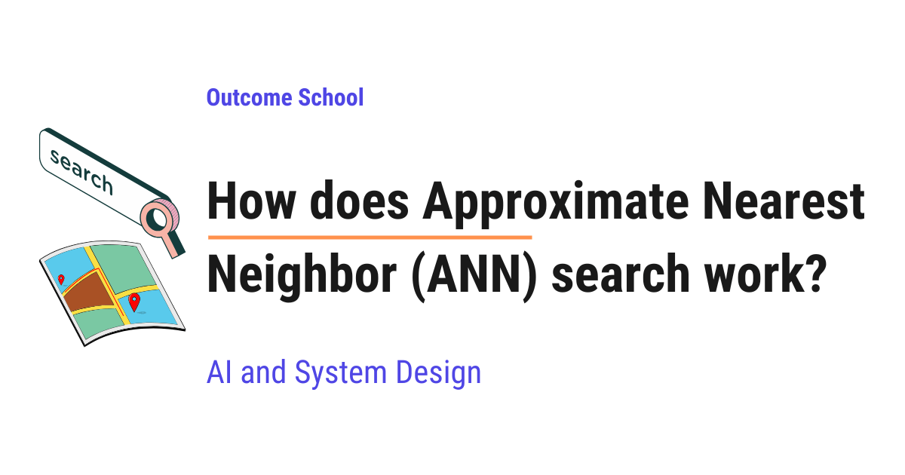
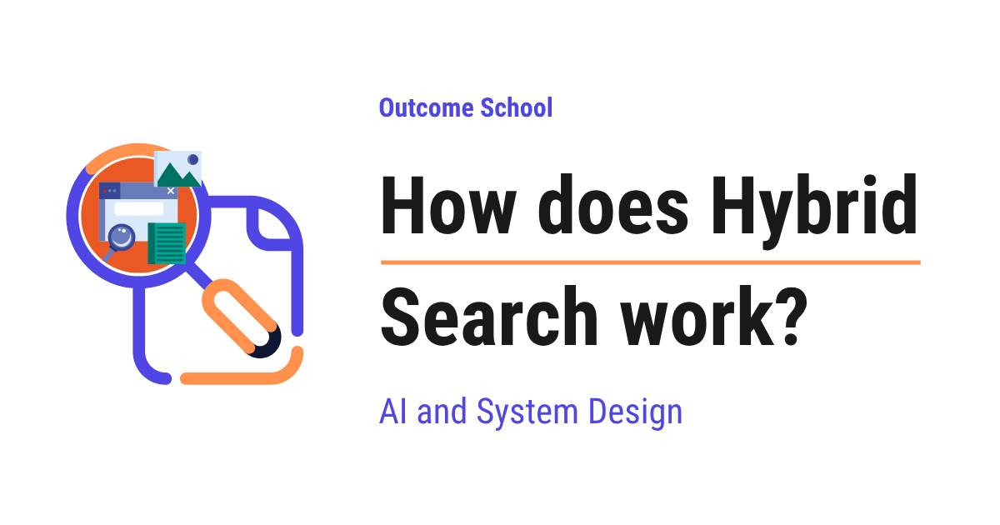
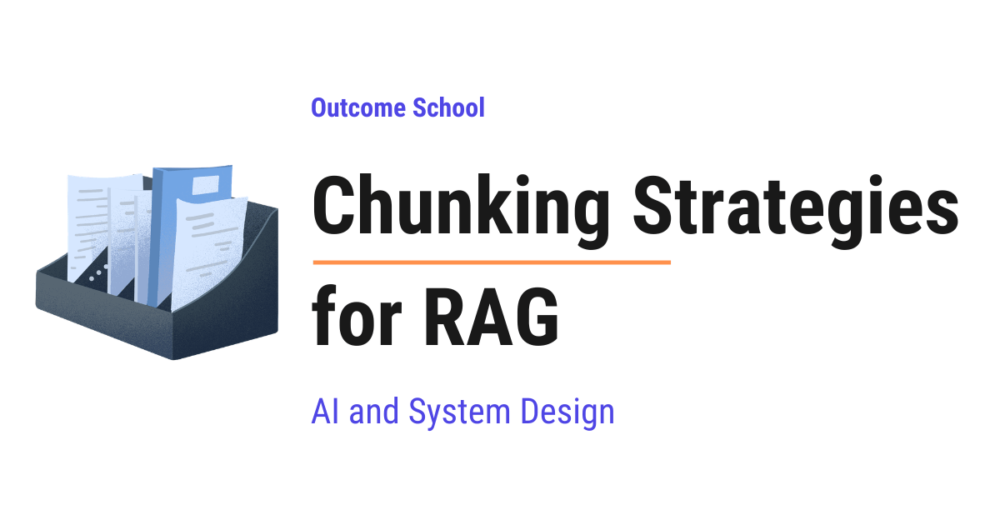
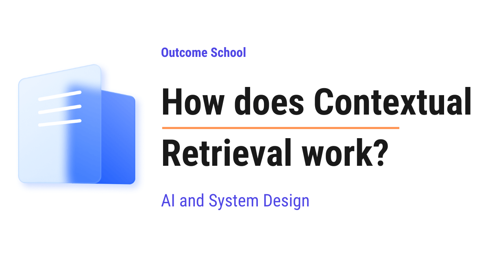
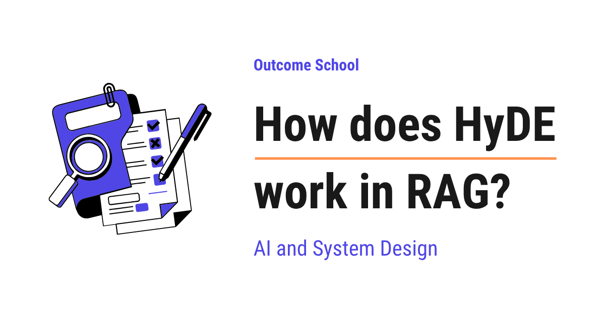
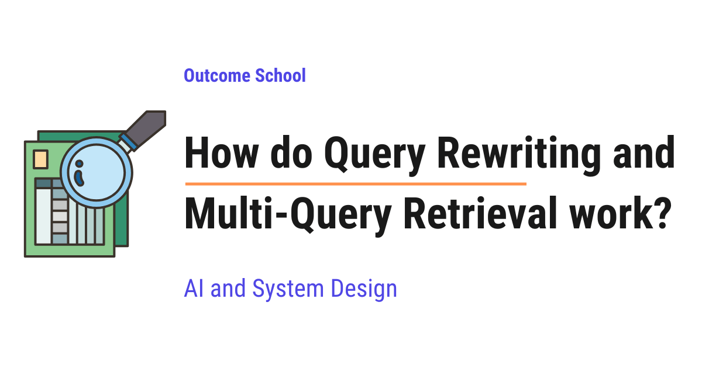
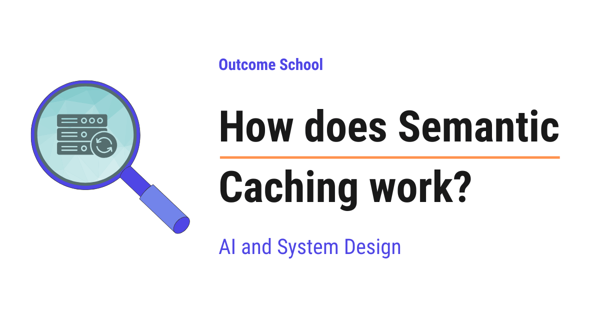
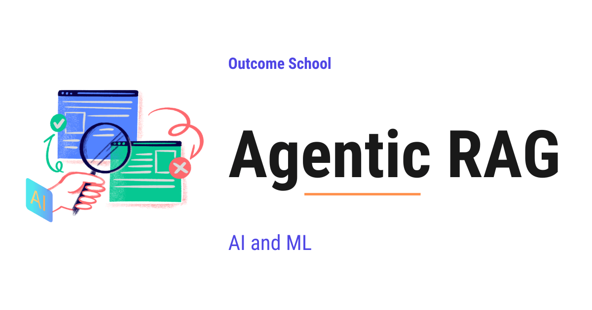
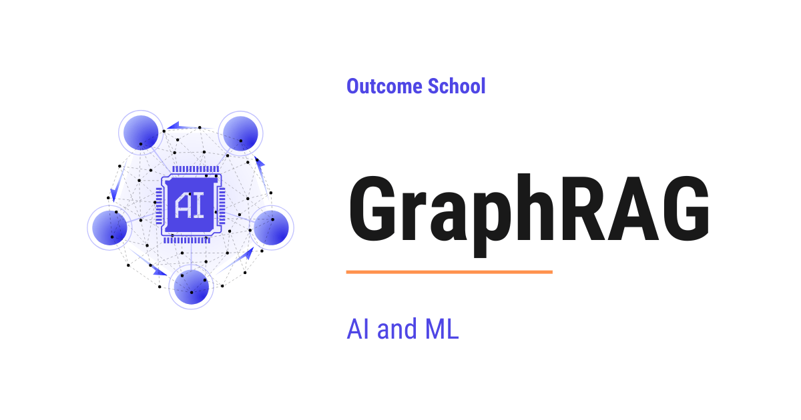
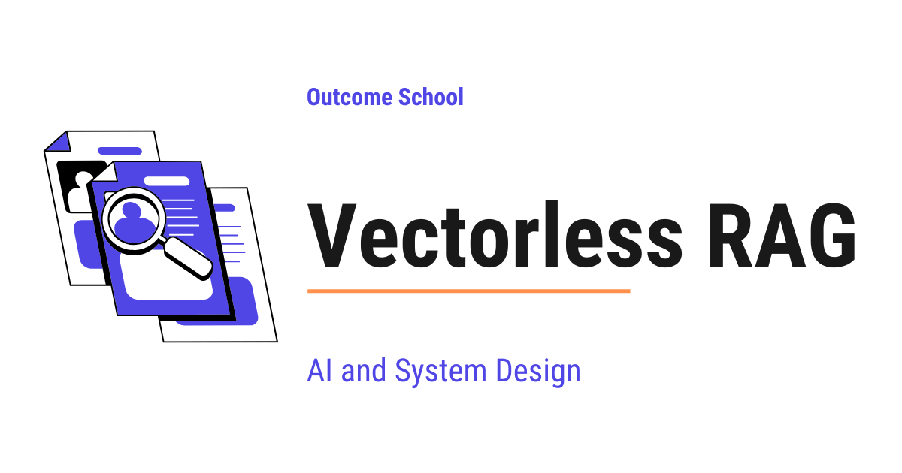

AI Engineering Course
Module 9
Vector Search and Retrieval-Augmented Generation (RAG)
Personal offline study copy. Content © Outcome School / Amit Shekhar. Not for redistribution. See study/NOTICE.md.
Contents
- Module 9: Vector Search and Retrieval-Augmented Generation (RAG)
- 9.1 How does a Vector Database work?
- 9.2 How does Approximate Nearest Neighbor (ANN) search work?
- 9.3 How does Semantic Search work?
- 9.4 How does Hybrid Search work?
- 9.5 How does a Reranker work?
- 9.6 What is ColBERT? Late Interaction Retrieval Explained
- 9.7 How to Chunk Documents for RAG? Chunking Strategies Explained
- 9.8 How does Contextual Retrieval work?
- 9.9 How does HyDE work in RAG?
- 9.10 How do Query Rewriting and Multi-Query Retrieval work?
- 9.11 How does an Embedding Cache work?
- 9.12 How does Semantic Caching work?
- 9.13 What is Agentic RAG? How It Works and When to Use It
- 9.14 What is GraphRAG? How Knowledge Graphs Improve RAG
- 9.15 What is Vectorless RAG? RAG Without Embeddings or a Vector Database
Module 9
Vector Search and Retrieval-Augmented Generation (RAG)
In this module, we will learn how to give an LLM knowledge that it was never trained on. We will start with how vectors are stored and searched, then move to retrieval techniques, and finally to the advanced forms of RAG.
By the end of this module, we will be able to build a production-grade RAG pipeline and pick the right retrieval technique for our data.
Lesson 9.1
How does a Vector Database work?

A Vector Database is a special kind of database that stores data as lists of numbers and helps us find items that are similar in meaning, not just items that match exactly.
In this blog, we will learn about how a Vector Database works. This is one of the most important pieces behind modern AI search, recommendations, and tools like ChatGPT that answer questions from our own documents.
We will cover the following:
- What is a Vector Database?
- A quick recap of embeddings
- Why normal databases fall short
- What a Vector Database actually stores
- How do we measure similarity?
- Cosine similarity
- Dot product
- Euclidean distance
- The nearest neighbour problem
- Why brute force is too slow
- Approximate Nearest Neighbour (ANN) and indexing
- HNSW explained simply
- IVF explained simply
- PQ explained simply
- A small code example
- Real-world applications of Vector Databases
Let's get started.
What is a Vector Database?
A Vector Database is a special kind of database that stores data as numbers and helps us find items that are similar in meaning, not just items that match exactly.
In simple words, a normal database is good at finding exact matches. A vector database is good at finding things that are close in meaning.
Let's decompose the term:
Vector Database = Vector + Database
A Database is just an organized place to store data so that we can find it later. A Vector is simply a list of numbers, for example [0.21, 0.87, 0.13].
So, a Vector Database is a database built to store lists of numbers and to quickly find the lists that are most similar to a given list.
Now, the obvious question is: why would we store data as a list of numbers? To answer that, we must first recall what embeddings are.
A quick recap of embeddings
Before jumping into vector databases, we must know about embeddings, because vectors come from embeddings.
An embedding is a list of numbers that represents the meaning of something, for example a word, a sentence, an image, or a song.
A special AI model reads our data and turns it into these numbers. The model is trained in such a way that things with similar meaning get similar numbers. Since calling embedding models costs both time and money, we have a detailed blog on how an Embedding Cache works that explains how to avoid recomputing them for the same text.
Let's say we turn three words into embeddings:
"king" -> [0.91, 0.12, 0.55]
"queen" -> [0.89, 0.15, 0.58]
"banana" -> [0.10, 0.95, 0.03]
Here, we can see that king and queen have numbers that are close to each other, because they are related in meaning. The word banana has very different numbers, because it has nothing to do with kings and queens.
This is the key idea: similar meaning gives similar numbers. Each embedding is a vector, and that is exactly what we store inside a vector database.
If we are curious how a model learns to place similar meanings close together and push different ones apart, we have a detailed blog on Contrastive Learning that explains how it works.
Now that we have recalled embeddings, let's understand why a normal database is not enough.
Why normal databases fall short
A normal database, for example MySQL or PostgreSQL, is excellent at exact matching.
Suppose we search for the word apple. A normal database will find every row that contains exactly the word apple. This works perfectly when we know the exact value we are looking for.
But, here is the catch. What if the user searches for fruit that keeps the doctor away? A normal database will look for those exact words. It does not understand that the answer is apple. It has no sense of meaning.
Let's say we have these documents:
- "An apple a day keeps the doctor away."
- "Bananas are rich in potassium."
- "The doctor recommended eating more fruits."
If we search healthy fruit advice from a doctor, a normal database will struggle, because none of the documents contain that exact phrase. It matches words, not meaning.
We can picture this difference like below:
Query: "healthy fruit advice from a doctor"
| |
v v
Normal Database Vector Database
(matches EXACT words) (matches MEANING)
| |
v v
No row has these Finds the apple article
exact words and the doctor article
| |
v v
Result: misses the meaning Result: closest in meaning
Here, we can see that the same query goes to both, but the normal database fails because no row contains those exact words, while the vector database succeeds because it looks at meaning and returns the closest matches.
Note: Out of the box, a normal database matches exact words and falls short here. Some databases can now add vector search through an extension, for example PostgreSQL with pgvector. But they do this using the very same vector search ideas we are about to learn. So the real question is not normal database versus vector database. It is whether the database can search by meaning at all.
So, we need a system that understands meaning and finds the closest matches even when the exact words are different. This is where the vector database comes into the picture.
What a Vector Database actually stores
A vector database stores three things together for each item:
- The vector - the list of numbers (the embedding) that represents the meaning.
- The original data - the actual text, image link, or product, so that we can show it back to the user.
- The metadata - extra information like category, date, author, or price, used for filtering.
Let's say we store an article about apples. Inside the vector database, it looks like below:
ID: 101
Vector: [0.91, 0.12, 0.55, ... ]
Data: "An apple a day keeps the doctor away."
Metadata: { "category": "health", "year": 2024 }
Here, we can see that the vector carries the meaning, the data is what we show to the user, and the metadata helps us filter results, for example showing only articles from the year 2024.
There are two ways to use this metadata while searching. We can filter first and then run the similarity search only on the items that pass the filter, which is called pre-filtering. Or we can run the similarity search first and then drop the results that do not match the filter, which is called post-filtering. Pre-filtering is usually the better choice, because it does not waste the search on items we will throw away anyway.
This is how a vector database keeps both the meaning and the original content side by side.
How do we measure similarity?
Now we have a bunch of vectors stored. When a user searches, we convert their search into a vector too. Then we need to find the stored vectors that are most similar to it.
But, how do we measure how similar two vectors are? We use a similarity metric. A similarity metric is just a formula that takes two vectors and gives back a number that tells us how close they are.
There are three common metrics: cosine similarity, dot product, and euclidean distance. Do not worry, we will learn about each of them in detail, with a formula, an example, and a diagram.
Cosine similarity
Cosine similarity measures the angle between two vectors. It does not care how long the vectors are. It only cares about the direction they point in.
In simple words, if two vectors point in the same direction, they are similar, even if one is longer than the other.
The result is always between -1 and 1:
- A value close to 1 means the vectors point in almost the same direction, so they are very similar.
- A value close to 0 means the vectors are at a right angle, so they are unrelated.
- A value close to -1 means the vectors point in opposite directions, so they are very different.
We can picture it like below:
small angle -> cosine near 1 (very similar)
B
/
/
/
+---------- A
right angle -> cosine near 0 (unrelated)
B
|
|
|
+---------- A
Here, we can see that a small angle means the arrows point almost the same way, which gives a value near 1. A right angle means they are unrelated, which gives a value near 0.
The formula is as below:
cosine similarity = (A · B) / (|A| × |B|)
Here, A · B is the dot product, which we get by multiplying the matching numbers of the two vectors and adding them up. |A| and |B| are the lengths, or sizes, of the two vectors. We will look at the dot product more closely in the very next section, but this one line is all we need for now.
Let's see it in action with an example. Suppose we have two vectors:
A = [2, 3]
B = [4, 6]
Notice that B is just A with every number doubled, so both point in the exact same direction.
Step 1: Multiply the matching numbers and add them up. This gives the dot product.
A · B = (2 × 4) + (3 × 6) = 8 + 18 = 26
Step 2: Find the length of A. The length is found by squaring each number, adding them, and taking the square root.
|A| = √(2² + 3²) = √(4 + 9) = √13 ≈ 3.61
Step 3: Find the length of B in the same way.
|B| = √(4² + 6²) = √(16 + 36) = √52 ≈ 7.21
Step 4: Divide the dot product by the two lengths multiplied together.
cosine similarity = 26 / (3.61 × 7.21) ≈ 26 / 26.0 ≈ 1.0
The result is 1.0, which means the two vectors are as similar as possible. This matches what we expected, because they point in the same direction.
Note: The full range of cosine similarity is -1 to 1. But many modern embedding models give us normalized vectors, and with those the value usually stays between 0 and 1 in practice. So in real text search, we rarely see negative values.
This is why cosine similarity is the most popular choice for text and semantic search. Two sentences with the same meaning point in the same direction, even if one is much longer than the other.
Dot product
Dot product is the simplest of the three. We multiply the matching numbers of the two vectors and add up all the results into a single number.
The formula is as below:
A · B = (a₁ × b₁) + (a₂ × b₂) + (a₃ × b₃) + ...
In simple words, we line up the two lists of numbers, multiply them position by position, and add everything together.
Let's see it with an example. Suppose we have:
A = [1, 2, 3]
B = [4, 5, 6]
Then the dot product is below:
A · B = (1 × 4) + (2 × 5) + (3 × 6)
= 4 + 10 + 18
= 32
We can picture the same idea like below:
A: 1 2 3
× × × (multiply each matching pair)
B: 4 5 6
= = =
4 + 10 + 18 = 32 (then add the results)
Here, we can see that each number in A is multiplied with the number right below it in B, and then all of them are added to give a single number, 32.
A larger dot product means more similarity. Let's check this with one more vector:
C = [0, 0, 1]
A · C = (1 × 0) + (2 × 0) + (3 × 1) = 0 + 0 + 3 = 3
Here, we can see that A and B give 32, while A and C give only 3. So A is much more similar to B than to C.
But, here is the catch. The dot product is affected by the size of the vectors, not just their direction. A longer vector can give a bigger dot product even when the direction is not a great match. This is why the dot product works best when all vectors are normalized, which means scaled to the same length. When the vectors are the same length, the dot product and cosine similarity agree with each other.
This is why the dot product is a fast and popular choice when our vectors are already normalized.
Euclidean distance
Euclidean distance measures the straight-line distance between two points. It is the same distance we would measure with a ruler between two dots on paper.
For this metric, we treat each vector as a point in space. The closer the two points are, the more similar they are. So, unlike the previous two metrics, here a smaller value means more similar.
The formula is as below:
distance = √( (a₁ - b₁)² + (a₂ - b₂)² + ... )
In simple words, we subtract the matching numbers, square each result, add them up, and take the square root.
Let's see it with an example. Suppose we have two points:
A = [1, 2]
B = [4, 6]
Step 1: Subtract the matching numbers.
(1 - 4) = -3 and (2 - 6) = -4
Step 2: Square each result.
(-3)² = 9 and (-4)² = 16
Step 3: Add them and take the square root.
distance = √(9 + 16) = √25 = 5
So the distance between A and B is 5.
We can picture it on a simple grid like below:
y
6 | B (4, 6)
5 | / :
4 | / : vertical gap = 4
3 | / :
2 | A (1, 2) ........:
1 | horizontal gap = 3
0 +----------------------- x
0 1 2 3 4 5
Here, we can see that the horizontal gap is 3 and the vertical gap is 4, and the euclidean distance is just the length of the straight line joining the two points, which comes out to 5.
Let's check with one more point:
C = [1, 3]
distance from A = √( (1 - 1)² + (2 - 3)² ) = √(0 + 1) = 1
Here, we can see that C is at a distance of 1 from A, while B is at a distance of 5. So C is much closer to A, which means C is more similar to A than B is.
This is why euclidean distance is a natural choice for image and spatial data, where the actual position and the gap between points carry meaning.
Now that we have learned all three metrics, let me tabulate the differences between them for your better understanding so that you can decide which one to use based on your use case.
| Metric | What it measures | Similar means | Common use |
|---|---|---|---|
| Cosine similarity | Angle between vectors | Value close to 1 | Text and semantic search |
| Dot product | Direction and size combined | Larger value | When vectors are normalized |
| Euclidean distance | Straight-line gap | Smaller distance | Image and spatial data |
Here, we can notice that cosine similarity and dot product give a higher number for similar items, while euclidean distance gives a lower number for similar items. We just pick the metric that fits our data.
This is how we measure similarity. Now, let's understand the actual problem of finding the closest vectors.
The nearest neighbour problem
When a user searches, we convert their query into a vector. Then we want to find the stored vectors that are nearest to it.
This is called the nearest neighbour problem. In simple words, given one vector, find the closest vectors from millions of stored vectors.
Let's say the user searches healthy fruit. We turn it into a vector. Then we compare it against every stored vector and pick the top few that are most similar.
The top results will be the apple article and the banana article, because both are about healthy fruits, even though the user never typed those exact words. That is the magic of searching by meaning.
Let's see the full journey of a search from start to finish as below:
User query (text)
"healthy fruit"
|
v
Embedding Model
(turns text into numbers)
|
v
Query Vector
[0.90, 0.13, 0.56, ...]
|
v
Vector Database
(similarity search)
|
v
Top matching results
(apple article, banana article)
Here, we can see that the user types plain text, the embedding model turns it into a query vector, the vector database compares that vector against the stored ones, and finally it returns the top matching results that are closest in meaning.
So, the goal is simple: find the nearest neighbours of the query vector. Now, the next big question is how to do this fast.
Why brute force is too slow
The simplest way to find the nearest neighbours is brute force.
In brute force, we compare the query vector with every single stored vector, one by one, and keep the closest ones.
Let's say we have 10 vectors. Comparing against all 10 is easy and quick. But, real applications do not have 10 vectors. They have millions or even billions.
Suppose we have 100 million vectors, and each vector has 1000 numbers. For one search, we would do 100 million comparisons, and each comparison touches 1000 numbers. That is 100 billion calculations for a single search.
And, users expect results in a few milliseconds. Brute force simply cannot keep up at this scale.
The issue with this approach is that it is too slow for large data. Let's see how the next approach solves this issue.
Approximate Nearest Neighbour (ANN) and indexing
So, here comes the idea of Approximate Nearest Neighbour, often written as ANN, to the rescue.
The key insight is this: we do not always need the perfect closest match. We need a very close match, returned very fast.
In simple words, ANN trades a tiny bit of accuracy for a huge gain in speed. Instead of checking every vector, it cleverly skips most of them and only checks the ones that are likely to be close.
Let's compare the two approaches like below:
Brute force (exact):
query -> compare with ALL 100,000,000 vectors -> perfect match, but very slow
ANN (approximate):
query -> jump to the promising area -> check only a few thousand -> very close match, super fast
Here, we can see that brute force checks everything to be perfectly correct, while ANN jumps close to the answer and checks only a small part of the data.
Now, the question is: how close is good enough? We measure this with recall. Recall tells us how many of the truly closest vectors our search managed to find.
Let's say the true top 10 closest vectors are the perfect answer. If ANN returns 9 of those 10, the recall is 90 percent. In most real applications, returning 9 out of 10 in a few milliseconds is far better than returning all 10 but taking several seconds.
To make this skipping possible, the vector database builds an index. An index is a smart structure that organizes the vectors in advance, so that during a search we can jump straight to the promising area instead of scanning everything.
Let's understand this with a simple example. Suppose we want to find a friend living in a city. Brute force means knocking on every single door in the whole country. An index is like first going to the right city, then the right street, and only then checking a few houses. We reach the answer much faster.
Three of the most popular techniques here are HNSW, IVF, and Product Quantization, often written as PQ. HNSW and IVF help us decide which vectors to check, while PQ helps us shrink each vector to save memory. Let's understand them one by one.
HNSW explained simply
HNSW stands for Hierarchical Navigable Small World. The name sounds heavy, but the idea is simple. Let's decompose it:
- Hierarchical means it is built in layers, stacked on top of each other.
- Navigable Small World means the points are connected to each other like friends in a social network, where we can reach anyone in just a few hops.
So, we can think of it as a layered map of connections, where similar vectors are linked to each other like friends in a network.
Let's understand it layer by layer.
The top layer has very few points, spread far apart. It is like a map showing only big cities. We can jump across large distances quickly.
The middle layers have more points, closer together. It is like a map showing towns within a region.
The bottom layer has all the points, very close together. It is like a street-level map showing every house.
When we search, we start at the top layer and take big jumps toward the area near our query. Then we move down to the next layer and take smaller, more careful steps. We keep going down until we reach the bottom layer, where we find the final closest neighbours.
Here is a simple picture of the search. Let's say we are looking for the point closest to our query, and the answer turns out to be E:
Layer 2 (top): A --------------- F few points, big jumps
|
v
Layer 1 (middle): A --- C --- D --- F more points, medium steps
|
v
Layer 0 (bottom): A-B-C-D-E-F-G-H all points, fine steps -> reach E
Here, we can see that we begin with big jumps at the top, then take medium steps in the middle, and finally take fine steps at the bottom to land on the closest point E. We never had to check every single point.
Let's walk through it once more in simple words:
- Step 1: Enter at the top layer, where only a few points exist. Move to the point closest to our query. This covers a lot of ground in one big jump.
- Step 2: Drop down to the middle layer. From the point we reached, move to an even closer neighbour.
- Step 3: Drop down to the bottom layer. Take small, careful steps among the closely packed points until we reach the nearest one.
This is how HNSW gives us very fast and very accurate searches. It is the most widely used index in modern vector databases.
IVF explained simply
IVF stands for Inverted File Index. This is another clever way to speed up the search.
The idea is to group similar vectors into clusters before any search happens. This grouping is done once, in advance.
Let's say we group all our vectors into a few clusters. Each cluster has a center point, which represents the average of that group. We can picture the clusters like below:
Cluster 1 Cluster 2 Cluster 3
+----------+ +----------+ +----------+
| x x | | x x | | x x x |
| C1 | | C2 | | C3 |
| x x | | x x | | x x |
+----------+ +----------+ +----------+
C1, C2, C3 are the center points (the average of each group)
each x marks one stored vector inside the cluster
Here, we can see that the vectors are divided into groups, and each group has one center point that sits in the middle of it.
Now, when a user searches, we do the following.
First, we compare the query vector with only the cluster centers, not the millions of vectors. Then, we pick the few clusters whose centers are closest to the query. After that, we search only inside those few clusters and ignore the rest.
Let's see the search journey like below:
Query
|
v
Compare with cluster centers only (cheap, just a few comparisons)
|
v
Pick the closest clusters (say, the 3 nearest clusters)
|
v
Search only inside those clusters (ignore all the other clusters)
Here, we can see that IVF first narrows down to a few clusters, then searches only inside them.
Let's put real numbers to see the saving. Suppose we have 100 million vectors split into 100 clusters, so each cluster holds 1 million vectors. If we search only the 3 closest clusters, we check 3 million vectors instead of 100 million. That is a huge saving, and the search becomes much faster than brute force.
Note: There is a small trade-off. If the true closest vector happens to sit in a cluster we skipped, we will miss it. To reduce this risk, we can search a few more clusters, which improves accuracy but takes a little more time. We tune this based on our use case.
PQ explained simply
PQ stands for Product Quantization. As we just saw, HNSW and IVF help us pick which vectors to check. PQ is different. It does not pick vectors. It shrinks each vector so that it takes much less memory.
Let's understand the memory problem first. Suppose each vector has 128 numbers, and each number takes 4 bytes. That is 512 bytes for a single vector. For 1 billion vectors, that is around 512 gigabytes, just to hold the vectors. This is very expensive to keep in memory.
So, the question is: can we store each vector in a smaller form, without losing too much of its meaning? This is exactly what PQ does. The idea of PQ is to compress each vector into a tiny code. Let's understand it step by step.
Step 1: Split each vector into smaller pieces. For example, we cut a 128-number vector into 8 pieces, where each piece has 16 numbers.
Step 2: For each piece, we prepare a small set of common sample pieces in advance, called a codebook. We can think of it as a box of, for example, 256 ready-made sample pieces.
Step 3: For each piece of our vector, we find the closest sample in the codebook and store just that sample's number, from 0 to 255, instead of the full 16 numbers.
So now, instead of storing 128 real numbers, we store only 8 small codes. Each code takes just 1 byte, so the whole vector becomes 8 bytes instead of 512 bytes. That is a 64 times saving in memory.
We can picture it like below:
Original vector (128 numbers, 512 bytes)
[ piece 1 ][ piece 2 ][ piece 3 ] ... [ piece 8 ]
| | | |
v v v v
code 37 code 12 code 200 ... code 5 (each code is 1 byte)
Compressed vector (8 codes, 8 bytes)
Here, we can see that each piece is replaced by the closest ready-made sample from its codebook, and we store only the sample's number. The full vector shrinks from 512 bytes to just 8 bytes.
During a search, we compare using these small codes, which uses far less memory and runs faster.
Note: PQ trades a little accuracy for a huge saving in memory, because the compressed vector is only an approximation of the original. In practice, PQ is often combined with IVF, where IVF first narrows down to a few clusters and PQ keeps each vector small. This combination, called IVF-PQ, is what makes searching over billions of vectors affordable.
There are also simpler forms of compression called scalar quantization and binary quantization. They shrink each number to a smaller size, and they are easier to use than PQ. This makes them very popular in production when we want to save memory with less effort.
This was all about indexing and compression. Now, let's see a small code example to make it concrete.
A small code example
Let's see the code as below. We will use FAISS, a popular open-source library from Meta for vector search.
import faiss
import numpy as np
# Suppose each vector has 4 numbers (dimensions)
dimension = 4
# Create a simple index that uses euclidean distance
index = faiss.IndexFlatL2(dimension)
# Our stored vectors (each row is one item's embedding)
vectors = np.array([
[0.91, 0.12, 0.55, 0.10], # apple article
[0.10, 0.95, 0.03, 0.40], # banana article
[0.88, 0.15, 0.58, 0.12], # doctor and fruit article
], dtype="float32")
# Add the vectors to the index
index.add(vectors)
# The user's search, turned into a vector
query = np.array([[0.90, 0.13, 0.56, 0.11]], dtype="float32")
# Find the 2 nearest neighbours
distances, ids = index.search(query, 2)
print(ids)
print(distances)
Here, we have done the following steps:
- We created an index with
IndexFlatL2, which uses euclidean distance. - We added three stored vectors to the index.
- We created a query vector for the user's search.
- We asked for the top 2 nearest neighbours using
index.search.
This will print the following:
[[0 2]]
[[0.0004 0.0013]]
Here, we can see that the closest matches are item 0 (the apple article) and item 2 (the doctor and fruit article), because their vectors are nearest to the query. The small distance values confirm they are very close in meaning.
One thing to notice here is that IndexFlatL2 returns the squared euclidean distance. It skips the final square root step for speed. So the values 0.0004 and 0.0013 are the squared distances, not the plain distances from our earlier formula. The order of the results stays exactly the same either way, so the nearest item is still correctly the nearest.
Note: IndexFlatL2 is brute force and is fine for small data. For millions of vectors, we would use an ANN index like HNSW or IVF, which FAISS also supports. The search code stays almost the same, but it runs far faster.
This is how, in just a few lines, we store vectors and find the most similar ones.
Real-world applications of Vector Databases
Now, let's discuss where vector databases are actually used. They power many products we use every day.
Semantic search: This is search by meaning. When we type cheap flights to the beach, the system understands the intent and returns relevant results even if those exact words are missing.
RAG for LLMs: RAG stands for Retrieval Augmented Generation. This is how tools like ChatGPT answer questions from our own documents. First, our documents are cut into smaller chunks, converted into vectors, and stored in a vector database. Then, when we ask a question, the database finds the most relevant pieces. After that, those pieces are given to the LLM, which writes an answer based on them. This way, the AI answers using our private data instead of guessing. We have a detailed blog on Agentic RAG that explains how modern RAG systems retrieve and reason over multiple sources.
Recommendations: When a shopping site shows products you may like, it converts products and our taste into vectors, then finds products with similar vectors. This is how we get suggestions that actually match our interest.
Image search: When we search by uploading a photo, the image is turned into a vector. The vector database then finds images with similar vectors, giving us visually similar pictures.
Duplicate and fraud detection: Similar transactions or similar documents end up with similar vectors. The vector database quickly finds these near matches, which helps in catching duplicates and suspicious activity.
Semantic caching: An AI app can store past answers and reuse one whenever a new question means the same thing. It finds the closest saved question by vector similarity and skips calling the model again, which is exactly how Semantic Caching works.
As a next step, there are a few more ideas worth exploring once we are comfortable with the basics here. Hybrid search mixes vector search with traditional keyword search, so we get both meaning and exact word matches in one system. And beyond HNSW and IVF, we will come across other indexes like DiskANN and ScaNN, which are built to search very large data efficiently. These are good directions to explore as we go deeper. On the query side, HyDE improves what we search with - instead of the raw question, it searches with a hypothetical answer that looks more like the documents we want, and we have a detailed blog on how HyDE works that covers this end to end. Once we have a shortlist of candidates, a Reranker can reorder them by true relevance before they reach the LLM - we have a detailed blog on how a Reranker works that explains this step by step.
It is also worth knowing when we do not need a vector database at all. We have a detailed blog on Vectorless RAG that covers how retrieval can work by reading the structure of a document instead of matching vectors.
This is how a vector database stores meaning as numbers and finds the most similar items at huge scale, which makes modern AI search, recommendations, and assistants possible.
Frequently Asked Questions
Can we use PostgreSQL instead of a dedicated vector database?
Yes, with an extension. Out of the box, a normal database matches exact words and falls short for search by meaning. But PostgreSQL can add vector search through pgvector, which uses the very same vector search ideas. So the real question is not normal database versus vector database, but whether the database can search by meaning at all.
Is pre-filtering or post-filtering better in a vector database?
Pre-filtering is usually the better choice. In pre-filtering, we filter by metadata first and then run the similarity search only on the items that pass. In post-filtering, we search first and then drop the results that do not match. Pre-filtering does not waste the search on items we will throw away anyway.
Does a vector database always return the exact closest matches?
No, not when it uses Approximate Nearest Neighbour search. ANN trades a tiny bit of accuracy for a huge gain in speed, and we measure how close it gets with recall. For example, returning 9 of the true top 10 in a few milliseconds is far better for most applications than returning all 10 in several seconds.
Which similarity metric should we use for text search?
Cosine similarity is the most popular choice for text and semantic search. It measures the angle between two vectors and ignores their length, so two sentences with the same meaning score as similar even if one is much longer. The dot product also works well when the vectors are normalized, while Euclidean distance suits image and spatial data.
Do we always need a vector database for RAG?
No. Vectorless RAG is an approach where retrieval works by reading the structure of a document instead of matching vectors. In a typical RAG setup, though, our documents are cut into chunks, converted into vectors, and stored in a vector database, which then finds the most relevant pieces for the LLM.
Lesson 9.2
How does Approximate Nearest Neighbor (ANN) search work?

Approximate Nearest Neighbor (ANN) Search finds an item that is very close to the true most similar one, but much faster, by using clever shortcuts and allowing a tiny chance of not being perfectly exact.
In this blog, we will learn about Approximate Nearest Neighbor (ANN) Search, the idea that lets apps find "similar" things in a huge collection in the blink of an eye. It powers search engines, recommendation systems, face matching, and the memory behind modern AI chatbots. We will also see why the naive approach fails, how trees, hashing, clustering, and graphs make the search fast, and where ANN search is used in the real world.
We will cover the following:
- What is Nearest Neighbor Search?
- How do we turn things into numbers (vectors)?
- How do we measure "closeness"?
- The naive approach and why it fails
- What is Approximate Nearest Neighbor (ANN) Search?
- The trade-off: speed vs accuracy
- Approach 1: Trees (KD-Tree)
- Approach 2: Hashing (LSH)
- Approach 3: Clustering (IVF)
- Approach 4: Graphs (HNSW)
- A simple code example
- Where ANN Search is used
- Picking the right method
Let's get started.
What is Nearest Neighbor Search?
Nearest Neighbor Search means finding the item in a collection that is the most similar to a given item.
A neighbor is something that lives close to us. The nearest neighbor is the one that lives closest of all.
Let's say we walk into a music app and play one song. The app then says, "Here are songs similar to this one." To do that, the app looked at its whole library and found the songs that are closest in style to the one we played. That is nearest neighbor search.
Here are some everyday examples of the same idea:
- We upload a photo, and the app finds similar-looking photos.
- We type a question, and a search engine finds the most relevant answers.
- We watch one video, and the app suggests the next similar video.
So, nearest neighbor search is simply "find me the most similar thing". Now, the question is: how does a computer measure how similar two things are? For that, we first need numbers.
How do we turn things into numbers (vectors)?
A computer does not understand a song, a photo, or a sentence directly. It only understands numbers. So, the first step is to turn every item into a list of numbers.
This list of numbers is called a vector.
Vector = a list of numbers that describes an item
In simple words, a vector is like a fingerprint made of numbers. Each item gets its own fingerprint.
Let's say we describe a person using just two numbers: their age and their height. Then a person becomes a vector of two numbers, like below:
Person A -> [ 25, 170 ]
Person B -> [ 27, 172 ]
Person C -> [ 60, 165 ]
Here, we can see that each person is now a list of two numbers. Person A and Person B have similar numbers, so they are similar. Person C has a very different age, so Person C is far from the other two.
Real items like photos and sentences are not described by just two numbers. They are described by hundreds or even thousands of numbers. A special kind of model, called an embedding model, reads an item and produces this vector for us. We do not need to know how it works right now. We just need to know that it turns any item into a vector, and similar items get similar vectors. We have a detailed blog on Contrastive Learning that explains how models learn to give similar items similar vectors.
So, every song, photo, and sentence becomes a point in space described by numbers. Now, let's learn how to measure the distance between two such points.
How do we measure "closeness"?
Once everything is a vector, "similar" becomes "close", and "different" becomes "far". So, we need a way to measure the distance between two vectors.
The most common way is Euclidean distance. This is just the straight-line distance between two points, the same distance we measure with a ruler.
Let's take two simple vectors with two numbers each:
A = [ 1, 2 ]
B = [ 4, 6 ]
We find the difference in each number, square it, add them, and take the square root:
- difference in first number: 4 - 1 = 3
- difference in second number: 6 - 2 = 4
- distance = square root of (3 squared + 4 squared) = square root of (9 + 16) = square root of 25 = 5
So, the distance between A and B is 5. A smaller distance means the two items are more similar.
We can picture these two points on a simple grid like below:
6 -| B (4,6)
5 -| /
4 -| /
3 -| / distance = 5
2 -| A (1,2)---/
1 -|
0 -+----------------------
0 1 2 3 4 5 6
Here, we can see two points A and B on a grid. The straight line connecting them is the Euclidean distance, and its length is 5. The closer two points sit, the shorter this line, and the more similar the items are.
Note: There is another popular measure called cosine similarity, which looks at the angle between two vectors instead of the gap between them. It is widely used for text. For now, we just need the core idea: there is a number that tells us how close two vectors are.
So, now finding the nearest neighbor means finding the vector with the smallest distance to our query. Let's see the simplest way to do that.
The naive approach and why it fails
The most obvious way to find the nearest neighbor is to check every single item.
We take our query vector, measure its distance to every vector in the collection, and keep the one with the smallest distance. This is called the brute-force approach, and it is also called exact search because it always gives the perfect answer.
Let's see this approach like below:
query ----compare----> item 1 (distance = 12)
query ----compare----> item 2 (distance = 3) <- closest so far
query ----compare----> item 3 (distance = 9)
query ----compare----> item 4 (distance = 7)
...
query ----compare----> item N (distance = 5)
Here, we can see that we compare the query against every single item, one by one, and pick the smallest distance. For a small collection, this works perfectly.
But, here is the catch. Real collections are huge.
Let's say we have one billion vectors, and each vector has 1000 numbers. To answer one query, we must do one billion distance calculations, and each calculation touches 1000 numbers. That is a thousand billion operations for a single search. And large apps handle thousands of searches every second.
So, the brute-force approach is too slow. It does not scale. We need something much faster.
So, here comes Approximate Nearest Neighbor Search to the rescue.
What is Approximate Nearest Neighbor (ANN) Search?
Approximate Nearest Neighbor Search means finding a neighbor that is very close to the true nearest one, but much faster, by allowing a tiny chance of not being perfectly exact.
In simple words, instead of checking every item, we use clever shortcuts that look at only a small part of the collection and still find an answer that is almost always correct.
Let's decompose the term:
Approximate Nearest Neighbor = Approximate + Nearest Neighbor
Approximate means "very close to correct, but not guaranteed to be perfect". Nearest Neighbor is the most similar item, which we already learned.
The best way to understand this is by taking an example. Suppose we are in a giant library and we want a book on cooking. The brute-force way is to read the title of every single book in the building. That is perfect but extremely slow.
The smart way is to walk straight to the "Food and Cooking" section and look only there. We may not find the single best cookbook in the entire building, but we will almost certainly find an excellent one, and we will find it in seconds.
That is exactly what ANN does. It organizes the data in advance so that, at search time, it can jump to the right neighborhood and ignore everything else.
So, ANN trades a tiny bit of accuracy for a massive gain in speed. For almost every real app, this trade is more than worth it.
The trade-off: speed vs accuracy
Before we learn the methods, we must understand the one idea that connects all of them: the trade-off between speed and accuracy.
In ANN, we measure quality using a number called recall.
Recall is the percentage of times the approximate answer matches the true nearest neighbor.
A recall of 100 percent means the approximate answer is always perfect. A recall of 95 percent means it is correct 95 times out of 100, and slightly off the other 5 times. In practice, being slightly off usually means returning the second or third closest item instead of the very closest, which is perfectly fine for most apps.
We can picture the trade-off like below:
brute-force ANN (tuned for ANN (tuned for
(exact) high accuracy) high speed)
recall: 100% recall: ~99% recall: ~90%
speed: slow speed: fast speed: very fast
Here, we can see the whole picture. As we push for more speed, recall drops a little. As we push for more accuracy, speed drops a little. Every ANN method gives us a knob to balance these two, and we tune it based on our use case.
Now, let's learn the main approaches that make ANN fast. We will build them up one by one.
Approach 1: Trees (KD-Tree)
The first idea is to split the space into smaller and smaller regions, so we only search the region our query falls into.
A popular method here is the KD-Tree. The "KD" stands for "K-Dimensional", which simply means it works with vectors that have many numbers.
In simple words, a KD-Tree keeps cutting the space in half, again and again. Each cut sends us down one branch and lets us ignore the other branch.
Let's say all our points are spread on a flat board. First, we draw a vertical line that splits the points into left and right. Then, inside each side, we draw a horizontal line that splits them into top and bottom. We keep doing this, building a tree of cuts.
We can picture the tree like below:
[ all points ]
split by a vertical line
/ \
left region right region
/ \ / \
sub-region sub-region sub-region sub-region
Here, we can see that the whole space is cut into a tree of regions. When a query arrives, we follow the cuts down to the small region where it belongs, and we only compare against the few points in that region. We skip the rest of the tree.
The issue with this approach is that it works well only when each vector has few numbers. When vectors have hundreds of numbers, the cuts stop being helpful, and we end up checking almost everything anyway. This problem of high-dimensional data is famously called the curse of dimensionality.
So, trees are great for low-dimensional data but weak for the large, high-dimensional vectors used in modern AI. Let's see how the next approach solves this issue.
Approach 2: Hashing (LSH)
The next idea is to use a smart shortcut called hashing.
Normally, hashing turns an item into a short code, and very different items get very different codes. But for ANN, we use a special twist called Locality Sensitive Hashing, or LSH.
Locality Sensitive Hashing is a method that gives similar items the same code on purpose, so they land in the same bucket.
In simple words, LSH groups similar vectors into the same "bucket". At search time, we look only inside the query's bucket instead of the whole collection.
Let's say we sort thousands of marbles into a few boxes, and we make sure that marbles of similar color always go into the same box. Later, to find marbles similar to a red one, we open only the red box. We ignore all the other boxes.
We can picture LSH like below:
all vectors ---LSH---> Bucket 1: [ v3, v9, v14 ]
Bucket 2: [ v1, v7 ]
Bucket 3: [ v2, v5, v8, v11 ] <- query lands here
query ---LSH---> Bucket 3, so compare only with v2, v5, v8, v11
Here, we can see that LSH first drops every vector into a bucket. When a query arrives, we run the same hashing on it, find its bucket, and compare only with the few vectors in that bucket. We skip every other bucket.
The advantage is that this is very fast and uses simple, fixed rules. The disadvantage is that the accuracy can be uneven. Sometimes a true neighbor lands in a different bucket and we miss it. To fix this, we use several hash tables at once, which uses more memory.
So, LSH is fast and simple, but to get high accuracy it needs extra memory. Let's see how the next approach handles this.
Approach 3: Clustering (IVF)
The next idea is to group nearby vectors into clusters in advance, and then search only the clusters closest to our query.
This method is called IVF, which stands for Inverted File Index. The name sounds heavy, but the idea is simple.
In simple words, we divide all the vectors into groups, where each group has a representative center point, and at search time we only open the few groups whose centers are nearest to the query.
The best way to learn this is by taking an example. Suppose we sort all the people in a country by which city they live in. Each city has a center. To find people near a given location, we first find the nearest city or two, and then look only at the people in those cities. We do not scan the whole country.
This happens in two phases.
Step 1: Build the clusters (done once, in advance). We group all the vectors into clusters. Each cluster gets a center point that represents it. This grouping step is often done using a method called k-means, which simply finds natural groups in the data.
Step 2: Search (done for every query). When a query arrives, we first compare it only with the cluster centers, which are very few. We pick the nearest few clusters. Then we compare the query only with the vectors inside those chosen clusters.
We can picture IVF like below:
Cluster A (center cA): [ v1, v4, v8 ]
Cluster B (center cB): [ v2, v6 ]
Cluster C (center cC): [ v3, v5, v7, v9 ]
Step 1: query vs centers -> cA, cB, cC (pick nearest: cC)
Step 2: query vs members of C only -> v3, v5, v7, v9
Here, we can see that we first compare the query against a handful of cluster centers, not the whole collection. Then we open only the nearest cluster and compare against the vectors inside it. Everything else is skipped.
There is a knob here called nprobe, which decides how many clusters we open. If we open more clusters, we get higher accuracy but slower speed. If we open fewer clusters, we get more speed but lower accuracy. We tune nprobe based on our use case.
So, IVF gives us a clean balance and scales to billions of vectors. But we can have an even smarter approach than this too.
Approach 4: Graphs (HNSW)
The most popular ANN method today is based on graphs. It is called HNSW, which stands for Hierarchical Navigable Small World.
The name is long, so let's decompose it.
A graph is just a set of points connected by links. Here, each vector is a point, and we connect each vector to its nearby vectors with links. To find a neighbor, we hop from point to point along the links, always moving closer to the query. This is the "Navigable" part.
The Hierarchical part means we build several layers of this graph, stacked on top of each other. The top layer is sparse and has only a few points with long links. Each lower layer is denser. We start our search at the top, take big jumps to get close fast, and then drop into the lower, denser layers to fine-tune the answer.
The best way to understand this is by taking an example. Think of how we travel between two cities. First, we take a highway to cover most of the distance quickly, which is the top layer. Then, we take main roads, which is the middle layer. Finally, we take small local streets to reach the exact house, which is the bottom layer.
We can picture the layers like below:
Top layer (few points, long jumps)
A -------------------- F
\ /
\ /
Middle layer (more points)
A ---- C ---- D ---- F
\ / \ / \ /
Bottom layer (all points, short hops)
A - B - C - D - E - F - G <- final answer found here
Here, we can see the journey. We enter at the top layer and take large jumps to get into the right area quickly. Then we move down layer by layer, taking smaller and smaller hops, until we reach the closest point in the dense bottom layer. We never touch the points that are far away.
This greedy hopping is extremely fast and gives very high accuracy. This is why HNSW is the default choice in most modern vector databases.
The advantage is excellent speed and accuracy together. The disadvantage is that the graph uses more memory and takes longer to build than the other methods. But for most apps, the search speed matters most, so HNSW wins.
So, now we have learned the four main families of ANN: trees, hashing, clustering, and graphs.
A simple code example
Now, let's see ANN in action using a popular open-source library called FAISS, which is built for fast vector search. We will use the IVF method we just learned. Let's see the code as below:
import faiss
import numpy as np
# Suppose we have 100000 vectors, each with 128 numbers
dimension = 128
data = np.random.random((100000, dimension)).astype("float32")
# Build an IVF index with 100 clusters
quantizer = faiss.IndexFlatL2(dimension)
index = faiss.IndexIVFFlat(quantizer, dimension, 100)
# Step 1: learn the clusters from the data
index.train(data)
# Step 2: add all the vectors into the index
index.add(data)
# Open 10 nearest clusters per query (the nprobe knob)
index.nprobe = 10
# Search: find the 5 nearest neighbors of one query vector
query = np.random.random((1, dimension)).astype("float32")
distances, neighbors = index.search(query, 5)
print(neighbors)
Here, we have built an ANN search system, and let me explain each part.
datais our collection of 100000 vectors, each with 128 numbers.IndexIVFFlat(quantizer, dimension, 100)creates an IVF index that splits the data into 100 clusters.index.train(data)is Step 1. It learns the cluster centers from the data.index.add(data)is Step 2. It places every vector into its nearest cluster.index.nprobe = 10is the knob. It tells the search to open the 10 nearest clusters per query. A higher value gives more accuracy but less speed.index.search(query, 5)finds the 5 nearest neighbors of the query, returning their distances and positions.
So, in just a few lines, we have built a fast search over 100000 vectors without comparing against every single one. It works perfectly.
Where ANN Search is used
Now, let's discuss where ANN Search is used in the real world. We use it far more often than we realize.
- Semantic search: When a search bar understands the meaning of our words, not just exact keywords, ANN finds the closest matching documents.
- Recommendation systems: When an app suggests the next song, video, or product, ANN finds items similar to what we already liked.
- Image search: When we search by an image and get visually similar images, ANN is matching the picture vectors.
- Face recognition: When a phone or a photo app groups the same person together, ANN matches face vectors.
- RAG for AI chatbots: Modern AI assistants use a technique called Retrieval Augmented Generation, which means the model first fetches relevant facts from a large knowledge store before answering. ANN is the engine that fetches those relevant facts quickly. This is why ANN sits at the heart of vector databases like FAISS and Qdrant.
- Semantic caching: When an AI app reuses a past answer for a new question that means the same thing, ANN finds the closest saved question so the app can skip calling the model again. This is how Semantic Caching works.
- Detecting duplicates: When a platform finds near-duplicate articles, photos, or products, ANN spots the close matches.
So, now we know where we can use ANN Search.
In a search or RAG pipeline, ANN usually fetches a rough shortlist of candidates, and then a reranker reorders that shortlist so the most relevant items rise to the top. We have a detailed blog on how a Reranker works that explains this step by step.
On the RAG side, there is also an approach that skips this whole numeric search. We have a detailed blog on Vectorless RAG that explains how a model reaches the right section by reading the structure of a document instead of measuring distances.
Picking the right method
Now, let me tabulate the differences between the main ANN methods for your better understanding so that you can decide which one to use based on your use case.
| Method | Core idea | Strength | Weakness |
|---|---|---|---|
| KD-Tree | Split space into regions | Simple, exact for few numbers | Fails for many numbers |
| LSH | Group similar items into buckets | Fast and simple | Needs extra memory for accuracy |
| IVF | Cluster and search nearest clusters | Scales to billions, balanced | Needs tuning of clusters |
| HNSW | Hop through a layered graph | Best speed and accuracy together | Uses more memory to build |
For very large data where we want the best speed and accuracy and have enough memory, HNSW is usually the top choice. For huge data where we must save memory, IVF is excellent. For simple, low-dimensional data, a tree can be enough.
This was all about Approximate Nearest Neighbor Search.
ANN turns the slow task of comparing against everything into a fast task of looking only at the right neighborhood. We first turn items into vectors, then measure closeness as distance, and finally use a clever structure like a tree, hash buckets, clusters, or a graph to skip almost all the work. We give up a tiny bit of perfect accuracy and gain enormous speed, and that is exactly the trade that makes modern search, recommendations, and AI assistants feel instant.
Frequently Asked Questions
Does ANN search always return the exact nearest neighbor?
No. ANN search does not guarantee the exact nearest neighbor. It allows a tiny chance of not being perfectly exact. When it is off, it usually returns the second or third closest item instead of the very closest, which is perfectly fine for most apps.
Why not just use brute-force search instead of ANN?
Brute-force search is exact, but it is too slow for large collections. With one billion vectors of 1000 numbers each, one query needs a thousand billion operations. Large apps handle thousands of searches every second, so brute-force does not scale, and ANN looks at only a small part of the collection instead.
Which ANN method should we use, HNSW or IVF?
HNSW is usually the top choice when we want the best speed and accuracy together and have enough memory. IVF is excellent for huge data where we must save memory. HNSW uses more memory and takes longer to build, while IVF scales to billions of vectors but needs tuning of clusters.
Why does a KD-Tree not work well for AI embeddings?
A KD-Tree works well only when each vector has few numbers. Modern AI vectors have hundreds of numbers, and at that size the cuts stop being helpful, so we end up checking almost everything anyway. This problem is called the curse of dimensionality.
What does the nprobe setting control in IVF?
The nprobe setting decides how many clusters we open for each query. Opening more clusters gives higher accuracy but slower speed. Opening fewer clusters gives more speed but lower accuracy. We tune it based on our use case.
Lesson 9.3
How does Semantic Search work?

Semantic Search is search based on meaning, not on exact words. It turns the text into embeddings, which are lists of numbers, and returns the items whose meaning is closest to our query.
In this blog, we will learn about how Semantic Search works. We will also see why we need it, how it actually works step by step, and where it is used in real systems like search engines, AI assistants, and recommendations.
We will cover the following:
- What is keyword search?
- Where keyword search fails
- What is Semantic Search?
- What is an embedding?
- How similar meanings sit close together
- How we measure closeness with cosine similarity
- What is a vector database?
- The full Semantic Search flow
- Approximate nearest neighbor for speed at scale
- Semantic Search in the real world
Let's get started.
What is keyword search?
The oldest and simplest way to search is keyword search. Before we understand it, let's quickly see what search itself means, because keyword search is just one way to do search.
Search means we have a large collection of things, we ask a question, and the system gives us back the things that match our question.
Let's say we have a website with thousands of help articles. A user types "how do I get my money back". The job of search is to look at all those articles and return the few that actually help with getting money back.
So, in any search system, there are two sides. On one side, we have the large collection of documents. On the other side, we have the user's question, which we call the query. The query is simply the text the user types in to find something.
Let's picture these two sides like below:
the collection the user
+----------------+
| Document 1 |
| Document 2 | query: "how do I get my money back"
| Document 3 | |
| Document 4 | v
| ... | <------ match ------ search
+----------------+ |
v
results: the few documents
that help with the query
Here, we can see that on the left we have the big pile of documents, and on the right we have the user with a query. The job of search is to sit in the middle, look at every document, and return only the few that match the query.
Now, the big question is: how does the system decide which documents match the query? The oldest and simplest answer is keyword search.
Keyword search finds documents by matching the exact words in the query with the exact words in the documents.
In simple words, a keyword is just a word. Keyword search looks for the same words. If the user types the word "refund", keyword search looks for documents that contain the word "refund". If a document has that word, it is a match. If it does not have that word, it is not a match.
Let's say we have three short documents like below:
Document 1: "How to get a refund for your order"
Document 2: "Track your shipping and delivery status"
Document 3: "Reset your account password"
Now the user searches for the word "refund".
Here, we can see that only Document 1 contains the word "refund". So keyword search returns Document 1 and ignores the other two. This works perfectly here, because the user used the same word that the document used.
For a long time, this was how most search worked. It is fast, it is simple, and it is easy to understand. But it has one big weakness. Let's see it.
Where keyword search fails
Keyword search only matches words that are spelled the same. It does not understand meaning at all.
Let's see the problem with a clear example. Suppose we have a document like below:
Document: "How to repair your car at home"
Here, we can see that the document is about repairing a car at home. Now a user searches with this query like below:
Query: "fixing my automobile"
Here, we can see that the query asks about "fixing my automobile". As humans, we instantly know these two are about the same thing. "Repair" and "fixing" mean the same thing. "Car" and "automobile" mean the same thing. The document is exactly what the user wants.
But keyword search looks at the actual words, and the words are different. The query has "fixing" and "automobile". The document has "repair" and "car". Not a single important word matches.
So keyword search returns nothing useful. The user does not find the article, even though the perfect article exists.
Let's compare the important words from the query and the document, pair by pair, like below:
Query word Document word Meaning Exact word match?
fixing repair same NO
automobile car same NO
Matching words found: 0
Result: keyword search sees NO match
Here, we can notice that the meaning lines up perfectly, but the exact words do not. Keyword search only sees the words, so it fails.
This is the core weakness. The word "car" and the word "automobile" mean the same thing, but keyword search treats them as two completely unrelated words. Humans search by meaning, but keyword search matches by spelling.
So, here comes Semantic Search to the rescue.
What is Semantic Search?
Let's decompose the term first.
Semantic Search = Semantic + Search
The word "semantic" simply means "related to meaning". So Semantic Search is search based on meaning.
Semantic Search finds documents by their meaning, not by their exact words.
In simple words, Semantic Search understands what the user is asking, and it returns documents that mean the same thing, even if they use completely different words.
Let's go back to our last example. The user searches "fixing my automobile". Semantic Search understands that this means the same as "repair your car". So it returns the document about repairing a car, even though the words are different.
The problem is solved. The user finds the right article, because Semantic Search matches meaning instead of spelling.
But now a very natural question arises. A computer does not actually "understand" meaning the way we do. It only works with numbers. So how can a computer compare the meaning of two pieces of text?
The answer is a beautiful idea called embeddings. Let's learn it.
What is an embedding?
This is the most important concept in the whole blog, so let's go slowly.
An embedding is a list of numbers that represents the meaning of a piece of text.
In simple words, an embedding is a way to turn words into numbers, so that a computer can work with the meaning of the words.
A list of numbers like this is called a vector. A vector is just an ordered list of numbers. That is the only thing we need to know about the word "vector" for now. So an embedding is a vector that stands for the meaning of some text.
Let's see what an embedding looks like for a word like below:
"car" -> [ 0.91, 0.12, 0.88, 0.05, ... ]
Here, we can see that the word "car" has been turned into a list of numbers. A real embedding usually has hundreds or even thousands of numbers, but the idea is the same. Each piece of text becomes one list of numbers.
Now, how do we get these numbers? We use a special model called an embedding model. An embedding model is a program that has read a huge amount of text and has learned the meaning of words and sentences. We give it some text, and it gives us back the embedding, which is the list of numbers for that text.
The magic is in how these numbers are chosen. Let's understand that next, because this is what makes Semantic Search actually work.
How similar meanings sit close together
Here is the key property of embeddings, and the heart of Semantic Search.
The embedding model is built so that texts with similar meanings get similar numbers, and texts with different meanings get very different numbers.
In simple words, if two pieces of text mean the same thing, their lists of numbers will be close to each other. If two pieces of text mean very different things, their lists of numbers will be far apart.
The best way to understand this is to picture the numbers as points in space.
Let's say, just for the sake of understanding, that each embedding has only two numbers. With two numbers, we can draw each text as a point on a simple grid, like a point on a map. The first number is the position left to right, and the second number is the position bottom to top.
Now let's place a few words on this map like below:
meaning space (simplified to 2 numbers)
^
| dog .
| cat .
|
| automobile .
| car .
| vehicle .
|
+----------------------------------------->
Here, we can see something very important. The words "car", "automobile", and "vehicle" are all sitting close together, because they mean almost the same thing. The words "cat" and "dog" are sitting close together too, because they are both animals. But the car group and the animal group are far apart, because a car and a cat have nothing to do with each other.
So the embedding model has placed similar meanings near each other and different meanings far away. This is the whole trick.
Now we can finally answer our earlier question. To compare the meaning of two texts, the computer does not need to understand language like a human. It just needs to check how close their two points are. Close points mean similar meaning. Far points mean different meaning.
So, the next question is: how does the computer measure how close two points are? Let's see.
How we measure closeness with cosine similarity
To measure how close two embeddings are, we use a method called cosine similarity.
Cosine similarity is a number that tells us how similar two embeddings are in meaning.
In simple words, we give cosine similarity two lists of numbers, and it gives us back one score that says how alike they are.
We do not need any heavy math to understand it. We only need to understand what the score means:
- If the score is close to 1, the two texts point in almost the same direction, which means they have very similar meaning.
- If the score is close to 0, the two texts are unrelated in meaning.
- If the score is close to -1, the two texts point in opposite directions, which means they are very different.
So a higher cosine similarity means more similar meaning. That is all we need to remember.
We can picture each embedding as an arrow pointing in some direction, and cosine similarity simply tells us how much two arrows point the same way, like below:
score close to 1 score close to 0 score close to -1
(same meaning) (unrelated) (opposite)
A B A A
\ / | |
* same direction *----- B *
(right angle) |
B
almost on top pointing in totally pointing in
of each other different directions opposite directions
Here, we can notice that when two arrows point almost the same way, the score is close to 1, which means similar meaning. When they sit at a right angle, the score is close to 0, which means unrelated. When they point in opposite directions, the score is close to -1, which means very different.
Let's see it with our example like below:
similarity( "car", "automobile" ) = 0.95 -> very similar, almost the same meaning
similarity( "car", "vehicle" ) = 0.88 -> similar, related meaning
similarity( "car", "banana" ) = 0.04 -> not related at all
Here, we can see that "car" and "automobile" get a very high score, so the system knows they mean almost the same thing. The word "banana" gets a tiny score, so the system knows it is unrelated.
This is exactly the power that keyword search did not have. Cosine similarity lets the computer compare meaning using numbers. Now the word "car" and the word "automobile" are no longer unrelated strings. They are two points sitting very close together, with a high similarity score.
Now we have all the pieces. Let's put them together to build a real search system.
What is a vector database?
When we have many documents, we cannot turn each one into an embedding every time a user searches. That would be slow and wasteful. So we do it ahead of time and store the results.
A vector database is a special storage system that holds embeddings and can quickly find the embeddings that are closest to a given one.
In simple words, a vector database is a place where we keep all our lists of numbers, and it is very good at one job: finding which stored lists are nearest to a new list we give it.
Here is the important workflow to understand:
Step 1: We take every document in our collection and pass it through the embedding model. Each document becomes an embedding, which is its list of numbers.
Step 2: We store all these embeddings in the vector database. We do this only once, ahead of time. We can also store the original text next to each embedding, so we can show it to the user later.
So, each document is embedded once and saved. We do not redo this work on every search. This is the same idea as preparing everything in advance so that the actual search is fast.
In a real system, we rarely embed a whole document as one piece. We first cut it into smaller chunks, so that every piece carries one clear meaning. We have a detailed blog on Chunking Strategies for RAG that explains this in depth.
The flow looks like below:
PREPARE ONCE (done ahead of time):
Document 1 --> embedding model --> [numbers] --> +-----------------+
Document 2 --> embedding model --> [numbers] --> | vector database |
Document 3 --> embedding model --> [numbers] --> | (all embeddings)|
... +-----------------+
Here, we can see that every document is turned into an embedding just once and then placed into the vector database. After this one-time step, our collection is ready to be searched. Now, let's see what happens when a user actually searches.
The full Semantic Search flow
Now we have everything we need to see the complete picture. Let's walk through a single search from start to finish.
Step 1: The user types a query, for example "fixing my automobile".
Step 2: We pass this query through the same embedding model we used for the documents. This turns the query into its own embedding, which is its list of numbers. It is very important that we use the same embedding model for both the documents and the query, so that they live in the same meaning space and can be compared fairly.
Step 3: We hand this query embedding to the vector database and ask a simple question: which stored embeddings are closest to this one? The vector database uses cosine similarity to compare the query embedding against the stored document embeddings.
Step 4: The vector database returns the documents whose embeddings have the highest similarity scores. These are the nearest ones in meaning. We call them the nearest neighbors, because they are the points sitting nearest to the query point in the meaning space.
Step 5: We show these top documents to the user as the search results.
Let's see the whole flow in one diagram like below:
SEARCH (done on every query):
user query
"fixing my automobile"
|
v
embedding model --> query embedding [numbers]
|
v
+-----------------+
| vector database | find nearest by cosine similarity
+-----------------+
|
v
top matches (highest similarity):
1. "How to repair your car at home" (0.93)
2. "Car maintenance basics" (0.81)
3. "Replacing a flat tyre" (0.67)
Here, we can see the full journey. The query is turned into an embedding, the vector database finds the document embeddings nearest to it, and the closest documents are returned. Notice that the top result is the car repair article, even though it does not share a single important word with the query. The meanings matched, so the search succeeded.
This is exactly what keyword search could not do. The problem is solved.
Note: We must use the same embedding model for both the documents and the query. If we embed the documents with one model and the query with a different model, their numbers will live in different meaning spaces, and the closeness scores will be meaningless.
In real systems, there is often one more step after this. A second model takes the top matches and re-orders them so that the best documents land at the very top. We have a detailed blog on Reranker that covers this end to end.
Approximate nearest neighbor for speed at scale
So far so good. But there is one practical problem we must handle.
To find the nearest neighbors perfectly, the vector database would have to compare the query embedding against every single document embedding it stores. If we have a few hundred documents, that is fine. But real systems often have millions or even billions of documents. Comparing against every one of them on every search would be too slow.
So, here comes approximate nearest neighbor to the rescue. It is often shortened to ANN.
ANN = Approximate Nearest Neighbor
Approximate nearest neighbor is a technique that finds the nearest embeddings very quickly, without checking every single one.
In simple words, instead of comparing the query against all billion documents one by one, the vector database uses a clever structure that lets it jump close to the right area and check only a small number of candidates.
The word "approximate" is the key. It means the result is almost always the true nearest neighbors, but not guaranteed to be perfect every single time. We give up a tiny bit of accuracy, and in return we get a massive boost in speed.
Let's compare the two approaches like below:
Exact search: compare query against ALL embeddings -> perfect, but slow at scale
Approximate (ANN): compare query against a SMALL subset -> almost perfect, and very fast
Here, we can see the trade-off clearly. Exact search checks everything and is always correct, but it becomes too slow when there are millions of documents. ANN checks only a small, smart selection and is almost always correct, but it stays fast no matter how large the collection grows.
For real systems, this trade is well worth it. A result that is 99 percent as accurate but returned in a few milliseconds is far better than a perfect result that takes several seconds. This is why almost every large vector database uses approximate nearest neighbor under the hood.
So, now we know how Semantic Search stays fast even with a huge number of documents.
Semantic Search in the real world
Now, let's see where Semantic Search is used in real systems.
The first and most obvious place is search itself. When we search inside an app, a help center, or a website, Semantic Search lets us find the right result even when we do not use the exact words present in the documents. We can ask in our own natural language, and the system still understands what we mean.
In real products, Semantic Search often runs together with keyword search, and their results are merged into one final list. We have a detailed blog on Hybrid Search that explains how this works.
The second place is RAG. RAG stands for Retrieval-Augmented Generation. In simple words, it is a system where we first fetch some relevant documents and then send them to a large language model along with the user's question, so the model can answer using real information. A large language model, or LLM, is the technology behind tools like ChatGPT and Claude. The "fetch the relevant documents" part of RAG is done with Semantic Search. We embed the user's question, find the nearest document embeddings, and feed those documents to the model. This is how AI assistants answer questions about our own private documents accurately.
The fetching part of RAG does not always have to work this way. We have a detailed blog on Vectorless RAG that explains how a model can reach the right section by reading the structure of a document step by step.
The third place is recommendations. When an app suggests "items similar to this one", it can embed each item and then find the items whose embeddings are nearest to the one we are looking at. Since nearby embeddings mean similar items, the app recommends things that are genuinely related. This is the same nearest-neighbor idea, just applied to products, songs, or videos instead of search queries.
So, anywhere we need to match things by meaning rather than by exact words, Semantic Search helps us a lot.
This is how Semantic Search works. We turn every document into an embedding and store it in a vector database once, we turn the user's query into an embedding using the same model, we use cosine similarity with approximate nearest neighbor to quickly find the closest embeddings, and we return those documents as results, so the user finds the right answer by meaning even when not a single word matches.
Frequently Asked Questions
Is semantic search better than keyword search?
Semantic search is better when users describe the same thing with different words. It can match "fixing my automobile" with "repair your car", which keyword search misses. In real products, semantic search often runs together with keyword search, and their results are merged into one final list.
Can we use different embedding models for the documents and the query?
No. We must use the same embedding model for both the documents and the query. If we use different models, their numbers live in different meaning spaces, and the closeness scores become meaningless. The same model keeps them in one meaning space so they can be compared fairly.
Do we compute document embeddings on every search?
No. We embed every document only once, ahead of time, and store the embeddings in a vector database. On each search, we embed only the user's query and compare it with the stored embeddings. This is what keeps the actual search fast.
Does semantic search always return the exact nearest documents?
Not always, at large scale. Most large vector databases use approximate nearest neighbor search, which checks only a small, smart subset of embeddings. The results are almost always the true nearest neighbors, but not guaranteed every time. We give up a tiny bit of accuracy for a massive boost in speed.
How is semantic search used in RAG?
Semantic search does the retrieval part of RAG. We embed the user's question, find the nearest document embeddings, and feed those documents to the large language model along with the question. This is how AI assistants answer questions about our own private documents accurately.
Lesson 9.4
How does Hybrid Search work?

Hybrid Search is a technique that combines keyword search and semantic search, and merges their results into one final ranked list. This way, we get exact word matches and meaning-based matches together.
In this blog, we will learn about how Hybrid Search works. We will also see why we need it, the two kinds of search it combines, how their results are merged together, and where it is used in real systems like RAG.
We will cover the following:
- What is keyword search?
- Why keyword search alone is not enough
- What is semantic search?
- Why semantic search alone is not enough
- What is Hybrid Search?
- How Hybrid Search runs both searches
- How the two result lists are combined
- Reciprocal Rank Fusion (RRF)
- Weighted score combination and normalization
- Hybrid Search in the real world
Let's get started.
What is keyword search?
Before we talk about Hybrid Search, we must first understand what keyword search is.
The first way is keyword search.
Keyword search finds documents that contain the same words as the query.
In simple words, it looks for an exact word match. If the user types the word "refund", keyword search looks for documents that literally contain the word "refund".
Let's say our query is "refund policy". Keyword search scans every document and asks a simple question: does this document contain the words "refund" and "policy"? The documents that contain these words, especially many times, get pushed to the top.
The most popular method for keyword search is called BM25. Here, we just need to understand what it does in plain words.
BM25 gives each document a score, which is a number that tells us how well the document matches the query words. A higher score means a better match. BM25 looks at two simple things:
- How often the query words appear in the document. More appearances usually mean a better match.
- How rare the query word is across all documents. A rare word like "refund" matters more than a common word like "the".
So, BM25 reads the query words, counts how they appear in each document, and gives every document a score. Then it sorts the documents from the highest score to the lowest. This sorted list is called a ranked list.
Keyword search is also called lexical search. The word "lexical" simply means "relating to words". So lexical search is word-based search. Keep this word in mind, because we will use it later.
This is how keyword search works. It is fast, simple, and great at finding exact words.
Why keyword search alone is not enough
Now, here is the catch with keyword search.
Keyword search only understands words, not meaning. It cannot tell that two different words mean the same thing.
Let's see the problem with an example. Suppose our document says "how to return your shoes", but the user types "how to send shoes back". A human knows these mean the same thing. But keyword search sees different words. The word "return" is not the same as "send back". So keyword search may rank the correct document very low, or miss it completely.
This problem is called the synonym problem. A synonym is a different word with the same meaning, like "car" and "automobile", or "doctor" and "physician". Keyword search treats them as totally unrelated, because the letters are different.
So, the issue with keyword search is that it is blind to meaning. Let's see how the next approach solves this issue.
What is semantic search?
The second way is semantic search.
Semantic search finds documents that have the same meaning as the query, even if they use different words.
The word "semantic" simply means "relating to meaning". So semantic search is meaning-based search.
In simple words, semantic search understands that "send shoes back" and "return your shoes" mean the same thing, and it brings up the right document even though the words are different.
Now, the question is, how does a computer understand meaning? The answer is something called an embedding.
An embedding is a list of numbers that represents the meaning of a piece of text.
Let's understand this slowly, because it is the heart of semantic search. A special model called an embedding model reads a piece of text and turns it into a long list of numbers. This list of numbers is called a vector. The amazing part is this: texts that mean similar things get similar lists of numbers, and texts that mean different things get very different lists of numbers.
So, the sentence "return your shoes" and the sentence "send shoes back" will produce two lists of numbers that are very close to each other, because they mean almost the same thing.
We can picture it as below:
TEXT -> EMBEDDING MODEL -> VECTOR (a list of numbers)
"return your shoes" -> [ 0.91, 0.12, 0.77, ... ]
"send shoes back" -> [ 0.89, 0.15, 0.74, ... ] <- very close to the one above
"order a pizza" -> [ 0.04, 0.88, 0.21, ... ] <- far away, different meaning
Here, we can see that the first two texts mean almost the same thing, so their lists of numbers are very close. The third text means something completely different, so its list of numbers is far away.
So, to do semantic search, we first turn every document into a vector ahead of time. When the user types a query, we turn the query into a vector too. Then we look for the document vectors that are closest to the query vector. The closest vectors mean the most similar meaning. This is called vector search, because we are searching using vectors. Finding these closest vectors quickly across a huge number of documents is a whole technique in itself - we have a detailed blog on Approximate Nearest Neighbor (ANN) search that explains how this works.
We can picture this closeness as points sitting in a space, like below:
far away (different meaning)
* "order a pizza"
* "send shoes back" (the query)
\
\ close by
\
* "return your shoes"
* "track my order"
(a bit farther)
Here, we can see that "return your shoes" sits very close to our query "send shoes back", because they mean almost the same thing. "Track my order" sits a bit farther, and "order a pizza" sits far away, because it means something completely different. Vector search simply picks the points that sit closest to the query.
Just like keyword search, vector search also gives each document a score and returns a ranked list. Here, the score is a measure of how close the document vector is to the query vector. A higher closeness score means a better match in meaning.
This is how semantic search works. It understands meaning, so it handles synonyms and rephrasing beautifully.
Why semantic search alone is not enough
Now, semantic search sounds perfect. But it has its own catch.
Semantic search is great at meaning, but it can be weak at exact, precise terms.
Let's see why with an example. Suppose a user searches for a specific product code like "SKU-48217", or an exact error code like "ERR_500", or a specific person's name, or a rare technical term. These are exact strings that must match exactly, not soft ideas about meaning.
A product code does not really have a "meaning". So semantic search may pull up documents that feel related but do not contain the exact code we asked for. It can quietly miss the one document that has the exact term.
So, here is the situation we are in:
- Keyword search is great at exact words and codes, but blind to meaning.
- Semantic search is great at meaning, but weak at exact codes and rare terms.
Each one is strong exactly where the other one is weak. So, here comes Hybrid Search to the rescue.
What is Hybrid Search?
Hybrid Search is a technique that combines keyword search and semantic search, and merges their results into one final ranked list.
Let's decompose the term to make it clear.
Hybrid Search = Keyword Search + Semantic Search
The word "hybrid" simply means a mix of two different things. So Hybrid Search is a mix of word-based search and meaning-based search.
In simple words, Hybrid Search runs both searches at the same time, and then combines what they found. This way, we get the exact-match power of keyword search and the meaning power of semantic search, together in one result.
Let's say we ask two helpers to find a document for us. One helper is very good at spotting exact words and codes. The other helper is very good at understanding what we actually mean. If we listen to only one of them, we lose what the other one is good at. So we ask both, and then we combine their answers. This is exactly what Hybrid Search does.
Let's connect it to what we learned. If the user searches for an exact code, keyword search catches it. If the user searches with different words for the same idea, semantic search catches it. Hybrid Search makes sure we do not lose either one.
So, Hybrid Search gives us the best of both worlds. Now, let's understand exactly how it works step by step.
How Hybrid Search runs both searches
Hybrid Search starts by running two separate searches on the same query.
Step 1: The user types a query, for example "how to send shoes back".
Step 2: We run a lexical search using BM25. This is the keyword search. It returns a ranked list of documents, each with a BM25 score.
Step 3: At the same time, we run a vector search using embeddings. This is the semantic search. It turns the query into a vector, finds the closest document vectors, and returns its own ranked list of documents, each with a closeness score.
So, after this, we have two ranked lists. One list comes from keyword search, and one list comes from semantic search.
Let's see it as below:
Query: "how to send shoes back"
|
+-------------------+-------------------+
| |
KEYWORD SEARCH SEMANTIC SEARCH
(BM25) (embeddings)
| |
ranked list A: ranked list B:
1. Doc-7 (score 9.1) 1. Doc-3 (score 0.95)
2. Doc-2 (score 6.4) 2. Doc-7 (score 0.88)
3. Doc-9 (score 4.2) 3. Doc-5 (score 0.81)
Here, we can see that both searches looked at the same query but returned different lists. Keyword search put Doc-7 first because it shares exact words. Semantic search put Doc-3 first because it is closest in meaning. Notice that Doc-7 appears in both lists, which is a strong hint that it is a very good match.
Now we have two lists. The next big question is: how do we combine them into one final list? Let's see.
How the two result lists are combined
The step where we merge the two ranked lists into one final list is called fusion.
The word "fusion" simply means joining two things into one. So fusion means joining the keyword list and the semantic list into a single final ranking.
But, here is the catch. We cannot just add the two scores together directly. Look again at the example above. The BM25 score for Doc-7 was 9.1, while its semantic score was 0.88. These numbers live on completely different scales.
Let's understand this scale problem. BM25 scores can be any number, like 2, 6, or even 40, with no fixed top value. Semantic closeness scores usually sit between 0 and 1. So if we simply add them, the big BM25 numbers would crush the small semantic numbers. The keyword search would always win, and the semantic search would barely count. That is unfair, and it defeats the whole purpose of combining them.
So, we need a fair way to combine the two lists. There are two popular methods. The first one cleverly avoids the score problem altogether, and the second one fixes the scales first. Let's learn both.
Reciprocal Rank Fusion (RRF)
The first and most popular method is called Reciprocal Rank Fusion, or RRF.
RRF combines the two lists using the position of each document in each list, not its raw score.
This is the clever trick. RRF ignores the messy raw scores completely. Instead, it only looks at the rank, which means the position of the document in the list. The document at the top is rank 1, the next is rank 2, and so on.
Why does this help? Because a position is just a position. Rank 1 means the same thing in both lists, whether the raw score was 9.1 or 0.88. So the scale problem disappears.
Let's understand the word "reciprocal". The reciprocal of a number is just 1 divided by that number. So the reciprocal of 2 is 1 divided by 2, which is 0.5. The reciprocal of 4 is 1 divided by 4, which is 0.25.
Here is the idea in plain words. For each document, RRF gives it points based on its rank in each list. A better rank, which means a smaller rank number, gives more points. We give points using the reciprocal of the rank. So:
- A document at rank 1 gets 1 divided by 1, which is the most points.
- A document at rank 2 gets 1 divided by 2, which is fewer points.
- A document at rank 3 gets 1 divided by 3, which is even fewer points.
Then, for each document, we add up the points it earned from both lists. The document with the most total points goes to the top of the final list.
Let's walk through our example. We will keep it simple just for the sake of understanding, as below:
Doc-7: rank 1 in keyword list -> 1/1 = 1.00
rank 2 in semantic list -> 1/2 = 0.50
total = 1.00 + 0.50 = 1.50
Doc-3: not in keyword list -> 0
rank 1 in semantic list -> 1/1 = 1.00
total = 0 + 1.00 = 1.00
Doc-2: rank 2 in keyword list -> 1/2 = 0.50
not in semantic list -> 0
total = 0.50 + 0 = 0.50
Here, we can see that Doc-7 wins. It earned points from both lists, because it was near the top in both. Doc-3 was only strong in the semantic list, and Doc-2 was only strong in the keyword list. So Doc-7, which both searches agreed was good, rises to the top of the final list.
This is the beauty of RRF. A document that both searches like will naturally float to the top, because it collects points from both sides.
Note: In the real RRF formula, we add a small fixed number to the rank before dividing, to keep the top ranks from being too far ahead of the rest. We do not need that detail to understand the idea. The main point is that RRF uses ranks, not raw scores, so it avoids the scale problem completely.
So, RRF is simple, fair, and works very well in practice. This is why it is the most common fusion method in Hybrid Search. The same RRF is also used in Multi-Query Retrieval, where we search with several versions of the user's question and merge all the result lists into one.
Weighted score combination and normalization
The second method is called weighted score combination.
In weighted score combination, we use the actual scores from both searches, but we first fix their scales, and then we blend them using weights.
We learned that the raw scores live on different scales, so we cannot add them directly. To solve this, we first do something called normalization.
Normalization means rescaling all the scores so that they fall into the same range, usually between 0 and 1.
In simple words, normalization is like converting two different units into one common unit, so we can compare them fairly.
After normalization, we apply a weight to each search. A weight is simply how much importance we give to each search. The weights let us tune the balance based on our use case.
Let's see the simple formula in plain words, as below:
final score = (weight_keyword x normalized keyword score)
+ (weight_semantic x normalized semantic score)
Here, we can see that the final score for a document is a blend of its normalized keyword score and its normalized semantic score, each multiplied by how much we trust that search.
Let's say we set the keyword weight to 0.5 and the semantic weight to 0.5. That means we trust both searches equally. If our documents are full of exact codes and product names, we can raise the keyword weight, for example to 0.7, and lower the semantic weight to 0.3. If meaning matters more for our use case, we do the opposite.
So, the two steps for this method are simple. First, normalize the scores so they are on the same scale. Then, blend them using weights that match our use case.
Now, let me tabulate the differences between RRF and weighted score combination for your better understanding so that you can decide which one to use based on your use case.
| Point | Reciprocal Rank Fusion (RRF) | Weighted score combination |
|---|---|---|
| What it uses | The rank (position) of each document | The actual normalized scores |
| Needs normalization | No, because ranks already share a scale | Yes, we must normalize first |
| Tuning control | Less control over balance | More control through weights |
| Ease of use | Very simple, works well by default | Needs more tuning to get right |
Here, we can see that RRF is the easy, reliable default, while weighted score combination gives us finer control when we are ready to tune.
Hybrid Search in the real world
Now, let's see where Hybrid Search is used in real systems.
The biggest place where Hybrid Search shines is RAG. RAG stands for Retrieval-Augmented Generation. In simple words, it is a system where we first fetch some relevant documents and then send them to a large language model along with the user's question, so the model can answer using real, up-to-date information.
The quality of a RAG system depends heavily on the fetching step, which is called retrieval. If we fetch the wrong documents, the model gives a wrong answer, no matter how smart the model is.
There are also techniques that sharpen this retrieval step further, like HyDE, which searches with a hypothetical answer instead of the raw question, and Contextual Retrieval, which adds a short note about the source document to every chunk before indexing. We have a detailed blog on how HyDE works in RAG that explains this step by step.
We can picture where Hybrid Search fits inside RAG, like below:
User question
|
v
+--------------+ fetched documents +-----+
| HYBRID | ------------------------> | LLM | --> Answer
| SEARCH | +-----+
| (retrieval) | ^
+--------------+ |
User question
Here, we can see that the user question first goes into Hybrid Search, which fetches the most relevant documents. Those documents and the user question are then handed to the LLM together. The LLM reads both and produces the final answer. So if Hybrid Search fetches the right documents, the LLM has the right information to answer well.
This is exactly why Hybrid Search matters so much for RAG. The retrieval step must catch both exact terms and matching meaning. If a user asks about a specific error code, keyword search catches it. If a user asks the same thing in different words, semantic search catches it. Hybrid Search combines both, so the retrieval step rarely misses the right document. Better retrieval means better answers.
In many production RAG systems, one more step sits right after Hybrid Search - a reranker that reorders the fetched documents by true relevance before they reach the LLM. We have a detailed blog on how a reranker works that covers this in depth.
Retrieval does not always have to involve vectors either. A common setup narrows a huge collection down to a handful of documents with a cheap search like this one, and then lets the model read the structure of those few. We have a detailed blog on Vectorless RAG that explains how that second step works.
This is how Hybrid Search works. We run a keyword search with BM25 and a semantic search with embeddings, we get two ranked lists with their own scores, and then we fuse them into one final list, either with Reciprocal Rank Fusion using ranks, or with a weighted blend of normalized scores, so that we get the exact-match power of keywords and the meaning power of embeddings at the same time.
Frequently Asked Questions
Is Hybrid Search better than semantic search alone?
Yes, because it gives us the best of both worlds. Semantic search is great at meaning, but it can miss exact terms like a product code, an error code, or a rare technical term. Hybrid Search adds keyword search to catch those exact matches, so we get both exact words and matching meaning in one result.
Can we simply add the BM25 score and the semantic score together?
No. The two scores live on completely different scales. BM25 scores can be any number with no fixed top value, while semantic closeness scores usually sit between 0 and 1. If we add them directly, the big BM25 numbers crush the small semantic numbers, and keyword search always wins.
Should we use RRF or weighted score combination?
RRF is the easy, reliable default. It uses ranks instead of raw scores, so it needs no normalization and works well out of the box. Weighted score combination gives us finer control through weights, but we must normalize the scores first and spend more effort tuning it.
How should we set the weights in weighted score combination?
We set the weights based on our use case. Equal weights, like 0.5 and 0.5, mean we trust both searches equally. If our documents are full of exact codes and product names, we raise the keyword weight, for example to 0.7. If meaning matters more, we raise the semantic weight instead.
Lesson 9.5
How does a Reranker work?

A Reranker is a model that takes a list of documents and reorders them, putting the most relevant ones at the top for a given question. In simple words, it is a smart sorter that sits after the first fast search.
In this blog, we will learn about how a Reranker works. We will also see where it sits in a search and RAG pipeline, why we need it, and how it makes our answers more accurate.
We will cover the following:
- What is a Reranker?
- Where a Reranker sits in a search / RAG pipeline
- The two-stage retrieval idea
- Why first-stage retrieval is fast but not precise
- Bi-encoder vs Cross-encoder
- How a Reranker scores documents step by step
- The accuracy vs latency and cost trade-off
- Late-interaction models like ColBERT
- Real examples of Rerankers
- Why Rerankers matter for RAG
Let's get started.
What is a Reranker?
A Reranker is a model that takes a list of documents and reorders them, putting the most relevant ones at the top for a given question.
In simple words, a Reranker is a smart sorter. We give it a question and a small pile of documents. It reads each document carefully against the question and decides which one answers the question best. Then it arranges them from most relevant to least relevant.
Let's say we go to a library and ask the librarian for books on "healthy cooking". A junior helper quickly runs around and brings us 50 books that have the words "healthy" or "cooking" somewhere on the cover. That is a fast but rough first pass.
Now, a senior librarian sits down, opens each of those 50 books, and actually reads a few pages. She knows that one book is about cooking for athletes, another is a diet plan, and another only mentions cooking once in passing. She reorders the pile so the best matches are on top.
That senior librarian is the Reranker.
So, the Reranker does not search the whole world. It only re-arranges a shortlist that someone else already gathered. It does not invent new documents and it does not go and find more. It simply reorders what it is given. This single idea is the heart of everything we will learn today.
Where a Reranker sits in a search / RAG pipeline
Before we go deeper, we must understand where the Reranker lives in a real system.
Most modern search systems and AI question-answering systems follow a pipeline. A pipeline is just a series of steps where the output of one step becomes the input of the next step.
Let's talk about RAG for a moment, because Rerankers are very popular there. RAG stands for Retrieval-Augmented Generation. In simple words, it is a technique where, before an AI model answers our question, we first fetch some relevant documents and hand them to the model so it can answer using real facts instead of guessing.
So in RAG, the flow looks like below:
Question
|
v
[ Retriever ] --> fetches many candidate documents (fast, rough)
|
v
[ Reranker ] --> reorders the candidates by true relevance (slow, precise)
|
v
[ LLM ] --> reads the best documents and writes the final answer
|
v
Answer
Here, the LLM is the AI model that writes the final answer in plain language. LLM stands for Large Language Model. We can see that the Reranker sits right in the middle. It comes after the first fetch and before the AI writes the answer. Its only job is to clean up and reorder what the first step found, so that the AI reads the best material.
We have a detailed blog on Agentic RAG that covers how modern RAG systems retrieve and reason over multiple sources.
Now, the question is, why do we need two separate steps at all? Why not let one model do everything? To answer that, we need to understand the two-stage retrieval idea.
The two-stage retrieval idea
Imagine we have a huge collection of documents. It can be millions of web pages, or thousands of company documents, or the chapters of many books. We call this big collection the corpus.
When a user asks a question, in theory the perfect approach would be to carefully read every single document in the corpus and pick the best ones. But reading millions of documents carefully for every question would take forever. It would be too slow and too expensive.
So, here comes the two-stage approach to the rescue.
Stage 1 - Retrieval: A fast retriever quickly scans the entire corpus and pulls out a list of maybe 100 or 200 candidate documents that look roughly related to the question. This stage is built for speed. It is allowed to be a little sloppy.
Stage 2 - Reranking: The Reranker takes only that shortlist of 100 or 200 candidates and reads each one carefully against the question. It then reorders them and we keep only the top few, for example the top 5 or top 10.
Let's see this with a simple picture:
Corpus (1,000,000 documents)
|
| Stage 1: fast retriever
v
100 candidates (rough shortlist)
|
| Stage 2: reranker
v
Top 5 documents (carefully reordered, most relevant)
Here, we can notice the trick. We never run the slow, careful model on all one million documents. We only run it on the 100 that survived the first stage. This way we get both speed and accuracy.
This is the central idea. The first stage trades precision for speed. The second stage trades speed for precision. Together, they give us the best of both.
Why first-stage retrieval is fast but not precise
Now, let's understand the first stage better, because understanding its weakness is exactly why the Reranker exists.
There are two common ways to do first-stage retrieval, and many real systems combine both into what is called Hybrid Search. Let's understand both in simple words.
BM25 (keyword search): This is the classic way. It matches the words in the question with the words in the documents. If the question says "healthy cooking", it looks for documents that contain those exact words and rewards documents where the rarer, more meaningful words appear more often. It is fast and it works well, but it only understands exact words. It does not understand meaning. If a document says "nutritious recipes" instead of "healthy cooking", BM25 will struggle, because the words are different even though the meaning is the same.
Vector search (semantic search): This is the modern way. Here, every document is converted into a list of numbers called an embedding. An embedding is a way to represent the meaning of a piece of text as a point in space. Texts with similar meaning end up close to each other, and texts with different meaning end up far apart. When a question comes, we turn the question into an embedding too, and then we look for the documents whose embeddings are closest to the question's embedding.
We have a detailed blog on how a Vector Database works that explains embeddings and vector search in depth.
Vector search is wonderful because it understands meaning, not just words. But it is still not perfect.
Here is the catch. In vector search, the question and the documents are turned into embeddings completely separately, ahead of time. The model never gets to look at the question and a document together. It compresses an entire document into one fixed list of numbers before it ever sees our question. A lot of fine detail is lost in that compression.
Let's say we ask, "Which medicine should I avoid if I have high blood pressure?" A document that talks a lot about blood pressure and medicines in general will look very close in vector space, even if it never actually says which medicine to avoid. The embedding captures the broad topic, but it can miss the precise answer.
So, first-stage retrieval is fast and gives us a good rough shortlist. But it often puts a "kind of related" document above the "exactly right" document. It gets us into the right neighborhood, but not to the right house.
One way to improve the first stage itself is HyDE, where we search with a hypothetical answer instead of the raw question, so the query is shaped more like the documents we want. Another is Multi-Query Retrieval, where an LLM writes several versions of the question, we search with each of them, and we merge the results.
This is exactly the gap the Reranker fills. To understand how it does a better job, we must learn about two types of models.
Bi-encoder vs Cross-encoder
This is the most important part of the blog, so let's go slowly.
A first-stage retriever using vector search is built on a bi-encoder. The Reranker is built on a cross-encoder. The names sound similar, but the difference between them is the whole secret.
Bi-encoder: The word "bi" means two. A bi-encoder uses two separate passes. It encodes the question on its own, and it encodes each document on its own, into separate embeddings. The question never meets the document inside the model. Only at the very end do we compare the two embeddings to see how close they are.
Let's picture it like below:
BI-ENCODER (used for fast retrieval)
Question --> [encoder] --> [ vector A ]
\
compare distance --> score
/
Document --> [encoder] --> [ vector B ]
Here, the big advantage is speed. Because each document is encoded by itself, we can encode all our documents once, in advance, and store their embeddings. When a question arrives, we only encode the question and compare. That is why vector search over millions of documents can be very fast. The structure that makes this fast over so many vectors is Approximate Nearest Neighbor (ANN) search, which skips most of the comparisons.
But the disadvantage is precision. The model decided what each document "means" without ever knowing what we would ask. It had to guess in advance which details matter.
Cross-encoder: The word "cross" means crossing or combining. A cross-encoder takes the question and one document and feeds them in together, joined as a single input. The model reads them side by side and can directly relate each word of the question to each word of the document. At the end, it outputs a single number, a relevance score, that says how well this document answers this question.
Let's picture it like below:
CROSS-ENCODER (used for reranking)
Question + Document --> [ model reads them together ] --> relevance score (for example, 0.92)
Here, the advantage is accuracy. Because the model sees the question and the document at the same time, it can catch fine details. It can notice that the document really does name the exact medicine to avoid, and not just talk about medicines in general.
But the disadvantage is speed. The cross-encoder must run fresh for every single question-document pair. Nothing can be prepared in advance, because the question is new every time. If we had a million documents, we would have to run the cross-encoder a million times for one question. That is far too slow.
Let me tabulate the differences between a bi-encoder and a cross-encoder for your better understanding so that you can decide which one to use based on your use case.
| Point | Bi-encoder | Cross-encoder |
|---|---|---|
| How it reads | Question and document separately | Question and document together |
| Output | One embedding per text | One relevance score per pair |
| Speed | Very fast | Slow |
| Precision | Good, but loses fine detail | High, catches fine detail |
| Can precompute? | Yes, embed documents in advance | No, must run per question |
| Best used for | First-stage retrieval over the full corpus | Reranking a small shortlist |
So now we can clearly see the plan. We use the fast bi-encoder to shortlist many candidates, and then we use the accurate cross-encoder to reorder only that shortlist. The Reranker is the cross-encoder.
How a Reranker scores documents step by step
Now, let's walk through exactly what a Reranker does when a question comes in. We will use small numbers for the sake of understanding.
Suppose the user asks: "What is the capital of France?"
The first-stage retriever returns 4 candidate documents:
- Document 1: "France is a country in Europe known for its food and culture."
- Document 2: "Paris is the capital and largest city of France."
- Document 3: "The Eiffel Tower is located in Paris and is very famous."
- Document 4: "Berlin is the capital of Germany."
Step 1: The Reranker pairs the question with each document, one at a time. So we form 4 pairs.
Step 2: It feeds each pair into the cross-encoder, which reads the question and that document together and produces a relevance score. A higher score means more relevant.
Let's say the scores come out like below:
Question: "What is the capital of France?"
(Question + Document 1) --> cross-encoder --> 0.34
(Question + Document 2) --> cross-encoder --> 0.97
(Question + Document 3) --> cross-encoder --> 0.55
(Question + Document 4) --> cross-encoder --> 0.21
Here, we can see that Document 2 scored the highest, because it directly says Paris is the capital of France. Document 3 scored in the middle because it mentions Paris but does not actually answer the question. Document 4 scored low because it is about Germany, even though it shares the word "capital". The exact numbers do not matter on their own. What matters is the order they give us.
Step 3: The Reranker sorts the documents by score, from highest to lowest.
After sorting, the order becomes: Document 2, Document 3, Document 1, Document 4.
We can picture this reordering as below:
BEFORE (first-stage order) AFTER (reranked order)
+-----------------------+ +-----------------------+
| 1. Document 1 (0.34) | | 1. Document 2 (0.97) |
| 2. Document 4 (0.21) | rerank | 2. Document 3 (0.55) |
| 3. Document 2 (0.97) | -------> | 3. Document 1 (0.34) |
| 4. Document 3 (0.55) | | 4. Document 4 (0.21) |
+-----------------------+ +-----------------------+
Here, we can notice that the first-stage order on the left is messy, because Document 4 about Germany was placed high just for sharing the word "capital", while the truly correct Document 2 was buried lower. After reranking on the right, the documents are sorted purely by their relevance score, so Document 2 rises to the very top and Document 4 sinks to the bottom.
Step 4: We keep only the top-k documents. If we choose top-2, we keep Document 2 and Document 3.
Notice something important. The first-stage retriever often places a document like Document 4 high, because it shares the strong word "capital" with the question. The Reranker fixed this mistake by actually understanding the meaning. It pushed the truly correct document, Document 2, to the very top.
This is how a Reranker works in practice. It scores, it sorts, and we take the top few. Problem Solved.
In a RAG system, those top-2 documents are then handed to the AI model, which reads them and writes a clean answer like "The capital of France is Paris." The better the documents we hand over, the better the final answer. The Reranker makes sure we hand over the best documents.
The accuracy vs latency and cost trade-off
Now, we must talk about the cost, because this is exactly why we do not just rerank everything. Two things matter here. One is latency, which simply means how long the user waits for an answer. The other is the money cost of running the model.
A cross-encoder is powerful but slow and expensive to run. Every question-document pair needs a full pass through the model. So the more documents we rerank, the more time and money it takes.
Let's say running the cross-encoder on one pair takes a tiny moment. Running it on 100 pairs is fine, it stays fast enough for a user to wait. But running it on one million pairs for every question would be painfully slow and would cost a fortune.
This is the whole reason for the two-stage design. We let the cheap, fast bi-encoder handle the millions, and we save the expensive, accurate cross-encoder for the small shortlist.
Run cross-encoder on ALL 1,000,000 docs --> extremely slow and costly (we avoid this)
Run cross-encoder on TOP 100 only --> fast enough and very accurate (we do this)
So, the Reranker gives us a careful, high-quality reordering, but we apply it only where it pays off. We balance accuracy against latency and cost by choosing how many candidates to rerank. A common choice is to retrieve 100 to 200 candidates and rerank them down to the top 5 or top 10, which also keeps the final prompt short, so a genuinely relevant document does not get lost in the middle of a long prompt.
Note: The number of candidates we rerank is a knob we can tune. More candidates means higher accuracy but more cost and a slower response. Fewer candidates means faster and cheaper but we risk missing a good document that the first stage ranked low. We pick the balance based on our use case.
Late-interaction models like ColBERT
We have seen two extremes. The bi-encoder is fast but rough. The cross-encoder is precise but slow. Now, the next question is, can we have something in the middle? The answer is yes.
There is a family of models called late-interaction models, and the most well-known one is called ColBERT, which is short for Contextualized Late Interaction over BERT.
In simple words, a late-interaction model is a clever middle ground between a bi-encoder and a cross-encoder.
Let's understand the idea gently. A normal bi-encoder squeezes a whole document into one single embedding. ColBERT does not do that. Instead, it keeps a separate small embedding for each word in the document, and it can compute these document embeddings in advance, just like a bi-encoder. That keeps it fast.
Then, at question time, it compares the words of the question against the words of the document in a fine-grained way and adds up the best matches. This word-by-word comparison happens late, which is why it is called "late interaction". It recovers a lot of the fine detail that a normal bi-encoder loses.
So, ColBERT sits between the two worlds. It is more precise than a plain bi-encoder because it compares at the word level, and it is faster than a cross-encoder because it precomputes the document side. We can think of it as a faster, lighter way to get some of the Reranker's accuracy.
Now, an important question is, where exactly does ColBERT fit in our pipeline? This matters, because ColBERT can sit in two different places. We can picture both placements as below:
Option A - ColBERT as the Reranker (Stage 2 only):
Question --> [ Retriever ] --> [ ColBERT ] --> [ LLM ] --> Answer
Option B - ColBERT as Retriever and Reranker together (Stage 1 + Stage 2):
Question --> [ ColBERT ] --> [ LLM ] --> Answer
Here, we can see that in Option A, ColBERT replaces only the Reranker box, while a normal fast retriever still does the rough first-stage fetch. In Option B, because ColBERT precomputes a small embedding for every word in every document, it can do the first-stage retrieval itself, so it collapses the Retriever and the Reranker into a single step. This is special to ColBERT. A plain cross-encoder can never do Option B, because it must read the question and the document together, so it can only work on a small shortlist that some other retriever has already prepared.
So, how do we choose between the two? Each one has its own advantage over the other.
Advantage of Option A: It is easy to add to a system we already have, because we keep our existing fast retriever and simply let ColBERT rerank the short shortlist it produces. If we encode that shortlist on the fly, we can even keep the index small.
Advantage of Option B: It gives better recall, because ColBERT searches the whole corpus at the word level itself, so a weak first stage cannot drop a good document before it reaches reranking. The cost is a much larger index, because ColBERT must store a separate embedding for every word in every document of the whole corpus, not just for a small shortlist.
There is one more detail worth knowing, which is how ColBERT handles the document side.
Note: There are two ways to handle the document side when we use ColBERT. The common way is to pre-encode every document once, store these word-level embeddings, and at question time encode only the question and compare it against the stored embeddings. This is the standard ColBERT approach. It gives very low latency, but it needs a larger index. The other way is to skip storing them and encode the shortlisted documents on the fly at question time, which keeps storage low but makes each question slower. We can summarize the trade-off as below:
| Approach | Storage | Query latency |
|---|---|---|
| Pre-encode and store (standard) | High | Low |
| Encode on the fly | Low | High |
Here, we can see that pre-encoding is the usual choice for large systems, because storing the embeddings once lets every later question run fast. We have a detailed blog on how an Embedding Cache works that explains how storing and reusing them this way cuts both cost and latency.
For most beginners, the key takeaway is simply this. Bi-encoder is fast and rough, cross-encoder is slow and precise, and ColBERT is a useful middle option.
Real examples of Rerankers
Now that we understand the idea, let's see some real Rerankers that people use in production today.
BGE reranker: BGE is a family of open-source models. The BGE reranker is a cross-encoder we can download and run on our own machines. Because it is open-source and free to use, it is very popular for teams who want full control and want to avoid sending their data to an outside service.
ColBERT: As we just learned, ColBERT is the well-known late-interaction model. It is used both as a retriever and as a reranker, and it is a good option when we want strong accuracy with better speed than a full cross-encoder.
So, whether we choose a hosted reranking service or a self-hosted option such as a BGE reranker, the core working is the same. The model reads the question together with each candidate document and produces a relevance score, and we reorder by that score.
Why Rerankers matter for RAG
Let's close by tying everything back to the big picture.
In a RAG system, the AI model can only answer well if we feed it good documents. If the first-stage retriever puts mediocre documents at the top, the AI reads mediocre material and writes a weak or even wrong answer. This is one of the most common reasons RAG answers disappoint people.
The Reranker fixes exactly this. It takes the rough shortlist and makes sure the genuinely relevant documents rise to the top before they ever reach the AI. When we feed in better documents, we get back a better answer.
Let's say a company has a help system built on RAG. Without a Reranker, a user asks "How do I get a refund?" and the system feeds the AI a document about shipping, because it happened to share some words. The answer comes out confused. With a Reranker, the refund policy document is correctly pushed to the top, and the AI gives a clear, correct answer.
This is the quiet power of a Reranker. It is a small, focused step, but it lifts the quality of the entire system. It makes our life easier.
So, to recap the full journey. A fast first-stage retriever uses a bi-encoder to pull a rough shortlist from a huge corpus. A Reranker, built on a cross-encoder, reads the question together with each shortlisted document, scores the relevance, and reorders them so the best ones land on top. We run this slow, careful step only on the shortlist to balance accuracy against latency and cost, and we can reach for a middle-ground model like ColBERT when we want speed and precision together.
This is how a Reranker works.
Frequently Asked Questions
Can a Reranker find documents that the retriever missed?
No. A Reranker does not search the whole corpus, and it does not go and find more documents. It only reorders the shortlist that the first-stage retriever already gathered. If we rerank too few candidates, we risk missing a good document that the first stage ranked low.
Can we use a cross-encoder directly as the retriever?
No. A cross-encoder must read the question and each document together, so nothing can be prepared in advance. Running it on a million documents for every question would be far too slow and costly. This is why the cross-encoder is used only on a small shortlist that a fast bi-encoder has already prepared.
How many documents should a Reranker rerank?
A common choice is to retrieve 100 to 200 candidates and rerank them down to the top 5 or top 10. More candidates means higher accuracy but more cost and a slower response. Keeping only a few top documents also keeps the final prompt short, so a relevant document does not get lost in the middle.
Can we run a Reranker on our own machines?
Yes. The BGE reranker is an open-source cross-encoder that we can download and run on our own machines. It is popular with teams who want full control and want to avoid sending their data to an outside service. Whether hosted or self-hosted, the core working stays the same.
Do the relevance scores from a Reranker mean anything on their own?
Not really. The exact numbers do not matter on their own. What matters is the order they give us. The Reranker scores each question-document pair, sorts the documents from highest to lowest score, and we keep the top few.
Lesson 9.6
What is ColBERT? Late Interaction Retrieval Explained

ColBERT is a retrieval method that keeps the word-by-word matching of a slow BERT reranker, but makes it fast enough to search millions of passages, using a trick called late interaction.
In this blog, we are going to learn about ColBERT, a retrieval method that keeps the fine-grained, word-by-word matching of a slow BERT reranker but makes it fast enough to search millions of passages, using a clever trick called late interaction.
We will cover the following:
- What is the ColBERT paper?
- The building blocks we must know first
- The big picture: what ColBERT does
- The two old extremes
- Late interaction: the key idea
- Encoding the query and document
- The MaxSim operation
- Why max, not average
- Ranking documents
- Training: positives and negatives
- The loss with small numbers
- Fast retrieval at scale
- The cost of a bigger index
- The Results
- Where ColBERT led
- Quick Summary
Let's get started.
What is the ColBERT paper?
ColBERT encodes the query and each document into a bag of per-token vectors, separately, so documents can be encoded ahead of time. At search time it scores relevance with a cheap operation called MaxSim. This keeps the word-level detail of a slow BERT reranker while being fast enough to search millions of passages.
ColBERT was introduced in 2020 in the paper "ColBERT: Efficient and Effective Passage Search via Contextualized Late Interaction over BERT" by Omar Khattab and Matei Zaharia at Stanford. The name means Contextualized Late Interaction over BERT.
BERT itself is an encoder-only transformer, the half that reads a text in both directions and builds a deep understanding of every token in it. We have a detailed blog on Encoder vs Decoder in Transformers that explains how each half works.
The building blocks we must know first
Before jumping into the paper, we must know a few simple words. Do not worry, each one is just a plain idea.
- Token - a word or word-piece, the unit the model reads.
- Embedding - a vector capturing the meaning of a token.
- Cosine similarity - a score from -1 to 1 for how aligned two vectors are. For unit-length vectors, it equals their dot product.
- Reranker - a model that re-scores a small set of candidate documents for relevance.
- Offline / online - work done ahead of time (offline) versus at query time (online).
That is everything we need. Now, let's move to the big picture.
The big picture: what ColBERT does
Before going into the details, let's see the simple input-to-output view.
Document -> BERT -> a bag of per-token vectors (done OFFLINE, once)
Query -> BERT -> a bag of per-token vectors (done at query time)
|
v
cheap MaxSim score between the two bags -> relevance
The whole trick: encode the query and the document separately into per-token vectors, so all documents can be pre-computed offline. At query time, only a cheap scoring step runs. Let's decode why this is such a good middle ground.
The two old extremes
Before ColBERT, BERT-based retrieval came in two flavors, each with a flaw.
- Cross-encoder (accurate but slow): feed the query and document together into BERT, so every query word attends to every document word. Very accurate, but BERT must run from scratch for every query-document pair. Nothing can be precomputed. On millions of passages, this is impossibly slow (the paper measured one BERT reranker at over 10 seconds per query).
- Single-vector dual encoder (fast but blunt): encode the whole query into one vector and the whole document into one vector, then take a single dot product. This is the DPR style: fast and precomputable, but squashing a whole passage into one vector loses word-level detail, so quality drops.
Let's put the two of them side by side, along with the one ColBERT proposes:
1. Cross-encoder (accurate, slow)
query + document together -> BERT -> score
BERT runs once per pair, nothing can be stored ahead of time
2. Single-vector dual encoder (fast, blunt)
query -> BERT -> [ one vector ]
>-- one dot product -> score
document -> BERT -> [ one vector ]
3. Late interaction, ColBERT (accurate and fast)
query -> BERT -> [ v1 v2 v3 ]
>-- MaxSim -> score
document -> BERT -> [ v1 v2 v3 v4 v5 ]
Here, we can see the difference clearly. In the first one, the query and the document go into BERT together, so nothing can be stored ahead of time. In the second one, they go in separately, but each side is squeezed into a single vector, so the word-level detail is lost. In the third one, they go in separately and each side keeps one vector per token, so we get both.
The second one is the style behind most vector search running today. We have a detailed blog on how Semantic Search works that explains that single-vector flow step by step.
So the question was: can we keep the word-level detail of the cross-encoder, but still precompute documents like the dual encoder? The third row is the answer, and we will decode it next.
Late interaction: the key idea
ColBERT's answer is late interaction. Encode the query and document into bags of per-token vectors, separately. Because the document encoder never sees the query, every document's vectors can be computed once, offline, and stored.
The word-level interaction still happens, but late: after both sides are encoded, and through a cheap operation instead of inside BERT. This is the difference from the single-vector model, which has almost no token-level interaction at all. ColBERT keeps "every query word can find its match in the document", just done cheaply.
Encoding the query and document
A single BERT is shared for both, told which is which by a marker token:
- The query gets a
[Q]marker. Short queries are padded with[MASK]tokens up to a fixed length, and BERT fills those positions with useful extra terms, a kind of learned query expansion. - The document gets a
[D]marker, and punctuation tokens are dropped to save space.
Each token vector is then projected down to a small size (128 numbers) and made unit-length. So a document becomes a matrix of token vectors, not a single vector. Making the vectors unit-length means cosine similarity is just a dot product:
q1 = [0.6, 0.8, 0.0] (length = sqrt(0.36 + 0.64) = 1)
d1 = [0.8, 0.6, 0.0] (length = sqrt(0.64 + 0.36) = 1)
dot = 0.6*0.8 + 0.8*0.6 + 0.0*0.0 = 0.48 + 0.48 = 0.96
Because both are unit length, this 0.96 is their cosine similarity.
The MaxSim operation
Now the heart of ColBERT: scoring a document with MaxSim. This is the one formula of the paper:
S(q, d) = sum over i of ( max over j of ( Eq_i · Ed_j ) )
First, let's define every symbol:
S(q, d)is the relevance score of documentdfor queryqEq_iis the vector of the i-th query tokenEd_jis the vector of the j-th document token·is the dot product, which here is the cosine similarity, because we made every vector unit length in the previous sectionmax over jmeans: for one query token, take its best match across all the document tokenssum over imeans: add up those best matches over all the query tokens
So the rule in plain words is: for each query token, find its best-matching document token, then sum those best matches.
Let's compute it with a 2-token query and a 3-token document. We keep the same q1 and d1 from the previous section, so one of the numbers is already familiar. Our tiny vectors, all unit length:
Query tokens Document tokens
q1 = [0.6, 0.8, 0.0] d1 = [0.8, 0.6, 0.0]
q2 = [0.0, 0.6, 0.8] d2 = [0.0, 0.0, 1.0]
d3 = [1.0, 0.0, 0.0]
Step 1: the dot product of every query token with every document token, term by term.
q1 · d1 = 0.6*0.8 + 0.8*0.6 + 0.0*0.0 = 0.48 + 0.48 + 0.00 = 0.96
q1 · d2 = 0.6*0.0 + 0.8*0.0 + 0.0*1.0 = 0.00 + 0.00 + 0.00 = 0.00
q1 · d3 = 0.6*1.0 + 0.8*0.0 + 0.0*0.0 = 0.60 + 0.00 + 0.00 = 0.60
q2 · d1 = 0.0*0.8 + 0.6*0.6 + 0.8*0.0 = 0.00 + 0.36 + 0.00 = 0.36
q2 · d2 = 0.0*0.0 + 0.6*0.0 + 0.8*1.0 = 0.00 + 0.00 + 0.80 = 0.80
q2 · d3 = 0.0*1.0 + 0.6*0.0 + 0.8*0.0 = 0.00 + 0.00 + 0.00 = 0.00
Putting those six numbers into a small table:
d1 d2 d3
q1 -> [ 0.96 0.00 0.60 ]
q2 -> [ 0.36 0.80 0.00 ]
Step 2: take the max along each row, which means the best document token for each query token.
q1: max(0.96, 0.00, 0.60) = 0.96 (best match is d1)
q2: max(0.36, 0.80, 0.00) = 0.80 (best match is d2)
Step 3: sum those maxima.
score = 0.96 + 0.80 = 1.76
So the document scores 1.76. In words: each query word found its best home in the document (q1 at d1, q2 at d2), and we added up how well each query word was matched.
Here, we have used 3-number vectors, a 2-token query, and a 3-token document, just for the sake of understanding. In the real ColBERT, every vector has 128 numbers, the query is padded to 32 tokens, and a passage can run to a few hundred tokens, so the table above becomes a 32 by 300 grid of numbers. The steps stay exactly the same.
Let's look at the formula once more:
S(q, d) = sum over i of ( max over j of ( Eq_i · Ed_j ) )
Now, every part of this formula is clear. The dot product is the similarity of one query token to one document token, the max picks the best document token for that query token, and the sum adds those best matches over the whole query.
Why max, not average
Why take the max over document tokens, not the average? Because a document is relevant if it contains a good match for a query word, even if most of its other words are unrelated.
Let's take the q1 row we just computed and try both.
q1 similarities to the document: [0.96, 0.00, 0.60]
MaxSim uses: 0.96 (rewards the single strong match)
Average gives: (0.96 + 0.00 + 0.60) / 3 = 1.56 / 3 = 0.52 (dilutes the strong match)
The average is barely half of the max, and the only thing that changed it is d2, a token that has nothing to do with the query. Now, imagine the same passage with 200 more unrelated tokens. The average would keep falling towards zero, while the max would stay at 0.96.
The max captures "does the document contain a token that means the same as this query word?". An average would drown that strong 0.96 match in irrelevant tokens. So max is the right choice.
Ranking documents
To rank, we compute MaxSim for each candidate and sort. We scored document A at 1.76 above. Now, take a document B with two tokens:
b1 = [1.0, 0.0, 0.0]
b2 = [0.8, 0.0, 0.6]
The same three steps, with the same query tokens:
q1 · b1 = 0.6*1.0 + 0.8*0.0 + 0.0*0.0 = 0.60
q1 · b2 = 0.6*0.8 + 0.8*0.0 + 0.0*0.6 = 0.48
q2 · b1 = 0.0*1.0 + 0.6*0.0 + 0.8*0.0 = 0.00
q2 · b2 = 0.0*0.8 + 0.6*0.0 + 0.8*0.6 = 0.48
q1: max(0.60, 0.48) = 0.60
q2: max(0.00, 0.48) = 0.48
score(B) = 0.60 + 0.48 = 1.08
Since 1.76 > 1.08, ColBERT ranks document A above document B. The summed maxima turn directly into a ranking. Notice why B lost: neither of its tokens is a strong home for q2, the best it can offer is 0.48, while document A had d2 sitting at 0.80.
Training: positives and negatives
Till now, we have learned how ColBERT scores a document. Now, the question is: where do these vectors come from? BERT does not know by itself that a query token and a document token should point the same way. It has to be taught, and it is taught with examples.
ColBERT is trained on triples, and each triple has three parts:
< q , d+ , d- >
q = the query
d+ = a passage that DOES answer the query (the positive)
d- = a passage that does NOT answer it (the negative)
For one triple, we run MaxSim twice, once for d+ and once for d-, and we get two scores. The training goal is simple to say: make the score of the positive higher than the score of the negative.
That's the beauty of this training setup. We never tell the model what any individual vector must be. We only tell it which of the two documents should win. Over millions of triples, BERT slowly learns to place a query token and the document tokens that answer it in the same direction, which is exactly what makes q1 · d1 = 0.96 possible.
Teaching a model by pulling a positive closer and pushing a negative away is the core idea of Contrastive Learning, and we have a detailed blog on it that covers this end to end.
The loss with small numbers
To turn "the positive must win" into a number the model can reduce, ColBERT uses a pairwise softmax cross-entropy loss over the two scores. Let's compute it with the two scores we already have.
Let's say d+ is document A, which scored 1.76, and d- is document B, which scored 1.08.
Step 1: take e to the power of each score.
e^1.76 = 5.812
e^1.08 = 2.945
Step 2: add them to get the total.
5.812 + 2.945 = 8.757
Step 3: divide the positive's value by the total. This is the softmax probability of picking the right document.
p = 5.812 / 8.757 = 0.664
Step 4: the loss is the negative natural log of that probability.
loss = -ln(0.664) = 0.41
So the loss for this triple is 0.41. Now, let's see what happens after training pushes the two scores apart, say the positive rises to 2.5 and the negative falls to 0.5:
e^2.5 = 12.182
e^0.5 = 1.649
p = 12.182 / (12.182 + 1.649) = 12.182 / 13.831 = 0.881
loss = -ln(0.881) = 0.13
The loss dropped from 0.41 to 0.13. Here, we can see that the loss only goes down when the gap between the positive and the negative grows. That single pressure, applied over millions of triples, is what teaches every token vector where to point.
Fast retrieval at scale
MaxSim is not just cheap. It is also pruning-friendly. Each query token can independently look up its nearest document tokens in a vector index, without scoring every document. This lets ColBERT work in two modes:
- Reranking: re-score the top candidates from a cheap first stage.
- End-to-end retrieval: index all document token vectors and retrieve straight from millions of passages, in two stages (an approximate nearest-neighbor filter, then exact MaxSim on the survivors).
This is exactly what a cross-encoder cannot do, because its document representation depends on the query.
The cost of a bigger index
Every design has a price, and we must be honest about the price ColBERT pays. Storing one vector per token instead of one vector per passage makes the index much bigger.
Let's compute it for a single passage of 100 tokens:
Single-vector model: 1 vector x 128 numbers = 128 numbers
ColBERT: 100 vectors x 128 numbers = 12,800 numbers
That is 100 times more storage for the same passage. Multiply that by 8.8 million passages and the index for MS MARCO comes to about 154 GB, while a single-vector index for the same passages fits in a few gigabytes.
So ColBERT buys its accuracy with disk space.
The Results
ColBERT nearly matched a full BERT reranker's quality at a tiny fraction of the cost. On the MS MARCO passage benchmark:
| Method | Quality (MRR@10) | Reranking latency |
|---|---|---|
| BERT reranker | 34.7 | ~10,700 ms |
| ColBERT (rerank) | 34.9 | ~61 ms |
ColBERT was about 170 times faster with roughly the same quality, and used vastly fewer computations. And run end-to-end over the full 8.8 million passages, it retrieved in well under a second with very high recall, far better quality than the cheap keyword and single-vector methods.
Where ColBERT led
ColBERT created a whole retrieval paradigm. Let's decode its legacy, piece by piece.
- A third option. Late interaction (multi-vector) now sits alongside single-vector dense (DPR), learned sparse (SPLADE), and keyword search as a main retrieval style, a middle ground more accurate than single-vector and far cheaper than a full reranker.
- Smaller indexes. ColBERTv2 attacked the storage problem directly with residual compression, storing each vector as a nearby centroid plus a tiny correction. That cut the MS MARCO index from about 154 GB down to roughly 16 to 25 GB, which is a 6 to 10 times reduction, with better quality than the original.
- Faster serving. PLAID made ColBERTv2 practical in production by pruning candidates using those centroids before touching the full vectors, bringing latency down to a few tens of milliseconds.
- Beyond text. The late-interaction idea spread to images. ColPali runs MaxSim over the patches of a document image (a page screenshot) against the query tokens, enabling visual document retrieval over charts, tables, and scanned pages, without reading the text at all.
- Inside RAG systems. Late-interaction retrievers are now a common first stage in Retrieval-Augmented Generation, where the quality of what we retrieve decides the quality of what the model answers.
Through it all, the core idea endures: keep the word-by-word matching, but defer it to a cheap MaxSim so documents can be precomputed and search stays fast.
Quick Summary
We have decoded the ColBERT paper piece by piece. Let's recap each piece in one line.
- ColBERT encodes query and document into per-token vectors separately, then scores with a cheap MaxSim.
- The two old extremes: cross-encoders are accurate but unscalably slow, and single-vector models are fast but blunt.
- Late interaction: keep word-level matching, but run it late and cheaply so documents are precomputed offline.
- Encoding: a shared BERT with
[Q]and[D]markers, projected to 128-number unit vectors (so cosine equals dot product). - MaxSim:
S(q, d) = sum over i of ( max over j of ( Eq_i · Ed_j ) ), which means for each query token take its best-matching document token, then sum those maxima. - Why max: it rewards a document for containing a strong match (0.96), instead of diluting it with an average (0.52).
- Ranking: document A scored 1.76 beats document B at 1.08.
- Training: triples of query, positive passage, and negative passage, with the only goal being that the positive must score higher.
- The loss: a pairwise softmax cross-entropy, which fell from 0.41 to 0.13 as the gap between the two scores grew.
- Fast at scale: MaxSim is pruning-friendly, enabling both reranking and end-to-end retrieval from millions of passages.
- The cost: one vector per token makes the index about 100 times bigger, around 154 GB for MS MARCO.
- The results: about the same quality as a BERT reranker (34.9 vs 34.7 MRR) at roughly 170 times the speed.
- The legacy: late interaction as a main retrieval paradigm, ColBERTv2 for compressed indexes, PLAID for fast serving, and ColPali for visual document retrieval.
Now, we have decoded ColBERT piece by piece and understood how deferring the word-by-word matching to a cheap MaxSim keeps fine-grained accuracy while scaling to millions of passages.
Frequently Asked Questions
Why can ColBERT precompute documents when a cross-encoder cannot?
ColBERT can precompute documents because its document encoder never sees the query. So every document's token vectors are computed once, offline, and stored. A cross-encoder feeds the query and document together into BERT, so its document representation depends on the query and BERT must run again for every query-document pair.
Is ColBERT better than a single-vector dense retriever?
ColBERT is more accurate, but it costs more storage. A single-vector model squashes a whole passage into one vector and loses word-level detail. ColBERT keeps one vector per token, which makes the index about 100 times bigger, around 154 GB for MS MARCO instead of a few gigabytes.
Can ColBERT be used as a first-stage retriever and not just a reranker?
Yes. ColBERT can rerank the top candidates from a cheap first stage, or it can do end-to-end retrieval over millions of passages. In end-to-end mode, it uses an approximate nearest-neighbor filter first, then runs exact MaxSim on the survivors. This works because MaxSim is pruning-friendly.
Is ColBERT used in RAG systems?
Yes. Late-interaction retrievers are now a common first stage in Retrieval-Augmented Generation. In RAG, the quality of what we retrieve decides the quality of what the model answers. ColBERT keeps word-level matching while staying fast, which makes it a good fit for this stage.
Does late interaction work only for text?
No. The late-interaction idea spread to images through ColPali. ColPali runs MaxSim over the patches of a document image, like a page screenshot, against the query tokens. This enables visual document retrieval over charts, tables, and scanned pages without reading the text at all.
Lesson 9.7
How to Chunk Documents for RAG? Chunking Strategies Explained

Chunking for RAG means cutting a big document into smaller pieces, called chunks, so that an AI system can find the right piece at the right time and answer our question correctly.
In this blog, we will learn about Chunking Strategies for RAG, the art of cutting a big document into smaller pieces so that an AI system can find the right piece at the right time. We will also see what RAG is, why chunking is needed at all, what happens when we chunk badly, the most useful chunking strategies one by one, how to pick the chunk size and the overlap, and where each strategy works well and where it fails.
We will cover the following:
- What is RAG?
- What is a chunk?
- Why do we need chunking?
- How retrieval actually works
- What happens when we chunk badly
- Fixed-size chunking
- Chunking by sentence
- Recursive chunking
- Document structure based chunking
- Semantic chunking
- Contextual chunking
- Small-to-big chunking
- Agentic chunking
- Chunk overlap
- How to choose the chunk size
- Comparison of all the strategies
- Common mistakes
- Conclusion
Let's get started.
What is RAG?
Before jumping into chunking, we must know what RAG is.
RAG = Retrieval + Augmented + Generation.
Let's break the name into three plain words:
- Retrieval means finding.
- Augmented means adding something extra.
- Generation means writing the answer.
So, RAG is a system that first finds the useful information, then adds that information to our question, and then lets the AI model write the answer using it.
Let's say we have a company handbook of 500 pages. We ask the AI, "How many leave days do I get in my first year?"
The AI model has never read our handbook. It was trained on the public internet, and our handbook is a private document sitting on our laptop. So, the model has no way to know the answer.
Here comes RAG into the picture. RAG does three simple things:
- It searches our handbook and finds the small part that talks about leave days.
- It pastes that small part along with our question.
- It sends both to the AI model and asks it to answer using that part.
The model now has the right page in front of it, so it answers correctly, and that too without any retraining.
This is how RAG works. It is like giving an open-book exam to the model instead of asking it to remember everything.
Now, the question is, how does RAG search a 500-page handbook? It cannot send all 500 pages to the model every time. It is too big, too slow, and too costly. So, we cut the handbook into small pieces first.
Those small pieces are called chunks.
What is a chunk?
A chunk is a small piece of text that we cut out from a bigger document.
In simple words, if the document is a long chocolate bar, a chunk is one square of it.
Let's say our handbook has this paragraph:
Every employee gets 24 paid leave days in the first year.
Leave days do not carry forward to the next year.
Sick leave is counted separately and is limited to 12 days.
If we cut it into three pieces, one per sentence, we get three chunks. Each chunk is a small, self-contained note.
Later, when someone asks about sick leave, we do not need the whole handbook. We only need the third chunk.
This cutting is called chunking.
Now, we have understood the chunk. Now, let's learn why we need chunking at all.
Why do we need chunking?
There are four solid reasons.
Reason 1: The model has a limited context window.
A model can only read a limited amount of text at once. This limit is called the context window.
This limit is counted in tokens. A token is a small piece of text, roughly three-fourth of a word. So, 100 tokens is about 75 words. We will use this word many times in this blog, so it is good to remember it now.
Our 500-page handbook has millions of tokens, and it does not fit inside the window. So, we must send only the relevant part.
Reason 2: Cost and speed.
Even if a huge document fits, sending it every single time is slow and expensive. We pay for every token we send. Sending one paragraph is far cheaper than sending 500 pages.
Reason 3: Accuracy.
This is the most important reason. When we give the model a mountain of text, the useful line gets buried inside it. The model gets distracted and starts mixing up facts from two different pages. When we give it three short and relevant chunks, it answers cleanly.
Less and correct text always beats more and noisy text.
We have a detailed blog on The Lost in the Middle Problem in LLMs that explains this in depth.
Reason 4: Search itself needs small pieces.
The search step works by comparing meaning. A small chunk has one clear meaning. A giant chunk has fifty mixed meanings, so its meaning becomes blurry, and the search stops working well.
We will understand this fourth reason properly in the next section.
How retrieval actually works
Before jumping into the strategies, we need to see how the searching happens. Once we understand this, every chunking strategy will make sense on its own.
The search inside RAG is not a keyword search. It is a meaning search.
Here is how it happens.
Step 1: Every chunk is turned into a list of numbers.
We pass each chunk through a small model called an embedding model. It reads the chunk and gives back a long list of numbers, something like [0.12, -0.98, 0.45, ...].
This list of numbers is called an embedding. We can think of it as the address of the meaning of that chunk. Two chunks that talk about the same thing get two addresses that sit close to each other.
Step 2: All these number lists are stored in a vector database.
A vector database is simply a storage that is very good at one job, finding the addresses that sit closest to a given address.
This whole one-time work of cutting the document, creating the embeddings, and storing them is called indexing. We do it once, before any user asks anything.
Step 3: The user's question is also turned into numbers.
When the user asks, "How many sick leave days do I get?", we pass this question through the same embedding model and get its address.
Step 4: We pick the closest chunks.
The vector database compares the question address with all the chunk addresses and returns the closest few, usually the top 3 or top 5. In a real system, one more step often sits right here. A reranker takes these closest few and reorders them by true relevance before they go to the model. We have a detailed blog on how a Reranker works that explains this step by step.
Step 5: Those chunks go to the model.
We paste those chunks along with the question and ask the model to answer.
Here, we can notice one very important thing. The whole system stands on one assumption, that each chunk carries one clear meaning. The moment a chunk carries a mix of ten unrelated ideas, its address becomes an average of ten things, and it stops being close to anything.
This is exactly why chunking strategy matters so much.
What happens when we chunk badly
The best way to learn this is by taking an example.
Assume that we have this text in our handbook:
Every employee gets 24 paid leave days in the first year. To apply,
open the HR portal and submit the request at least 7 days in advance.
Now, let's say we cut blindly after a fixed number of letters, and the cut lands in the middle:
Chunk 1:
Every employee gets 24 paid leave days in the first year. To apply,
open the HR portal and submit the request at least
Chunk 2:
7 days in advance.
Now, the user asks, "How early do I need to apply for leave?"
Chunk 2 has the actual answer, but it is just a floating fragment. It does not contain the words leave, apply, or request. Its meaning address is nowhere near the question. So, it is never retrieved.
Chunk 1 gets retrieved instead, and it stops right before the answer. The model reads it and either says it does not know, or worse, it guesses a number.
This is the core problem. A bad chunk is not a small problem, it silently destroys the answer.
So, our whole goal in chunking is simple, we must cut at places where a complete idea ends, not at random places.
Every strategy that we will learn now is just a smarter way of finding those places.
Now that we have understood the problem, it is time to learn the strategies one by one. We will start from the simplest one and keep improving. Do not worry, we will learn about each of them in detail.
Fixed-size chunking
Fixed-size chunking means we cut the document after every fixed number of characters or tokens, no matter what the text says.
This is the simplest strategy. We decide a number, let's say 500 characters, and we cut after every 500 characters.
Let's see the code as below:
def fixed_size_chunks(text, size=500):
chunks = []
for i in range(0, len(text), size):
chunks.append(text[i:i + size])
return chunks
Here, we are walking through the text 500 characters at a time and collecting each slice as one chunk.
Advantage:
- It is very simple and very fast.
- Every chunk has a predictable size, so nothing ever overflows the model limit.
- It works on any kind of text, even messy text with no structure.
But, here is the catch.
Disadvantage:
- It cuts in the middle of a word, a sentence, or an idea, exactly like the leave-application example we just saw.
- The retrieved chunk often reads like a broken fragment.
The issue with this approach is that the cut position is decided by counting, not by meaning. Let's see how the next approach solve this issue.
Chunking by sentence
Sentence-based chunking means we split the text into sentences first, and then group a few sentences together to form one chunk.
So, instead of cutting after 500 characters, we cut only at a full stop. This one small change removes broken words and broken sentences completely.
Let's see the code as below:
import re
def sentence_chunks(text, sentences_per_chunk=5):
sentences = re.split(r'(?<=[.!?])\s+', text)
chunks = []
for i in range(0, len(sentences), sentences_per_chunk):
group = sentences[i:i + sentences_per_chunk]
chunks.append(" ".join(group))
return chunks
Here, we have first split the text wherever a full stop, a question mark, or an exclamation mark is followed by a space. Then we have grouped every 5 sentences into one chunk.
Advantage:
- No sentence is ever cut in half, so every chunk reads like proper language.
- It is still simple and fast.
Disadvantage:
- Chunk sizes become uneven, because some sentences are very long and some are very short.
- It still groups blindly. Sentence number 5 may be the last line of one topic and sentence number 6 may be the first line of a completely new topic, and this strategy happily puts them in the same chunk.
The issue with this approach is that it respects sentences but it does not respect paragraphs and sections. Let's see how the next approach solve this issue.
Recursive chunking
Recursive chunking means we try to cut at the biggest natural boundary first, and only if the piece is still too big, we go down to a smaller boundary.
This is the most commonly used strategy in real projects, and the idea behind it is beautiful.
Every document already has natural boundaries, and they have a natural order of importance:
- A blank line between paragraphs is a strong boundary.
- A single new line is a weaker boundary.
- A full stop is weaker than that.
- A space is the weakest one.
So, the strategy works like this. First, we try to split the document at blank lines. If a resulting piece is still bigger than our chunk size, then we take that piece alone and split it at new lines. If it is still too big, we split it at full stops. If it is still too big, we split it at spaces.
We keep going down the list only when we are forced to. That is why it is called recursive.
Let's see the code as below:
def recursive_chunks(text, size=500, separators=["\n\n", "\n", ". ", " "]):
if len(text) <= size or not separators:
return [text]
separator = separators[0]
parts = text.split(separator)
chunks = []
for part in parts:
if len(part) <= size:
chunks.append(part)
else:
# still too big, so try the next weaker separator
chunks.extend(recursive_chunks(part, size, separators[1:]))
return chunks
Here, we can see that we always start with the strongest separator "\n\n", and we call the same function again with the remaining weaker separators only for the parts that are still too big.
Note: This code is kept short just for the sake of understanding. A real implementation also merges the tiny neighbouring pieces back together until they reach the chunk size, so that we do not end up with a lot of one-line chunks.
Advantage:
- Most chunks end up matching real paragraphs, so they carry a complete idea.
- It never blows past our size limit, because in the worst case it falls back to splitting at spaces.
- It works well on almost every kind of document, which is why it is the default choice in most RAG systems.
Disadvantage:
- It follows the shape of the text, not the meaning of the text. If the writer put two unrelated ideas in one paragraph, this strategy keeps them together.
The issue with this approach is that it treats every document as plain text and ignores the headings that the document already gives us. Let's see how the next approach solve this issue.
Document structure based chunking
Document structure based chunking means we use the headings, sections, and tables that already exist in the document, and we cut along those lines.
Many of our documents are not plain text. A Markdown file has # and ## headings. An HTML page has <h1> and <h2> tags. A PDF has chapters. A code file has functions and classes.
The writer already told us where one topic ends and the next begins. It would be a waste to ignore that.
Let's say we have this Markdown document:
# Leave Policy
## Paid Leave
Every employee gets 24 paid leave days in the first year.
## Sick Leave
Sick leave is limited to 12 days and needs a doctor note after 3 days.
If we cut at every ## heading, we get two clean chunks. One chunk is fully about paid leave, and the other chunk is fully about sick leave. Nothing is mixed.
There is one more trick here that makes a big difference. We must carry the parent headings into each chunk. So, the second chunk should be stored like this:
Leave Policy > Sick Leave
Sick leave is limited to 12 days and needs a doctor note after 3 days.
Here, we have added the heading path at the top. Now the chunk knows which document and which section it belongs to, even when it is pulled out alone.
Advantage:
- The boundaries are decided by the person who wrote the document, so they are usually perfect.
- Adding the heading path gives every chunk a clear identity.
Disadvantage:
- It only works when the document actually has structure. A plain transcript of a meeting or a scanned page has no headings at all.
- Sections can be very uneven. One section may be two lines and another may be twenty pages, so we still need a size-based split inside the big sections.
In practice, we combine this with recursive chunking. First, we split by headings, and then we split the oversized sections recursively. This combination handles almost every real document well.
The issue with this approach is that it still depends on someone having written good headings. Let's see how the next approach solve this issue.
Semantic chunking
The word semantic simply means related to meaning.
Semantic chunking means we cut the document at the exact points where the topic changes, and we find those points by measuring meaning.
Till now, every strategy was cutting based on shape, which means characters, sentences, paragraphs, or headings. Semantic chunking is the first strategy that cuts based on meaning.
Here is how it works.
Step 1: We split the document into sentences.
Step 2: We turn every sentence into its embedding, which is that list of numbers we learned about earlier.
Step 3: We walk from one sentence to the next and measure how similar the two meanings are. Measuring the similarity simply means checking how close the two addresses sit. Close addresses mean the same topic.
Step 4: When two neighbouring sentences are still talking about the same thing, the similarity is high, so we keep them together. When the similarity suddenly drops, it means the topic just changed, so we cut there.
Let's see it with an example:
1. Every employee gets 24 paid leave days in the first year.
2. These days do not carry forward to the next year.
3. The office cafeteria is open from 8 AM to 6 PM.
4. It serves breakfast, lunch, and evening snacks.
Sentence 1 and sentence 2 are both about leave, so their similarity is high. Sentence 2 and sentence 3 are about two totally different things, so the similarity drops sharply. That drop is our cut point.
So, we get two chunks. One is about leave, and one is about the cafeteria. This is exactly what we wanted, and notice that no heading was needed.
Advantage:
- The boundaries follow the actual topics, so each chunk is genuinely about one thing.
- It works even on documents with no headings at all, like transcripts and chat logs.
Disadvantage:
- It is slow and costly, because we have to create an embedding for every single sentence before we can even start chunking.
- We have to tune the drop threshold. The threshold is the limit we set for deciding how big a drop counts as a topic change. If the threshold is too sensitive, we get hundreds of tiny chunks. If it is not sensitive enough, we get very few huge chunks.
- On a document that has one long flowing topic, it gives no clear cut points at all.
The issue with this approach is that even a perfectly cut chunk can still be useless on its own. Let's see why, and how the next approach solve this issue.
Contextual chunking
Let's understand the problem first, because this problem is very easy to miss.
Assume that our chunking worked perfectly and we got this clean chunk:
The limit was raised to 18 days from April, and the doctor note
requirement was removed.
Now, the user asks, "What is the current sick leave limit?"
This chunk has the exact answer, but read it once again carefully. It never says the words sick leave. It says "the limit". A human reading the full document knows which limit, because the heading two pages above said Sick Leave. But this chunk is stored alone in the database, with no memory of where it came from.
So, its meaning address is vague, and it never gets retrieved. A chunk that loses its context loses its usefulness.
So, here comes the contextual chunking to the rescue.
Contextual chunking means we add a short line of context to the top of each chunk before we store it, so that the chunk can stand on its own.
The fixed chunk looks like this:
From the Employee Handbook, Leave Policy section, about sick leave:
The limit was raised to 18 days from April, and the doctor note
requirement was removed.
Now the chunk carries its own identity. The words sick leave are present, the section is present, and the source is present. The question now matches it easily.
There are two common ways to write this context line.
The cheap way: We build it from the metadata we already have. Metadata means the extra information we know about the chunk, like the file name and the heading path. This costs nothing and helps a lot.
The costly way: We send the chunk along with the full document to a language model and ask it to write one short line explaining what this chunk is about in the context of the document. This gives a better result, but we pay for one model call per chunk. This costly way is the idea behind Contextual Retrieval.
Advantage:
- Retrieval accuracy improves a lot, especially for chunks full of pronouns like "it", "this", and "the above".
- It works on top of any other strategy, so we never have to choose between them.
Disadvantage:
- The costly way needs one model call per chunk during indexing.
- The context line takes up some space inside every chunk.
Note: This is one of the highest value improvements we can do, and the cheap way costs us almost nothing. We must not skip it.
The issue with this approach is that we are still stuck between two needs. A small chunk searches well but answers poorly, and a big chunk answers well but searches poorly. Let's see how the next approach solve this issue.
Small-to-big chunking
Let's understand the tug of war first.
- A small chunk has one sharp meaning, so the search finds it easily. But when it reaches the model, it is too thin. The model does not have enough surrounding information to answer well.
- A big chunk gives the model plenty of information to answer with. But its meaning is an average of many things, so the search struggles to find it.
We want both. We want to search with something small and answer with something big.
Small-to-big chunking means we search using small chunks, but we send the bigger surrounding piece to the model.
Here is how it works. We cut the document twice. First, we cut it into big parent chunks, let's say full sections. Then we cut each parent into small child chunks, let's say single sentences or short paragraphs. We store only the child embeddings in the vector database, and we keep a note on each child saying which parent it came from.
At query time, we search over the children. When a child matches, we throw away the child and send its parent to the model.
Let's see it with an example:
Parent chunk: The full "Sick Leave" section, 12 sentences long.
Child chunks stored for search:
- "Sick leave is limited to 12 days." -> parent: Sick Leave
- "A doctor note is needed after 3 days." -> parent: Sick Leave
- "The limit was raised to 18 days." -> parent: Sick Leave
The user asks, "Do I need a doctor note for sick leave?"
The second child matches sharply, because that child is about nothing else. But instead of sending that one thin line, we send the whole Sick Leave section. Now the model can see the number of days, the doctor note rule, and the April update, all together, so it writes a complete answer.
This is how we get sharp search and rich answers at the same time.
Advantage:
- It gives us the best of both sides, precise retrieval and complete context.
- It removes the awkward hunt for one perfect chunk size, because we no longer need one size to do both jobs.
Disadvantage:
- We have to store and manage two levels of chunks, so the indexing pipeline becomes more complex.
- The final prompt becomes bigger, so the cost per question goes up.
- If several matching children belong to the same parent, we must remove the duplicates before sending, otherwise we send the same parent twice.
So, till now, every strategy was following a rule that we wrote by hand. Now, let's see the strategy where we stop writing the rule ourselves.
Agentic chunking
Agentic chunking means we hand the document to a language model and let the model itself decide where the cuts should be.
In all the earlier strategies, we were the ones deciding the rule. In this one, we let the model read the document like a human editor would and mark the boundaries.
We give it an instruction like below:
Read the document below. Split it into pieces where each piece
covers exactly one complete idea. Do not break a table or a list
in the middle. Give each piece a one-line title.
The model returns the pieces along with the titles, and we store those as our chunks.
Advantage:
- It handles the ugly cases that rules cannot handle, like a table split across two pages, a numbered list, or a legal clause that must never be broken.
- The one-line title it gives us works as free context for each chunk.
Disadvantage:
- It is the slowest and the most expensive option by a wide margin.
- It is not repeatable. Running it twice on the same document can give two different sets of chunks.
- It does not scale to millions of documents.
So, we must use this only for a small set of high-value and messy documents, like contracts, medical notes, or financial filings. For everything else, the earlier strategies are far more practical.
The same idea also shows up on the retrieval side, where an agent decides what to fetch and when. We have a detailed blog on Agentic RAG that covers this end to end.
Now, we have understood all the strategies. Now, let's move to the two settings that we must get right no matter which strategy we pick.
Chunk overlap
Chunk overlap means we repeat the last few lines of one chunk at the start of the next chunk.
Let's understand why we need it.
Even with a good strategy, a cut has to happen somewhere. And sometimes the answer sits right on top of that cut. Half of it is at the end of chunk 1 and half of it is at the start of chunk 2, so neither chunk can answer the question fully.
Overlap is the safety net for exactly this case.
Let's see it with an example. Without overlap:
Chunk 1: ... Leave must be applied 7 days in advance.
Chunk 2: Emergency leave is an exception to this rule. ...
Here, chunk 2 says "this rule", but the rule itself is sitting in chunk 1. If only chunk 2 is retrieved, the model has no idea what rule is being talked about.
Now, with overlap:
Chunk 1: ... Leave must be applied 7 days in advance.
Chunk 2: Leave must be applied 7 days in advance. Emergency leave
is an exception to this rule. ...
Here, we have repeated the last sentence of chunk 1 at the start of chunk 2. Now chunk 2 is complete on its own. The problem is solved.
A common setting is an overlap of about 10 to 20 percent of the chunk size. So, for a chunk of 500 tokens, an overlap of 50 to 100 tokens works well.
Note: Overlap is not free. Every repeated line is stored again and embedded again, so our database grows. Too much overlap also means the same text gets retrieved multiple times, which wastes space in the prompt. So, we must keep the overlap small.
How to choose the chunk size
This is the question everyone asks, and there is no single correct number. But there is a very reliable way to decide, and it comes from one simple idea.
The chunk size must match the size of one complete answer in our data.
Let's see what this means with three cases.
Case 1: Short and factual answers. A product catalogue, a FAQ page, or a list of definitions. Each answer is one or two lines. Here, small chunks of about 200 to 300 tokens work best, because each chunk holds exactly one fact and nothing extra.
Case 2: Explanations and procedures. A technical document, a policy handbook, or a tutorial. Each answer is a paragraph or two. Here, medium chunks of about 500 to 800 tokens work best. This is the safe default for most projects.
Case 3: Long reasoning and narratives. Research papers, legal contracts, or meeting transcripts. The answer needs a lot of surrounding argument to make sense. Here, larger chunks of about 1000 to 1500 tokens work better, and small-to-big chunking helps even more.
Here is the practical way to find our own number. We take about 20 real questions that our users would actually ask. We build the system with a chunk size of 500 and an overlap of 50, and we check for each question whether the correct chunk came back in the top results. Then we try 300 and 1000 and compare the same 20 questions. The number that wins is our number.
Measure with real questions, not with guesses.
Very important: The embedding model also has a limit on how much text it can read. If our chunk is longer than that limit, the extra text is silently thrown away and never becomes part of the meaning address. So, we must always keep our chunk size within the limit of the embedding model we are using.
Comparison of all the strategies
Let me tabulate the differences between all the chunking strategies for your better understanding so that you can decide which one to use based on your use case.
| Strategy | How it cuts | Cost | Quality | Best for |
|---|---|---|---|---|
| Fixed-size | After N characters | Very low | Low | Quick prototypes, messy text |
| Sentence | At full stops | Very low | Low to medium | Short and clean text |
| Recursive | At paragraphs, then smaller | Low | Good | The default for most projects |
| Document structure | At headings and sections | Low | Very good | Markdown, HTML, PDFs with headings |
| Semantic | Where the topic changes | High | Very good | Transcripts and text with no headings |
| Contextual | Adds context to any chunk | Medium to high | Very good | Any document with pronouns and references |
| Small-to-big | Search small, send big | Medium | Very good | Long documents needing full context |
| Agentic | The model decides | Very high | Excellent | Small sets of critical messy documents |
Here, we can see that these strategies are not all competing with each other. Contextual chunking and small-to-big chunking sit on top of the others rather than replacing them.
So, a very strong and very practical setup looks like this.
First, we clean the document and split it by its headings. Then, we split the oversized sections recursively with a small overlap. After that, we add a short context line to every chunk. Finally, for the long sections, we search with the small children and send the parent to the model.
This combination is simple to build, cheap to run, and it covers almost every real case. We can always add semantic chunking or agentic chunking later for the few documents that need it, depending on our use case.
Common mistakes
Most of the time, we do mistakes while doing the chunking. Let's see the most common ones so that we can avoid them.
Mistake 1: Chunking the raw file directly. A PDF converted carelessly gives us page numbers, headers, and footers repeated on every page. These get mixed into our chunks and pollute the meaning. We must clean the text before chunking.
Mistake 2: Breaking tables and code blocks. Half a table is worse than no table. We must keep tables, code blocks, and lists together as one unit, even when they cross our size limit.
Mistake 3: Storing no metadata. We must store the source file, the section, the page number, and the date along with every chunk. This lets us filter the search, and it lets us show the user where the answer came from.
Mistake 4: Using one chunk size for every kind of document. A FAQ page and a legal contract need very different sizes. We must chunk each type of document with settings that suit it.
Mistake 5: Never measuring. Many teams pick a chunk size once and never check it again. We must build a small set of test questions and measure, because that is the only honest way to know if our chunking is working.
Mistake 6: Forgetting to re-index after a change. The moment we change the chunk size, the overlap, or the embedding model, every stored embedding becomes stale. We must rebuild the whole index.
Conclusion
Chunking looks like a small step in the middle of a RAG pipeline, but it decides everything that comes after it. If the right piece of text never gets retrieved, then no amount of clever prompting and no bigger model can save the answer.
The rule to remember is a simple one. One chunk must hold one complete idea, and it must make sense when read completely alone. Every strategy we learned is just a different way of reaching that same goal.
So, we must start with recursive chunking, respect the headings of the document, add a line of context to every chunk, keep a small overlap, and measure with real questions. This way we can use chunking to solve the retrieval problem in a very simple way.
There is also a line of thinking where we skip the cutting altogether and let the model walk the structure of the whole document instead. We have a detailed blog on Vectorless RAG that explains how retrieval works without any chunks and without a vector database.
Now we must have understood the chunking strategies for RAG.
Frequently Asked Questions
Which chunking strategy should we use by default for RAG?
Recursive chunking is the default choice for most RAG systems. A strong practical setup splits the document by its headings, splits oversized sections recursively with a small overlap, adds a short context line to every chunk, and uses small-to-big chunking for long sections. Semantic or agentic chunking can be added later for the few documents that need it.
Do we still need chunking if the whole document fits in the context window?
Yes. Sending a huge document every single time is slow and expensive, because we pay for every token we send. Accuracy also drops, since the useful line gets buried and the model starts mixing up facts. Three short and relevant chunks give a cleaner answer.
Can a chunk be longer than the embedding model's limit?
It should not be. If a chunk is longer than the limit of the embedding model, the extra text is silently thrown away. That text never becomes part of the meaning address of the chunk. So, we must always keep the chunk size within the limit of the embedding model we are using.
Do we need to re-index after changing the chunk size?
Yes. The moment we change the chunk size, the overlap, or the embedding model, every stored embedding becomes stale. We must rebuild the whole index.
Should we split tables and code blocks across chunks?
No. Half a table is worse than no table. We must keep tables, code blocks, and lists together as one unit, even when they cross our size limit.
Lesson 9.8
How does Contextual Retrieval work?

Contextual Retrieval is a way to improve RAG by adding a short note to every chunk of a document before we store it. The note explains where the chunk comes from, so the system can find the right chunk even when the chunk alone does not say enough.
In this blog, we will learn about how Contextual Retrieval works. We will also see why splitting documents into chunks loses important information, how an LLM writes a short context note for every chunk, how Contextual Embeddings and Contextual BM25 use that note, how reranking makes the results better, how prompt caching keeps the cost low, and where it works well and where it fails.
We will cover the following:
- What is a chunk?
- How does normal retrieval find chunks?
- The problem: chunks lose their context
- What is Contextual Retrieval?
- How does Contextual Retrieval work step by step?
- Contextual Embeddings
- Contextual BM25
- Combining both and adding reranking
- How much does it help?
- How is the cost kept low?
- A simple code example
- When to use it and when not to use it
Let's get started.
What is a chunk?
Before jumping into Contextual Retrieval, we must know where it is used. In RAG (Retrieval-Augmented Generation), we find the right pieces of text from our own documents and give them to an LLM along with the question. If retrieval fails, the LLM gets the wrong text, and the answer is often wrong. Contextual Retrieval improves exactly this step.
Our documents are usually long. A single report can have 100 pages. We cannot give the full 100 pages to the LLM for every question. It is slow and costly.
So, we cut every document into small pieces. Each piece is called a chunk. A chunk is usually a few hundred words long.
One long document
+-----------------------------+
| Page 1 ... Page 100 |
+-----------------------------+
↓
cut into pieces
↓
[chunk 1] [chunk 2] [chunk 3] ... [chunk 500]
Here, we can see that one big document becomes many small chunks. When a question comes, we search among these chunks and pick the top few. Only those chunks go to the LLM.
How does normal retrieval find chunks?
There are two popular ways to search the chunks. Let's understand both, because Contextual Retrieval improves both of them.
Way 1: Embeddings (search by meaning)
An embedding is a list of numbers that represents the meaning of a piece of text.
An embedding model reads a chunk and turns it into a list of numbers. Texts with similar meaning get similar numbers. So, "How do I reset my password?" and "Steps to change a forgotten password" end up close to each other, even though they use different words.
When a question comes, we turn the question into an embedding too, and then pick the chunks whose numbers are closest to it. This is called semantic search, which means search by meaning.
Way 2: BM25 (search by exact words)
BM25 is a classic keyword search method. It scores a chunk higher when it contains the exact words of the question, especially rare words.
Embeddings are great at meaning, but they are weak at exact matches. Let's say we search for an error code like TS-999. The embedding thinks it is "some error code" and brings back chunks about any error code. BM25 looks for the exact word TS-999 and finds the right chunk.
So, most good RAG systems use both and merge the results. This is called hybrid search.
Now, let's see the problem.
The problem: chunks lose their context
When we cut a document into chunks, each chunk is torn away from the rest of the document. It loses its context, which means the surrounding information that tells us what the chunk is about.
The best way to learn this is by taking an example.
Suppose we have a financial report of a company named ACME Corp for the second quarter of 2023, which is written as Q2 2023. Somewhere in the middle of it, there is a chunk like below:
The company's revenue grew by 3% over the previous quarter.
Now, a user asks: "What was the revenue growth for ACME Corp in Q2 2023?"
Let's look at this chunk with fresh eyes. Which company? It just says "the company". Which quarter? It just says "the previous quarter". The words "ACME" and "Q2 2023" are nowhere in the chunk. They were written on page 1 of the report, and that page went into a different chunk.
So, the following issues arise:
- The embedding of this chunk does not carry the meaning "ACME" or "Q2 2023", so semantic search does not rank it high.
- BM25 finds no match for the words "ACME" and "Q2", so keyword search also misses it.
- If we have reports of ten companies, all of them have chunks like "the company's revenue grew by...", and the system cannot tell them apart.
It is like tearing one page out of a book and handing it to someone. The page says "He opened the door", but the person has no idea who "he" is.
What is Contextual Retrieval?
So, here comes Contextual Retrieval to the rescue.
Contextual Retrieval is a technique where, before storing each chunk, we ask an LLM to write a short note that explains where the chunk fits in the whole document, and we attach that note to the front of the chunk.
This technique was introduced by Anthropic in 2024.
Let's take our chunk again. After Contextual Retrieval, it becomes like below:
This chunk is from an SEC filing on ACME Corp's performance in Q2 2023;
the previous quarter's revenue was $314 million.
The company's revenue grew by 3% over the previous quarter.
Here, the first two lines are the new context note written by the LLM. The last line is the original chunk. An SEC filing is an official financial report that a US company submits to the government.
Now, the chunk says "ACME Corp" and "Q2 2023" clearly. Both the embedding search and the keyword search can find it.
How does Contextual Retrieval work step by step?
Let's see the full flow.
Step 1: We split the document into chunks. This is the same as normal RAG.
Step 2: For every chunk, we ask an LLM to write a context note. We give the LLM two things: the full document and the one chunk. We ask it to write a short note that places the chunk inside the document.
Anthropic used a prompt like below:
<document>
{{WHOLE_DOCUMENT}}
</document>
Here is the chunk we want to situate within the whole document
<chunk>
{{CHUNK_CONTENT}}
</chunk>
Please give a short succinct context to situate this chunk within the
overall document for the purposes of improving search retrieval of the
chunk. Answer only with the succinct context and nothing else.
Here, {{WHOLE_DOCUMENT}} is replaced with the full text of the document, and {{CHUNK_CONTENT}} is replaced with the chunk. The LLM reads the whole document, so it knows the company name, the date, the section, and etc. Then it writes a short note, usually 50 to 100 tokens, which is roughly 2 to 4 sentences.
Step 3: We glue the note to the front of the chunk. Now we have a "contextualized chunk".
Step 4: We index the contextualized chunk. We create the embedding from it, and we also add it to the BM25 keyword index.
Step 5: We answer questions as usual. When a question comes, we search, pick the top chunks, and give them to the LLM to write the answer.
Document
↓
Split into chunks
↓
LLM writes a note for each chunk
↓
Note + chunk (contextualized chunk)
↓ ↓
Embedding index BM25 index
↓ ↓
Search both with the question
↓
Top chunks
↓
LLM
↓
Answer
Here, we can see that the only new part is the step where the LLM writes a note for each chunk. Everything else is a normal RAG pipeline.
Note: The note is added only once, while preparing the data. At question time, there is no extra LLM call for the notes. So, answering questions is not slower.
Contextual Embeddings
When we create embeddings from the contextualized chunks, Anthropic calls them Contextual Embeddings.
Earlier, the embedding of "The company's revenue grew by 3%..." only meant "some company's revenue grew". Now, the embedding means "ACME Corp's revenue grew 3% in Q2 2023". So, when the user asks about ACME's Q2 growth, the meanings are close, and the chunk comes up near the top.
Contextual BM25
Similarly, when we build the BM25 keyword index from the contextualized chunks, it is called Contextual BM25.
Earlier, the word "ACME" was not in the chunk, so BM25 could never match it. Now, "ACME", "Q2", and "2023" are inside the chunk text, so BM25 gives the chunk a high score.
This is important because keyword search is very strong for names, product codes, IDs, and dates, and these are exactly the things that chunks usually lose.
Combining both and adding reranking
Now, let's put the pieces together.
First, we run both searches. We take the top chunks from the contextual embeddings and the top chunks from contextual BM25. Then, we merge the two lists into one list, removing duplicates. A chunk that ranks high in both lists gets a better final position. This is hybrid search.
After that, we can add one more step called reranking.
A reranker is a model that reads the question and each candidate chunk together, and gives a precise score for how relevant that chunk is.
Let's say the first search brings back 150 candidate chunks. The reranker carefully reads each one with the question and reorders them. Then, we keep only the best 20 and send them to the LLM.
Why not use the reranker on all chunks from the start? Because it is slow. It reads every chunk with the question one pair at a time. Running it on millions of chunks would take too long. So, we use the fast search to shortlist, and the careful reranker to pick the final chunks.
It is like a job hiring process. First, a quick screening of resumes gives a shortlist of 150. Then, a detailed interview picks the best 20.
How much does it help?
Anthropic tested this on many kinds of data, like codebases, fiction, research papers, and science papers. They measured the retrieval failure rate, which means how often the correct chunk was missing from the top 20 results. Lower is better.
Let me tabulate the results for your better understanding.
| Setup | Failure rate in top 20 | Reduction |
|---|---|---|
| Normal embeddings | 5.7% | baseline |
| Contextual Embeddings | 3.7% | 35% fewer failures |
| Contextual Embeddings + Contextual BM25 | 2.9% | 49% fewer failures |
| Contextual Embeddings + Contextual BM25 + Reranking | 1.9% | 67% fewer failures |
Here, we can see that each layer helps. Adding the context note alone removes about one-third of the failures. Adding keyword search and reranking on top removes about two-thirds of the failures.
How is the cost kept low?
Now, the question is: if we have 500 chunks in a document, we have to send the full document to the LLM 500 times. Is that not very costly?
Here comes prompt caching into the picture.
Prompt caching means the LLM provider remembers the processed version of a long, repeated part of the prompt, so the next request with the same part is cheaper and faster.
In our prompt, the full document is the same for all 500 chunks of that document. Only the small chunk part changes. So, we load the document into the cache once, and for every chunk we reuse it. We pay full price for the document only once, and the rest of the calls cost much less.
Anthropic estimated the one-time cost to be about $1.02 per million document tokens when using Claude 3 Haiku, a small and fast LLM from Anthropic, with prompt caching. A small, cheap model is enough here because writing a two-line note is an easy job.
Note: This cost is paid once when we prepare the data. If the documents change, we only redo the notes for the changed documents.
A simple code example
Let's see the code for creating contextualized chunks. For the sake of understanding, we will keep it short and use a placeholder function call_llm that sends a prompt to any LLM and returns the reply.
PROMPT = """<document>
{doc}
</document>
Here is the chunk we want to situate within the whole document
<chunk>
{chunk}
</chunk>
Please give a short succinct context to situate this chunk within the
overall document for the purposes of improving search retrieval of the
chunk. Answer only with the succinct context and nothing else."""
def contextualize(document, chunks):
result = []
for chunk in chunks:
note = call_llm(PROMPT.format(doc=document, chunk=chunk))
result.append(note + "\n" + chunk)
return result
Here, we have:
PROMPT: the same prompt that we saw earlier, with two blanks for the document and the chunk.contextualize: it takes one document and its chunks.- For every chunk, we fill the prompt and call the LLM to get the
note. - We glue the note in front of the chunk and save it.
After this, we index these contextualized chunks as below:
contextual_chunks = contextualize(document, chunks)
vectors = embed_model.embed(contextual_chunks) # Contextual Embeddings
vector_db.add(vectors, contextual_chunks)
bm25_index.add(contextual_chunks) # Contextual BM25
Here, we can see that the rest of the pipeline is unchanged. We just pass the contextualized chunks instead of the raw chunks. embed_model, vector_db, and bm25_index stand for whatever embedding model, vector database, and keyword index we already use.
Note: In real code, we turn on prompt caching for the document part so that the repeated document is not charged at full price every time.
When to use it and when not to use it
Contextual Retrieval works well when:
- Chunks often use words like "the company", "it", "this method", or "the above table" that point to something outside the chunk.
- We have many similar documents, like reports of many companies or many versions of a manual.
- Our users search with names, codes, and dates that usually appear only at the top of a document.
It has some limits:
- It adds one LLM call per chunk while preparing data. For a huge collection, this takes time and money, even with caching.
- The note is written by an LLM, and an LLM can get things wrong. A wrong note can mislead the search.
- If our chunks are already self-contained, like an FAQ where each answer repeats the question, the gain is small.
- If our whole knowledge base is small, we often do not need RAG at all. Anthropic suggests that if the knowledge base is smaller than about 200,000 tokens (roughly 500 pages), we can put the whole thing in the prompt.
We can also customize the prompt for our domain. For example, for a legal knowledge base, we can ask the LLM to always mention the case name and the section number in the note.
Contextual Retrieval improves the chunk side of the search. There is also a trick that improves the question side, where the model first writes a hypothetical answer and we search with that. Another one is Query Rewriting and Multi-Query Retrieval, where an LLM turns the question into one clearer query or several different ones. We have a detailed blog on how HyDE works in RAG that explains this step by step.
Let me tabulate the differences between normal retrieval and Contextual Retrieval for your better understanding so that you can decide which one to use based on your use case.
| Point | Normal retrieval | Contextual Retrieval |
|---|---|---|
| What we store | Raw chunk | Context note + chunk |
| Knows the company, date, section | Only if written inside the chunk | Yes, the note adds it |
| Extra work while preparing data | None | One LLM call per chunk |
| Extra work at question time | None | None |
| Cost | Lower | Slightly higher, one time |
| Retrieval quality | Good | Better, fewer missed chunks |
Now we must have understood how Contextual Retrieval works, how it adds the lost context back to every chunk, and when to use it.
Frequently Asked Questions
Does Contextual Retrieval make answering questions slower?
No. Contextual Retrieval does not slow down answering questions. The context note is written only once, while we prepare the data. When a question comes, there is no extra LLM call for the notes. We search the contextualized chunks, pick the top ones, and give them to the LLM, just like normal RAG.
Do we need a large LLM to write the context notes?
No. A small, cheap model is enough, because writing a short two-line note is an easy job. Anthropic used Claude 3 Haiku, a small and fast LLM, with prompt caching and estimated the one-time cost to be about $1.02 per million document tokens.
Can we use Contextual Embeddings without BM25 and reranking?
Yes. Contextual Embeddings alone reduce the retrieval failure rate in the top 20 results from 5.7% to 3.7%, which is 35% fewer failures. Adding Contextual BM25 brings it to 2.9%, and adding reranking on top brings it to 1.9%, which is 67% fewer failures.
What happens when our documents change?
We only redo the context notes for the documents that changed. The cost of writing the notes is paid once when we prepare the data, so the unchanged documents keep their existing contextualized chunks and do not need any new LLM calls.
Do we always need RAG and Contextual Retrieval?
No. If our whole knowledge base is small, we often do not need RAG at all. Anthropic suggests that if the knowledge base is smaller than about 200,000 tokens, which is roughly 500 pages, we can put the whole thing in the prompt instead.
Lesson 9.9
How does HyDE work in RAG?

HyDE (Hypothetical Document Embeddings) is a technique in RAG where we first ask the AI model to write a fake answer to the question, and then we search using that fake answer instead of the question.
In this blog, we will learn about how HyDE works in RAG, which is the clever trick of searching with a fake answer. We will also see why searching with the plain question is weak, why a fake answer searches better, how HyDE works step by step with a worked example, and when to use it in the real world.
We will cover the following:
- What is RAG in simple words?
- What is the search problem in RAG?
- Why searching with the question is weak
- What is HyDE?
- Why searching with a fake answer works better
- How HyDE works step by step
- A worked example of HyDE
- A simple code example of HyDE
- Advantages of HyDE
- Disadvantages of HyDE
- When to use HyDE
- Summary
Let's get started.
What is RAG in simple words?
Before jumping into HyDE, we must know what RAG is.
RAG stands for Retrieval-Augmented Generation. It is a way to make an AI model answer using our own documents instead of only using what it already knows.
RAG = Retrieval + Augmented + Generation.
Let's break it down:
- Retrieval means searching and fetching the right pieces of text from our documents.
- Augmented means adding the retrieved information to the prompt (context) before sending it to the AI model.
- Generation means the AI model writing an answer using those pieces of text.
Let's say we have a big company handbook with thousands of pages. A new employee asks, "How many holidays do I get in a year?" The AI model has never read our private handbook. So, it cannot answer correctly on its own.
So, here comes RAG to the rescue. First, RAG searches the handbook and finds the few lines that talk about holidays. Then, it gives those lines to the AI model. Finally, the model reads those lines and writes a clear answer.
This is how RAG lets the model answer from our own data. If we want a deeper look at the full RAG flow, we can read the blog on Agentic RAG.
What is the search problem in RAG?
The whole power of RAG depends on one thing. The search step must find the right text.
If the search brings the wrong pages, the model gets wrong information. And then the answer will also be wrong.
So, the search step is the heart of RAG. Now, let's understand how this search actually happens.
The search in RAG does not work by matching exact words. It works by matching meaning.
To match meaning, we convert text into numbers. These numbers are called an embedding.
An embedding is a list of numbers that represents the meaning of a piece of text.
In simple words, an embedding is the meaning of text written in the language of numbers.
The important rule is simple. Two texts with similar meaning get similar numbers. Two texts with different meaning get different numbers.
We also cut our big documents into small pieces. Each small piece is called a chunk, which means a short block of text, like a single paragraph.
So, in RAG, we do the following. First, we convert every chunk of our document into an embedding and store it. Then, when a user asks a question, we convert the question into an embedding too. After that, we compare the question embedding with all the stored embeddings. Finally, we pick the chunks whose embeddings are closest to the question embedding.
This is how RAG finds the right text by comparing meaning.
The store that holds all these embeddings and finds the closest ones is called a vector database. We have a detailed blog on how a vector database works that explains this in depth.
Why searching with the question is weak
Now, here is the catch.
A question and an answer often do not look alike. They live in different worlds.
Let's say the user asks, "Why is my laptop battery draining so fast?"
The real answer inside our documents may say something like this:
Background applications, high screen brightness, and old battery health reduce battery life. Closing unused apps and lowering brightness improves battery duration.
Notice the problem. The question is short and uses words like "draining" and "fast". The answer is detailed and uses words like "background applications", "brightness", and "battery health".
A question and its answer are written in two different styles. So, their embeddings are not always close to each other.
Means, when we search using only the question, the meaning gap is large. The search may miss the perfect answer that is actually sitting in our documents.
This is the weakness of searching with the question. We are comparing a question to answers, but questions and answers are shaped differently.
What is HyDE?
So, here comes HyDE into the picture.
HyDE stands for Hypothetical Document Embeddings. It is a technique where we first ask the AI model to write a fake answer to the question, and then we search using that fake answer instead of the question.
In simple words, HyDE = Hypothetical + Document + Embeddings.
Let's break it down:
- Hypothetical means imaginary or made-up. It is a guess answer.
- Document means a piece of text that looks like a real answer.
- Embeddings means the meaning of that text written as numbers.
The core idea is one beautiful trick. An answer looks like an answer. So, if we want to find a real answer, we must search using something that looks like an answer.
The question does not look like an answer. But a fake answer does look like an answer.
So, we tell the AI model, "Pretend you know the answer and write it." This made-up answer is called the hypothetical document.
We do not show this fake answer to the user. We do not even trust that it is correct. We only use it as a better search key, which means the text we search with.
This is the heart of HyDE. We search with a fake answer to find the real answer.
Why searching with a fake answer works better
Now, the question is, why does a fake answer help when it may even contain wrong facts?
The answer is about shape, not facts.
When the model writes a fake answer about battery draining, it naturally uses words like "background apps", "screen brightness", and "battery health". These are the same kinds of words that the real answer in our documents uses.
So, the fake answer and the real answer now look alike. Their embeddings become close. And close embeddings mean a strong search match.
Let's picture this meaning space as below:
Meaning space (similar meaning sits closer)
[ Question ] ----- far -----+
"battery draining fast" |
v
+--------------------------+
[ Fake answer ] ----- close -------> | [ Real answer chunk ] |
"background apps, brightness, | "background apps, high |
battery health" | brightness, battery |
| health reduce life" |
+--------------------------+
Here, we can see that the question sits far from the real answer chunk, because it is shaped differently. The fake answer sits close to the real answer chunk, because both use the same answer-like words. So, searching with the fake answer lands much nearer to the real answer.
We are not searching with the question. We are searching with something that is shaped like the answer.
Even if the fake answer gets a fact wrong, it still points the search in the right direction. The wrong facts get thrown away later, because we only use the real documents to write the final answer.
This is how a fake answer becomes a powerful search key.
How HyDE works step by step
The best way to learn this is by taking an example. Let's walk through HyDE step by step.
Step 1: The user asks a question. For example, "Why is my laptop battery draining so fast?"
Step 2: We send this question to the AI model with a simple instruction. We say, "Write a short answer to this question, even if you are not sure." The model writes a fake answer, which is our hypothetical document.
Step 3: We convert this fake answer into an embedding, which means we turn it into a list of numbers that holds its meaning.
Step 4: We compare this embedding with all the stored embeddings of our real document chunks. We pick the chunks that are closest in meaning.
Step 5: We take these real chunks and send them to the AI model along with the original question.
Step 6: The model reads the real chunks and writes the final answer. This final answer is based on our real documents, not on the fake one.
So, the fake answer is used only in the middle, only to improve the search. The final answer comes from real data.
We can picture the full flow as below:
[ User question ]
|
v
+-------------------+
| AI model writes | <- "even if not sure"
| a fake answer |
+-------------------+
|
v
+-------------------+
| Turn fake answer |
| into embedding |
+-------------------+
|
v
+-------------------+ +----------------------+
| Search the stored | -----> | Pick closest real |
| document chunks | | document chunks |
+-------------------+ +----------------------+
|
[ User question ] --------> |
v
+----------------------+
| AI model writes the |
| final answer from |
| real chunks only |
+----------------------+
|
v
[ Final answer ]
Here, we can see that the fake answer is used only in the middle to improve the search. The real chunks and the original question flow into the last step, and the final answer is written from the real documents only.
This is how HyDE works from start to finish.
A worked example of HyDE
Let me tabulate the difference between the normal RAG search and the HyDE search for your better understanding.
| Stage | Normal RAG | HyDE |
|---|---|---|
| What we search with | The user's question | A fake answer written by the model |
| Shape of the search text | Short and question-like | Detailed and answer-like |
| Closeness to real answers | Often far in meaning | Often close in meaning |
| Final answer source | Real documents | Real documents |
Here, we can see the key difference. Normal RAG searches with a question. HyDE searches with a fake answer. Both write the final answer from real documents, but HyDE usually finds better chunks to start with.
Now, let's see the meaning gap with simple numbers, just for the sake of understanding.
Suppose closeness is measured from 0 to 1, where 1 means identical meaning and 0 means completely different meaning.
- Question embedding compared to the real answer chunk: closeness is 0.55.
- Fake answer embedding compared to the real answer chunk: closeness is 0.88.
Here, we can notice that the fake answer is much closer to the real answer. So, the search picks the correct chunk more easily with HyDE.
Note: These numbers are just for the sake of understanding. The real values depend on the model and the data.
A simple code example of HyDE
Now, let's see the code for HyDE in a simple form. We will write it in python as below:
def hyde_search(question, model, vector_store):
# Step 1: ask the model to write a fake answer
prompt = "Write a short answer to this question: " + question
fake_answer = model.generate(prompt)
# Step 2: turn the fake answer into an embedding
fake_answer_embedding = model.embed(fake_answer)
# Step 3: search using the fake answer's embedding
top_chunks = vector_store.search(fake_answer_embedding, top_k=5)
return top_chunks
Here, we have done three simple things:
- First, we ask the model to write a
fake_answerto the question. - Then, we convert that
fake_answerinto afake_answer_embedding, which is its meaning as numbers. - After that, we call
vector_store.searchwith that embedding to get the top five closest chunks.
Notice that we never search with the original question. We search with the fake_answer. That is the whole trick of HyDE.
Now, let's see how we use these chunks to write the final answer as below:
def answer_with_hyde(question, model, vector_store):
chunks = hyde_search(question, model, vector_store)
# combine the real chunks into one block of context
context = "\n".join(chunks)
# ask the model to answer using only the real chunks
final_prompt = (
"Use the context below to answer the question.\n"
"Context: " + context + "\n"
"Question: " + question
)
return model.generate(final_prompt)
Here, we can see the full flow. First, we get the real chunks using hyde_search. Then, we join them into one context, which means one block of helpful text. After that, we send the real context and the original question to the model. Finally, the model writes the answer using only the real documents.
So, the fake answer helped us find the chunks, but it never touched the final answer. The problem is solved.
Advantages of HyDE
Now, let's understand why HyDE is useful.
Advantages:
- It closes the gap between questions and answers, because we search with answer-shaped text.
- It often finds better chunks, which leads to better final answers.
- It works well even when the user's question is short or vague.
- It needs no extra training of the model. We only change how we search.
Disadvantages of HyDE
But again, no technique is perfect. HyDE has some costs too.
Disadvantages:
- It is slower, because we make an extra call to the model to write the fake answer.
- It costs more, because that extra call uses extra computing power.
- The fake answer can drift off topic, and then the search may go in the wrong direction.
- For very simple questions, the question itself may already be enough, so HyDE adds cost without much gain.
So, HyDE makes our search smarter, but we pay with a little extra time and cost.
When to use HyDE
Now, the question is, when must we use HyDE.
We should use HyDE when our questions and answers look very different from each other. This happens a lot with short questions, support tickets, and search over technical documents.
But, for very short and direct lookups, plain RAG search may be enough. So, we must choose HyDE based on our use case.
A good practice is to test both. We can run plain RAG search and HyDE search on the same set of questions, and then we keep the one that finds better chunks for our data.
HyDE improves the question side of the search. Another way to improve the question side is to let an LLM rewrite the question into one clearer query, or into several different queries. We have a detailed blog on how Query Rewriting and Multi-Query Retrieval work that explains this in depth.
We can also improve the chunk side by adding a short note to every chunk that explains where it comes from in the document. We have a detailed blog on how Contextual Retrieval works that covers this end to end.
Summary
Let's quickly recap what we have learned.
RAG searches our documents by matching meaning using embeddings. But a question and its answer are shaped differently, so searching with the question alone is weak.
So, here comes HyDE. We ask the model to write a fake answer first. We search with that fake answer, because it is shaped like a real answer and lands close to the real chunks. Then, we write the final answer using only the real documents.
This way we can use HyDE to solve the search problem in RAG in a very simple way. We search with a fake answer to find the real one.
Frequently Asked Questions
Is the fake answer in HyDE shown to the user?
No. The fake answer is never shown to the user, and we do not even trust that it is correct. We use it only as a better search key in the middle of the flow. The final answer is written from the real document chunks and the original question.
What if the fake answer in HyDE contains wrong facts?
It still helps the search. HyDE works because of shape, not facts. The fake answer uses the same kind of answer-like words as the real answer, so it lands close to the right chunks. The wrong facts get thrown away, because only the real documents are used to write the final answer.
Does HyDE require training or fine-tuning the model?
No. HyDE needs no extra training of the model. We only change how we search. Instead of searching with the question embedding, we ask the model to write a fake answer, turn that into an embedding, and search with it.
Does HyDE help when the user's question is short or vague?
Yes. HyDE works well even when the user's question is short or vague. A short question is often shaped very differently from the detailed answer in our documents. The fake answer fills in answer-like words, which closes that gap and helps the search find better chunks.
Lesson 9.10
How do Query Rewriting and Multi-Query Retrieval work?

Query Rewriting and Multi-Query Retrieval are two ways of improving the search step of an AI system. Query Rewriting uses an LLM to turn the user's messy question into one clear search query, and Multi-Query Retrieval uses an LLM to turn the question into several different search queries, searches with all of them, and merges the results.
In this blog, we will learn about how Query Rewriting and Multi-Query Retrieval work. We will also see why the user's raw question is often a bad search query, how Query Rewriting fixes vague, follow-up, and badly worded questions, how Multi-Query Retrieval searches from many angles, how the results from many searches are merged using Reciprocal Rank Fusion, how they differ from each other, and when to use which one.
We will cover the following:
- The problem: the user's question is not a good search query
- What is Query Rewriting?
- How does Query Rewriting work?
- Types of Query Rewriting
- Query Rewriting in code
- The problem that Query Rewriting does not solve
- What is Multi-Query Retrieval?
- How does Multi-Query Retrieval work?
- How do we merge the results? Reciprocal Rank Fusion
- Multi-Query Retrieval in code
- Query Rewriting vs Multi-Query Retrieval
- Where they work well and where they fail
Let's get started.
The problem: the user's question is not a good search query
Query Rewriting and Multi-Query Retrieval are used in the retrieval step of RAG (Retrieval-Augmented Generation), where we search our documents, pick the pieces of text called chunks that are most related to the question, and give them to an LLM before it answers.
The flow looks like below:
User question -> Retriever -> Top chunks -> LLM -> Answer
If retrieval brings the wrong chunks, the LLM often gives a wrong answer.
And retrieval depends completely on the text we search with. That text is called the search query.
In a simple RAG system, we search with the user's question exactly as they typed it. But real users do not type perfect search queries.
Let's see a few real situations:
- Follow-up questions: The user first asks, "What is the refund policy of the Pro plan?". Then they ask, "And what about the Basic one?". If we search with "And what about the Basic one?", the retriever has no idea that we are talking about refunds.
- Vague questions: "My thing is not working after the update." Which thing? Which update?
- Different words: The user asks, "How do I get my money back?", but our documents say "refund process". A keyword search does not match them.
- Extra noise: "Hi, hope you are well, quick question, my manager asked me, how many leaves do we get in a year?". Most of these words are not useful for search.
- Many questions in one: "Compare the battery life and price of phone A and phone B." This needs information from several different places.
In all these cases, the retriever brings poor chunks, and the LLM gives a poor answer.
So, here comes Query Rewriting to the rescue.
What is Query Rewriting?
Query Rewriting is a step where an LLM rewrites the user's question into a clear, complete, and search-friendly query before we search.
It is like going to a big library and asking the librarian, "I want that book about the boy wizard". The librarian does not search for "boy wizard". The librarian searches for "Harry Potter". The librarian rewrote our query.
The flow now looks like below:
User question -> LLM rewrites -> Clear query -> Retriever -> Top chunks -> LLM -> Answer
The answer is still written using the user's original question. Only the search uses the rewritten query.
How does Query Rewriting work?
The best way to learn this is by taking an example.
Step 1: The user is chatting with a support bot.
User: What is the refund policy of the Pro plan?
Bot: You can get a full refund within 30 days.
User: And what about the Basic one?
Step 2: Before searching, we send the chat history and the latest question to an LLM with an instruction like below:
Given the conversation and the latest question, rewrite the latest
question as a standalone search query that contains all the needed
details. Return only the query.
Step 3: The LLM returns:
Refund policy of the Basic plan
Step 4: We search with "Refund policy of the Basic plan". Now, the retriever finds the right chunk about Basic plan refunds.
Step 5: We give that chunk and the user's question to the LLM, and it answers correctly.
Types of Query Rewriting
Query Rewriting is one idea, but it is used in a few different ways, depending upon our use case:
- Standalone rewriting: Turns a follow-up question into a complete question, using the chat history. Like the refund example above. This is the most common type in chat applications.
- Clarifying and cleaning: Removes noise, fixes spelling, and keeps only the important words. "Hi, quick question, how many leaves do we get in a year?" becomes "Annual leave policy number of days".
- Expanding: Adds words that the documents are likely to use. "How do I get my money back?" becomes "refund process, return money, get refund".
- Step-back rewriting: Turns a very specific question into a more general one, so that we find the background information. "Why did my order #4521 get delayed in Mumbai?" becomes "Reasons for order delivery delays".
All of them follow the same pattern: an LLM changes the query, and then we search. A close cousin of these is HyDE, where the LLM writes a hypothetical answer instead of a query, and we search with that answer.
Query Rewriting in code
Now, let's see the code for a simple Query Rewriting step. Here, call_llm sends a prompt to an LLM and returns its text, and retriever.search searches our chunks. We are hiding their details for the sake of understanding.
def rewrite_query(chat_history, question):
prompt = f"""Given the conversation and the latest question, rewrite the
latest question as a standalone search query. Return only the query.
Conversation:
{chat_history}Latest question: {question}"""
return call_llm(prompt).strip()
def answer(chat_history, question):
search_query = rewrite_query(chat_history, question)
chunks = retriever.search(search_query, top_k=5)
return call_llm(f"Context:\n{chunks}\n\nQuestion: {question}\nAnswer:")
Here, we have:
rewrite_querybuilds a prompt with the chat history and the latest question, and asks the LLM for one clean search query.- In
answer, we first rewrite the question, then search with the rewritten query. - Finally, we give the found chunks and the original question to the LLM to write the answer.
Here, we can notice that the user never sees the rewritten query. It is used only for searching.
The problem that Query Rewriting does not solve
Query Rewriting gives us one better query. But one query, however good, looks at the question from only one angle.
Let's say the user asks, "Is the new phone good for gaming?". The useful information can be in many places:
- A chunk about the processor.
- A chunk about the screen refresh rate.
- A chunk about heating and battery during long use.
A single query like "new phone gaming performance" can find the first chunk but miss the others, because they use very different words.
Also, if the LLM rewrites the query in a slightly wrong way, we have no backup. One bad rewrite means bad retrieval.
So, the question is: what if we search from many angles at the same time?
Here comes Multi-Query Retrieval into the picture.
What is Multi-Query Retrieval?
Multi-Query Retrieval is a method where an LLM creates several different versions of the user's question, we search with each version separately, and then we merge all the results into one list.
It is like looking for a lost key at home. If we only look in the bedroom, we can miss it. If three family members look in the bedroom, the kitchen, and the car at the same time, the chance of finding the key is much higher.
How does Multi-Query Retrieval work?
Let's take the same gaming example.
Step 1: The user asks, "Is the new phone good for gaming?".
Step 2: We ask the LLM to create, let say, 3 different search queries for the same question:
Query 1: new phone processor and graphics performance
Query 2: new phone display refresh rate and touch response
Query 3: new phone heating and battery life during heavy use
Step 3: We search with each query separately. Each search returns its own top chunks.
Query 1 -> [processor chunk, benchmark chunk, ...]
Query 2 -> [display chunk, touch chunk, ...]
Query 3 -> [battery chunk, heating chunk, ...]
Step 4: We merge all the results into one list and remove the duplicates, because the same chunk can come from more than one query.
Step 5: We give the merged chunks and the original question to the LLM, and it writes a complete answer covering speed, display, and battery.
The flow looks like below:
/--> Query 1 -> Retriever -> results 1 \
User question -> LLM ---> Query 2 -> Retriever -> results 2 --> Merge -> LLM -> Answer
\--> Query 3 -> Retriever -> results 3 /
Note: Many systems also keep the user's original question as one of the queries, so that we never lose what a plain search would have found.
Similarly, Multi-Query Retrieval solves the "many questions in one" problem that we saw earlier. For "Compare the battery life and price of phone A and phone B", the LLM can split it into smaller questions like "phone A battery life", "phone A price", "phone B battery life", and "phone B price". Splitting a big question into smaller questions like this is called query decomposition.
How do we merge the results? Reciprocal Rank Fusion
Now, the next big question is: how do we merge the lists?
The simplest way is to take all the chunks from all the lists, remove the duplicates, and keep them. This is called taking the union. It works, but it does not tell us which chunks are the most important.
A better way is Reciprocal Rank Fusion, or RRF. When Multi-Query Retrieval is combined with RRF, it is often called RAG-Fusion.
RRF gives each chunk a score based on its position in each list, and adds these scores across all the lists.
The formula is as below:
RRF score of a chunk = sum over all lists of 1 / (k + rank)
Here, rank is the position of the chunk in that list (1 for the top), and k is a constant, commonly 60.
Here, "reciprocal" just means "1 divided by". A chunk at the top of a list gets a bigger score than a chunk at the bottom. A chunk that appears in many lists collects score from each of them.
Let's see an example with 3 queries and their top 3 chunks:
Query 1 -> [D2, D5, D1]
Query 2 -> [D5, D3, D2]
Query 3 -> [D5, D2, D4]
Now, we calculate with k = 60:
D5: 1/(60+2) + 1/(60+1) + 1/(60+1) = 0.0161 + 0.0164 + 0.0164 = 0.0489
D2: 1/(60+1) + 1/(60+3) + 1/(60+2) = 0.0164 + 0.0159 + 0.0161 = 0.0484
D3: 1/(60+2) = 0.0161
D1: 1/(60+3) = 0.0159
D4: 1/(60+3) = 0.0159
The final order is D5, D2, D3, and then D1 and D4 with the same score.
Here, we can see that D5 wins because it was near the top of all three lists. D2 is a close second. D3, D1, and D4 appeared in only one list each, so they come later.
RRF only needs the positions, not the raw scores. So, it works even when the lists come from different kinds of search. This is also why RRF is the most common way to merge keyword search and semantic search results in Hybrid Search.
Multi-Query Retrieval in code
Now, let's see the code for Multi-Query Retrieval with RRF. We can write the code as below:
def generate_queries(question, n=3):
prompt = f"""Write {n} different search queries for the question below.
Each query must look at the question from a different angle.
Return one query per line.
Question: {question}"""
lines = call_llm(prompt).strip().split("\n")
return [question] + [line.strip() for line in lines if line.strip()]
def rrf_merge(result_lists, k=60):
scores = {}
for results in result_lists:
for rank, chunk_id in enumerate(results, start=1):
scores[chunk_id] = scores.get(chunk_id, 0) + 1 / (k + rank)
return sorted(scores, key=scores.get, reverse=True)
def multi_query_search(question, top_k=5):
queries = generate_queries(question)
result_lists = [retriever.search(q, top_k=top_k) for q in queries]
return rrf_merge(result_lists)[:top_k]
Here, we have:
generate_queriesasks the LLM forndifferent queries, one per line, and also keeps the original question in the list.retriever.searchreturns a list of chunk ids for each query, best first.rrf_mergegoes through every list, gives each chunk1 / (k + rank), and adds the scores. Then, it sorts the chunks by the total score. Duplicates are handled automatically, because the same chunk id simply collects more score.multi_query_searchconnects everything and returns the besttop_kchunks.
Query Rewriting vs Multi-Query Retrieval
Let me tabulate the differences between Query Rewriting and Multi-Query Retrieval for your better understanding.
| Point | Query Rewriting | Multi-Query Retrieval |
|---|---|---|
| Output of the LLM step | One better query | Several different queries |
| Number of searches | One | One per query |
| Main strength | Fixes follow-ups, vague, and noisy questions | Finds information spread across different places |
| Safety against a bad rewrite | No backup | Other queries act as backup |
| Merging step needed | No | Yes, union or RRF |
| Speed and cost | Fast, one extra LLM call | Slower, one extra LLM call plus many searches |
| Best for | Chat applications with follow-up questions | Broad or multi-part questions |
Note: We can use both together. First, rewrite the follow-up question into a standalone question. Then, create multiple queries from that clean question.
In Agentic RAG, an agent goes one step further and decides on its own when to rewrite the query and when to search again.
Where they work well and where they fail
Advantages:
- Both improve retrieval without changing our documents or our retriever.
- Query Rewriting makes follow-up questions in a chat work correctly.
- Multi-Query Retrieval finds more of the useful chunks, which is called better recall.
- Both work with any retriever: keyword search, vector search, or both.
Disadvantages:
- Both add an extra LLM call before search, which adds time and cost.
- The LLM can change the meaning while rewriting. For example, it can drop an important detail like a version number. We must test our rewriting prompt carefully.
- Multi-Query Retrieval can bring in chunks that are only loosely related, which adds noise to the prompt. A reranker after the merge step can reorder the chunks by true relevance, so that only the best ones reach the LLM.
- For simple, clear questions, they add cost without much benefit.
Query Rewriting and Multi-Query Retrieval improve the question side of the search. We can also improve the chunk side by adding a short note to every chunk about where it comes from in the document. We have a detailed blog on how Contextual Retrieval works that explains this end to end.
Now, we must have understood how Query Rewriting and Multi-Query Retrieval work, how they differ, and when to use which one.
Frequently Asked Questions
Does the user see the rewritten query?
No. The user never sees the rewritten query. It is used only for searching. The final answer is still written using the user's original question, together with the chunks that the rewritten query found.
Can we use Query Rewriting and Multi-Query Retrieval together?
Yes. We can use both together. First, we rewrite the follow-up question into a standalone question using the chat history. Then, we create multiple queries from that clean question, search with each of them, and merge the results.
Why keep the original question as one of the queries in Multi-Query Retrieval?
Many systems keep the user's original question as one of the queries so that we never lose what a plain search would have found. The other queries also act as a backup against one bad rewrite.
What value of k is used in Reciprocal Rank Fusion?
The constant k is commonly set to 60. Each chunk gets 1 / (k + rank) from every list it appears in, and these scores are added. A chunk near the top of many lists collects the highest total score.
Lesson 9.11
How does an Embedding Cache work?

An Embedding Cache is a place where we store the embeddings that we have already computed, so that the next time we need the embedding for the same text, we reuse the stored one instead of computing it again.
In this blog, we will learn about how an Embedding Cache works. We will also see what an embedding is, why an Embedding Cache saves us a lot of money and time, how the cache key is built, and where it is used in real systems like RAG and semantic search.
We will cover the following:
- What is an embedding?
- A quick recap of how we get an embedding
- What is an Embedding Cache?
- Why we need an Embedding Cache
- The core idea behind an Embedding Cache
- The cache key, a hash of the text plus the model
- The request flow, a hit and a miss
- Eviction, LRU and TTL
- Where the cache lives, memory or disk
- The benefits of an Embedding Cache
- An Embedding Cache in the real world
Let's get started.
What is an embedding?
Before we talk about an Embedding Cache, we must first understand what an embedding is.
An embedding is a list of numbers that represents the meaning of a piece of text.
In simple words, an embedding is the way a computer turns words into numbers, so that it can understand and compare them.
Let's say we have the sentence "I love dogs." A computer does not understand words the way we do. So, we pass this sentence through a special model, and it gives us back a long list of numbers, for example [0.12, -0.85, 0.33, ...]. This list of numbers is the embedding.
The magic is in what these numbers capture. Two pieces of text that mean similar things get embeddings that are close to each other. Two pieces of text that mean very different things get embeddings that are far apart. So, "I love dogs" and "I adore puppies" will have embeddings that sit close together, while "I love dogs" and "The stock market crashed" will have embeddings that sit far apart.
We can picture this closeness like below:
meaning space (close means similar, far means different)
"I love dogs" *
\
* "I adore puppies" (close together, similar meaning)
* "The stock market crashed"
(far away, different meaning)
Here, we can see that "I love dogs" and "I adore puppies" sit close together because they mean similar things, while "The stock market crashed" sits far away because it means something very different. The closer two embeddings sit, the more similar their meaning.
This is incredibly useful. Once text becomes numbers, the computer can measure how similar two pieces of text are just by checking how close their numbers are. This is the foundation of search systems that understand meaning, not just exact words.
Why similar meanings land close together and different ones land far apart comes down to how the model is trained - we have a detailed blog on Contrastive Learning that explains this approach step by step.
Now, here is something important to notice. To get this list of numbers, we have to send the text to a model and ask it to compute the embedding. This step is not free. We will come back to this point soon, because it is the heart of the Embedding Cache.
A quick recap of how we get an embedding
To understand the Embedding Cache, we must understand one thing about how we get an embedding.
We do not compute embeddings by hand. We use an embedding model. An embedding model is a special model whose only job is to take text and return its embedding, that list of numbers we just talked about.
So, the flow is simple. We send some text to the embedding model, and it sends back the embedding.
We can picture it as below:
"I love dogs" --> [ Embedding Model ] --> [0.12, -0.85, 0.33, ...]
(text) (does work) (the embedding)
Here, we can see that the text goes in on the left, the embedding model does some work in the middle, and the list of numbers comes out on the right.
Now, here is the key point to remember.
Asking the embedding model to compute an embedding costs real money and real time.
Most embedding models run on a server, and we usually pay based on how much text we send. Even if we run the model on our own machine, computing an embedding uses real computing power and takes real time. So, every single embedding we compute has a cost, both in money and in delay.
So, if we ask the model to compute the embedding for the same text many times, we pay for the same work again and again. That is wasteful.
This is the foundation we needed. Now we are ready to understand the problem.
What is an Embedding Cache?
Now that we know how we get an embedding, let's understand the Embedding Cache.
An Embedding Cache is a place where we store embeddings we have already computed, so that the next time we need the embedding for the same text, we grab the stored one instead of computing it again.
In simple words, an Embedding Cache means: compute the embedding once, then reuse it.
The word "cache" simply means a place where we store something so we can grab it quickly later, instead of making it again from scratch.
Let's connect this to what we just learned. Computing an embedding costs money and time. So, the first time we compute the embedding for a piece of text, we save it in the cache. The next time we need the embedding for that exact same text, we do not call the embedding model at all. We simply look it up in the cache and return the saved list of numbers.
So, an Embedding Cache is about never paying to compute the embedding for the same text twice.
Now, the question is, why do we even need this? Let's see.
Why we need an Embedding Cache
The same text comes up again and again, far more often than we would expect. Let's understand this with two common situations.
The first situation is re-ingestion. Ingestion means the process of taking our documents, breaking them into small pieces, and computing an embedding for each piece so we can search them later. Now, suppose we update one paragraph in a large document and run the ingestion again. Most of the document did not change at all. But if we are not careful, we recompute the embedding for every single piece, even the ones that are exactly the same as before. We pay all over again for work we already did.
We can picture this re-ingestion like below:
document broken into pieces, then re-ingested after editing one piece
piece 1 unchanged --> reuse from cache (free)
piece 2 unchanged --> reuse from cache (free)
piece 3 EDITED --> compute again (pay once)
piece 4 unchanged --> reuse from cache (free)
piece 5 unchanged --> reuse from cache (free)
Here, we can see that only piece 3 changed, so only piece 3 needs a new embedding. With a cache, the four unchanged pieces are reused for free. Without a cache, we would recompute all five, paying for work we already did.
The second situation is repeated queries. Imagine we have a search system used by thousands of people. Many people search for the same popular things. Hundreds of users type the same query, such as "return policy" or "reset my password." Each time, we need the embedding of that query to search. Without a cache, we compute the embedding for "return policy" hundreds of times, even though it is the exact same text every time.
Let's put some numbers to it for the sake of understanding. Suppose:
- A popular query is searched 1,000 times in a day.
- Without a cache, we compute its embedding 1,000 times.
- With a cache, we compute it once and reuse it 999 times.
That is 999 calls saved for just one popular query.
This causes two real problems when we have no cache:
- It is costly. We pay for every embedding we compute. Recomputing the same embedding again and again means we pay for the same work over and over.
- It is slow. Calling the embedding model adds delay. If the model runs on a server, we also wait for the network. Doing this for text we have already processed adds delay for no reason.
So, here comes the Embedding Cache to the rescue.
The core idea behind an Embedding Cache
Let's understand the core idea step by step.
We learned that computing an embedding is the costly part. The Embedding Cache takes a simple but powerful step.
The idea is to store every embedding we compute, paired with the text it came from. Before computing a new embedding, we first check the cache. If the embedding for that text is already there, we reuse it and skip the costly computation.
Let's walk through it with our example.
Step 1: A user searches for "return policy." We check the cache. The embedding is not there yet, because this is the first time. So, we call the embedding model, get the embedding, and save it in the cache. Then we use it for the search.
Step 2: Another user searches for "return policy" later in the day. We check the cache. This time, the embedding is already there, because we saved it in Step 1. So, we skip the embedding model completely and use the saved embedding directly.
So, the second search did not pay any cost to compute the embedding. It simply read the saved one.
Let's see a simple diagram to make this clear as below:
WITHOUT an embedding cache (every time):
"return policy" --> call the model --> compute embedding (slow, costly, repeated)
WITH an embedding cache (after the first time):
"return policy" --> found in cache --> return saved embedding (fast, cheap)
skip the model
The problem is solved. We now compute the embedding for a piece of text only once. So, for our popular query searched 1,000 times, we pay for one computation and reuse it the other 999 times.
The cache key, a hash of the text plus the model
Now, there is one very important detail we must understand, because this is what makes the cache reliable.
To store and find something in a cache, we need a key. A key is a label we attach to a stored item, so we can find it again later. Think of it like the name on a folder in a filing cabinet. We need the right name to pull out the right folder.
So, the question is, what should we use as the key for an embedding?
The simplest answer is to use the text itself. But there are two problems with using the raw text directly. First, the text can be very long, like an entire paragraph, which makes for a clumsy key. Second, and much more important, the same text can be sent to different embedding models, and each model produces a different embedding for the same text.
Let's understand this clearly. Suppose we have two embedding models, an older one and a newer one. We send "return policy" to both. They return different lists of numbers, because they are different models. The same thing happens if we simply upgrade one model to a new version, because a new version also produces different numbers. If our key was just the text "return policy," then both models would try to use the same cache spot. The newer model would read the older model's embedding and get the wrong numbers. This is called a collision, which means two different things accidentally landing on the same key.
So, here is the rule we must follow.
The cache key is built from the text plus the model name and version. This way, different models never collide.
To turn this into a short, neat key, we use a hash. A hash is a function that takes any input, no matter how long, and turns it into a short fixed-length string of characters. The same input always produces the same hash, and even a tiny change in the input produces a completely different hash. So, a hash is a perfect way to make a compact, unique key from a long piece of text.
We can picture the key like below:
text: "return policy"
model: "text-embedding-v3"
|
v
combine them together
|
v
apply a hash
|
v
key: "a3f9c1...b27" (short, unique, model-specific)
Here, we can see that we take the text and the model name together, then run them through a hash to get a short unique key. Because the model name is part of the key, the older model and the newer model get different keys for the same text, so they never read each other's embeddings.
This is how the cache stays correct even when we use more than one embedding model.
The request flow, a hit and a miss
Now, let's put the whole thing together and walk through exactly what happens on a single request.
Before that, we must learn two simple words.
A cache hit means the embedding we are looking for is already in the cache. We found it, so we reuse it.
A cache miss means the embedding is not in the cache yet. We did not find it, so we have to compute it.
Let's see the full flow as below:
request: need embedding for some text
|
v
hash the text + model name --> get the key
|
v
is the key in the cache?
| |
YES NO
(cache HIT) (cache MISS)
| |
v v
return the saved call the embedding model
embedding and compute it
|
v
store it in the cache
under the key
|
v
return the embedding
Here, we can see the complete journey. First, we take the text and the model name and hash them to get the key. Then, we check whether that key is already in the cache. If it is a hit, we return the saved embedding right away and we are done, no model call needed. If it is a miss, we call the embedding model, compute the embedding, store it in the cache under that key, and then return it.
Notice the beautiful part. After a miss, we store the result. So, the very next time the same text comes in, it becomes a hit. The first request pays the cost, and every request after that for the same text is fast and free.
The problem is solved. Every piece of text is computed at most once.
Eviction, LRU and TTL
Now, the next question is, does the cache keep growing forever? The answer is no. A cache has limited space, and we cannot store everything forever. So, at some point, we must remove old items to make room for new ones. This removing of items is called eviction.
In simple words, eviction is the cache throwing out some old stored items so it does not run out of space.
There are two common ways to decide what to evict. Let's understand both.
The first way is LRU, which stands for Least Recently Used. The idea is simple. When the cache is full and we need room, we throw out the item that has not been used for the longest time. The thinking is that if we have not needed an embedding in a long while, we probably will not need it soon, so it is the safest one to remove.
Let's understand LRU with a small example as below:
Cache is full. We need to add a new item.
item A --> last used 1 minute ago
item B --> last used 2 minutes ago
item C --> last used 30 minutes ago <-- least recently used, evict this one
Here, we can see that item C has not been used for the longest time, so LRU picks it for eviction. We remove item C and use that freed space for the new item.
The second way is TTL, which stands for time to live. TTL is how long an item is allowed to stay in the cache before it expires and gets removed, no matter what. For example, if we set a TTL of one hour, then every stored embedding is removed one hour after it was saved.
TTL is useful when our text or our model can change over time and we do not want to keep old embeddings forever. The word "stale" simply means old and no longer fresh. LRU is useful when we simply have limited space and want to keep the items we use most often.
Note: We can even use both together. We keep popular items with LRU, and we still let everything expire after the TTL, so nothing stays stale forever. We choose the eviction strategy based on our use case.
So, eviction keeps our cache from growing out of control while keeping the useful items around.
Where the cache lives, memory or disk
Now, let's understand where this cache actually lives. There are two common choices, and each one fits a different need.
The first choice is in-memory, often using a tool called Redis. In-memory means the cache lives in the computer's memory, which is the fast working space of a computer. Redis is a popular tool that stores data in memory and gives it back extremely quickly. Looking up an embedding from an in-memory cache is very fast, often a tiny fraction of a second. This is great for repeated queries in a live system, where speed matters the most.
The second choice is on disk. On disk means the cache lives in files on the hard drive. Disk is slower than memory, but it can hold far more data, and the data stays even if the program restarts. This is great for ingestion, where we may compute embeddings for millions of document pieces and want to keep them around for a long time, even across restarts.
We can compare the two as below:
IN-MEMORY (like Redis) ON DISK
---------------------- ----------------------------
very fast lookups slower lookups
limited space large space
lost on restart kept across restarts
good for live queries good for big ingestion jobs
Here, we can see that in-memory is fast but limited and temporary, while on disk is slower but roomy and lasting. Many real systems use both together, a fast in-memory cache in front and a larger disk cache behind it.
So, we pick where the cache lives based on our use case.
The benefits of an Embedding Cache
Let's quickly bring together the benefits, because they are the reason we use this technique.
- Lower cost. We pay to compute an embedding only the first time for any given text. Every repeat is served from the cache for free. For popular queries and for re-ingestion of mostly unchanged documents, this saves a huge amount of money.
- Lower latency. Latency means the delay before we get a result. Reading from the cache is far faster than calling the embedding model. This matters even more when the model runs on a server, because then we also skip the wait for the network. So, our system feels faster.
In simple words, an Embedding Cache makes our application cheaper and faster at the same time, without changing the quality of the results. The embeddings are exactly the same numbers we would have computed. We just avoid computing them more than once.
That's the beauty of an Embedding Cache.
An Embedding Cache in the real world
Now, let's see where an Embedding Cache is used in real systems.
The first place is RAG. RAG stands for Retrieval-Augmented Generation. In simple words, it is a system where we first fetch some relevant documents and then send them to a large language model along with the user's question. RAG depends on embeddings in two places. During ingestion, we compute an embedding for every piece of every document. During a query, we compute an embedding for the user's question to find the matching pieces. An Embedding Cache helps in both places. It saves the embeddings of document pieces so re-ingestion does not recompute the unchanged ones, and it saves the embeddings of popular queries so we do not recompute them for every user.
The second place is semantic search. Semantic search means searching by meaning instead of by exact words. The word "semantic" simply means related to meaning. In semantic search, we turn both the documents and the user's query into embeddings, then we find the documents whose embeddings are closest to the query's embedding. Finding those nearest embeddings fast across millions of documents is exactly what Approximate Nearest Neighbor (ANN) search does. Just like in RAG, the same documents and the same popular queries come up again and again. So, an Embedding Cache cuts down the cost and the delay here too.
So, anywhere we keep computing embeddings for the same text, whether during document ingestion or for repeated and popular queries, an Embedding Cache helps us a lot.
The same embeddings also power semantic caching, where we reuse a past answer whenever a new question means the same thing as an old one, so we can skip calling the model again.
This is how an Embedding Cache works. We compute the embedding for a piece of text once, we store it under a key built from a hash of the text plus the model name and version, and then we reuse it on every later request for the same text, while eviction with LRU or TTL keeps the cache from growing forever, so we get cheaper and faster results.
Frequently Asked Questions
Does an Embedding Cache change the quality of search results?
No. An Embedding Cache does not change the quality of the results. The cached embeddings are exactly the same numbers we would have computed by calling the model again. We just avoid computing them more than once, which makes the application cheaper and faster at the same time.
What is the difference between an Embedding Cache and a Semantic Cache?
An Embedding Cache reuses the embedding for the exact same text, so we skip calling the embedding model. Semantic caching reuses a past answer whenever a new question means the same thing as an old one, so we skip calling the model that writes the answer. Both rely on embeddings, but they save different work.
Will a similar but not identical text hit the Embedding Cache?
No. The cache key is a hash of the text plus the model name and version. The same input always produces the same hash, but even a tiny change in the input produces a completely different hash. So, only the exact same text sent to the same model becomes a cache hit.
What happens to cached embeddings when we upgrade the embedding model?
The new model version gets its own keys, so it never reads the old model's embeddings. This is why the model name and version are part of the cache key. Without them, the new model could read the old embeddings and get the wrong numbers. A TTL also helps here, because old embeddings expire instead of staying stale forever.
Lesson 9.12
How does Semantic Caching work?

Semantic Caching is a cache that matches questions by their meaning instead of their exact words. So, if a new question means the same as an old one, the AI app can reuse the saved answer.
In this blog, we will learn about how Semantic Caching works. We will also see why traditional caching falls short for AI apps, how Semantic Caching uses embeddings and similarity to reuse past answers, and how setting the right threshold makes it work in the real world.
We will cover the following:
- What is a cache?
- The problem with traditional caching for AI apps
- What is Semantic Caching?
- What are embeddings?
- What is similarity between embeddings?
- How does Semantic Caching work step by step?
- A numeric walkthrough
- Setting the similarity threshold
- Advantages of Semantic Caching
- Things to keep in mind
Let's get started.
What is a cache?
A cache is a place where we store the answer to a question, so that the next time the same question comes, we can return the saved answer instantly.
In simple words, a cache is a memory of past answers.
Let's say a friend asks us, "What is the capital of France?" We answer, "Paris." If the same friend asks the same question again, we do not think again. We simply say "Paris" because we remember it.
That memory of past answers is the cache. It saves us time, and it saves us effort.
This is how a cache works in software too. The first time, we do the hard work and compute the answer. After that, we store it. The next time, we return the stored answer directly.
The problem with traditional caching for AI apps
Now, let's understand why normal caching is not enough for AI apps.
Suppose we are building an app that uses a Large Language Model that powers tools like ChatGPT. Every time a user asks a question, our app sends that question to the model, the model thinks, and then it returns an answer.
But, here is the catch. Sending a question to the model costs money, and it also takes time. If a thousand users ask the same thing, we pay a thousand times, and each user waits.
So, we think of caching. We store each question and its answer. The next time the exact same question comes, we return the stored answer.
This is called exact-match caching. It matches the question word by word, letter by letter.
Let's see the problem with an example. Assume that two users ask these questions:
- User 1: "What is the capital of France?"
- User 2: "Tell me the capital city of France."
For us humans, both questions mean the same thing. The answer is "Paris" in both cases.
But for exact-match caching, these two are completely different. The words are different, the order is different, so the cache thinks they are two separate questions. It will send the second question to the model again, and we pay again.
The issue with this approach is that it only understands letters, not meaning. People ask the same thing in many different ways, so the cache almost never matches.
We needed a solution for that, and Semantic Caching was introduced to solve this problem.
What is Semantic Caching?
Semantic Caching is a cache that matches questions by their meaning instead of their exact words.
Let's break the term to understand it better.
Semantic Caching = Semantic + Caching
The word "semantic" simply means "related to meaning." So, Semantic Caching is caching based on meaning.
In simple words, if a new question means the same thing as an old question, we return the old answer, even if the words are different.
Going back to our example, "What is the capital of France?" and "Tell me the capital city of France." mean the same thing. So, Semantic Caching treats them as a match and returns "Paris" without asking the model again.
This is the beauty of Semantic Caching. It understands intent, not just text.
Now, the next big question is: how does a computer understand the meaning of a sentence? A computer only understands numbers. So, here come embeddings into the picture.
What are embeddings?
An embedding is a list of numbers that represents the meaning of a piece of text.
In simple words, an embedding turns a sentence into numbers, in such a way that sentences with similar meaning get similar numbers.
Let's understand this with a simple picture in our mind. Imagine a big map. On this map, every sentence becomes a single point. Sentences that mean the same thing land close to each other. Sentences that mean very different things land far apart.
For the sake of understanding, consider this map:
- "What is the capital of France?" lands at one point.
- "Tell me the capital city of France." lands very close to it, because the meaning is almost the same.
- "How do I bake a chocolate cake?" lands very far away, because the meaning is totally different.
So, the embedding is just the address of that point on the map, written as a list of numbers.
Let's visualize this map of meaning as below:
meaning
^
|
| [France capital question]
| [France capital city question] <- close, same meaning
|
|
|
| [bake a chocolate cake] <- far, different
|
+-------------------------------------------------> meaning
Here, we can see that the two questions about the capital of France land close to each other, because they mean almost the same thing. The question about baking a cake lands far away, because its meaning is completely different. This closeness on the map is exactly what we measure later.
A real embedding has hundreds of numbers. But for the sake of understanding, let's pretend each embedding has only two numbers. We can write them like below:
# Just for understanding, real embeddings have hundreds of numbers
"What is the capital of France?" -> [0.91, 0.10]
"Tell me the capital city of France." -> [0.89, 0.12]
"How do I bake a chocolate cake?" -> [0.05, 0.95]
Here, we can notice that the first two lists of numbers are very close to each other. The third one is far away. This matches our understanding, because the first two questions mean the same thing, and the third one means something completely different.
This is how a model converts meaning into numbers. We use a special model called an embedding model to create these numbers for any text we give it.
What is similarity between embeddings?
Now that we have learned about embeddings, it's time to learn how we compare two embeddings.
Similarity is a number that tells us how close two embeddings are in meaning.
In simple words, we take two lists of numbers and we calculate a single score. A high score means the meanings are close. A low score means the meanings are far apart.
The most common score used here is called cosine similarity. We do not need to learn the math today. We just need to remember one thing.
Higher similarity score means closer meaning.
For the sake of understanding, the score usually goes from 0 to 1.
- A score near 1 means the two sentences mean almost the same thing.
- A score near 0 means the two sentences mean very different things.
So, when a new question comes, we find its embedding, and we compare it with the embeddings of all our saved questions. If any saved question has a high enough similarity score, we treat it as a match.
How does Semantic Caching work step by step?
Before we see the full flow, let me map each piece to a simple real-world role for your better understanding.
| Piece in Semantic Caching | Real-world role |
|---|---|
| Embedding model | A translator that turns a sentence into numbers |
| Embedding | The address of a sentence on the map of meaning |
| Similarity score | A judge that tells how close two meanings are |
| Threshold | A rule that decides "close enough or not" |
| Cache | A notebook of past questions and their answers |
Now, let's put everything together and see the full flow.
Step 1: A user sends a question to our app.
Step 2: We convert the question into an embedding using the embedding model. Now the question is a list of numbers.
Step 3: We compare this embedding with the embeddings of all the questions already stored in our cache. We calculate a similarity score for each.
Step 4: We find the saved question with the highest similarity score.
Step 5: Now, the decision. If the highest score is above a chosen limit, we call it a cache hit. We return the saved answer directly, without calling the model. This is fast and free.
Step 6: If no saved question crosses that limit, we call it a cache miss. We send the question to the model, get a fresh answer, and then store the new question, its embedding, and its answer in the cache for the future.
This is how Semantic Caching serves answers by meaning.
We can picture the full flow as below:
User question
|
v
+----------------------+
| Embedding model | (turn text into numbers)
+----------------------+
|
v
+----------------------+
| Search the cache | (compare with saved embeddings)
| for the best score |
+----------------------+
|
v
score >= threshold ?
/ \
yes no
| |
v v
+-----------+ +--------------------+
| Cache hit | | Cache miss |
| return | | ask the model, |
| saved | | then store the new |
| answer | | question + answer |
+-----------+ +--------------------+
Here, we can see that every question first becomes numbers through the embedding model. We then search the cache for the closest saved question and its score. If the score crosses the threshold, we take the left path and return the saved answer, which is a cache hit. If it does not, we take the right path, ask the model for a fresh answer, and store it, which is a cache miss.
In a real system, these saved embeddings live in a vector database that is built to store embeddings and find the closest ones fast using Approximate Nearest Neighbor (ANN) search.
Let's see this flow in simple code as below:
def get_answer(question):
new_embedding = embed(question) # Step 2: text to numbers
best_match, score = search_cache(new_embedding) # Step 3 and 4
if score >= 0.85: # Step 5: cache hit
return best_match.answer
answer = ask_model(question) # Step 6: cache miss
store_in_cache(question, new_embedding, answer)
return answer
Here, we can see the whole idea in one place. The embed function turns the question into numbers. The search_cache function finds the closest saved question and its similarity score. If the score is high enough, which is 0.85 in our example, we return the saved answer. If not, we ask the model, and then we save the new result so that the next similar question becomes a cache hit.
Here, the number 0.85 is the limit we talked about. It is called the similarity threshold, and we will understand it in detail next.
A numeric walkthrough
The best way to learn this is by taking an example. Let's walk through it step by step with numbers.
Assume that our cache already has one saved question.
- Saved question: "What is the capital of France?"
- Saved answer: "Paris"
Now, a new user sends a question, and we compare it with our saved question.
Step 1: New question is "Tell me the capital city of France." We compute its embedding and compare it with the saved one. The similarity score comes out to be 0.93. Our threshold is 0.85. Since 0.93 is greater than 0.85, this is a cache hit. We return "Paris" instantly, and we do not call the model.
Step 2: New question is "What is the population of France?" We compute its embedding and compare it. The similarity score comes out to be 0.40. This is below 0.85, so this is a cache miss. We send it to the model, get the fresh answer, and store it in the cache.
Step 3: New question is "How do I bake a chocolate cake?" We compute its embedding and compare it. The similarity score comes out to be 0.05. This is far below 0.85, so this is again a cache miss. We send it to the model and store the new answer.
Here, we can notice the pattern. Same meaning gives a high score and becomes a cache hit. Different meaning gives a low score and becomes a cache miss. This is exactly what we wanted.
Setting the similarity threshold
The similarity threshold is the limit we choose to decide whether a new question is close enough to a saved one.
This single number is very important, so let's understand it carefully.
If we set the threshold too high, like 0.99, then almost nothing matches. Only an exact copy would pass. We lose most of the benefit of Semantic Caching.
If we set the threshold too low, like 0.50, then very different questions start matching. We may return a wrong answer. For example, "capital of France" could wrongly match "capital of Germany" and return the wrong city.
So, the threshold is a balance. A value around 0.85 to 0.95 works well for many apps, but the right value depends on our use case. We must test it with real questions from our users and adjust it.
A high threshold means fewer matches but safer answers. A low threshold means more matches but a higher chance of a wrong answer.
Advantages of Semantic Caching
Now, let's quickly look at why Semantic Caching is so useful.
Advantages:
- It saves money, because we call the expensive model far less often.
- It is much faster, because returning a saved answer takes very less time compared to asking the model.
- It reduces load on the model, so our app can handle many more users.
- It matches questions by meaning, so it works even when users phrase the same thing in different ways.
This is how Semantic Caching makes our AI apps cheaper and faster at the same time.
Semantic Caching is one way to cut the cost of LLM calls. Another is prompt caching, which reuses the model's internal work on a repeated prompt prefix. We have a detailed blog on how Prompt Caching works that explains this step by step.
Things to keep in mind
Semantic Caching is powerful, but we must use it carefully. Let me share a few important points.
First, it is best for questions whose answers do not change quickly. A question like "What is the capital of France?" is perfect, because the answer stays the same. But a question like "What is the weather right now?" is not a good fit, because the correct answer changes every hour.
Second, we must pick a good threshold. As we learned, a wrong threshold can either kill the benefit or return wrong answers.
Third, we may want to clear or refresh the cache from time to time, so that old answers do not stay forever when the real answer has changed.
Now, we have understood how Semantic Caching works. We started with a simple cache, we saw why exact-match caching fails for AI apps, we learned about embeddings and similarity, and finally we put it all together into a clear step-by-step flow with a numeric walkthrough.
Frequently Asked Questions
What is the difference between semantic caching and prompt caching?
Semantic caching reuses the saved final answer when a new question means the same as an old one, so the model is not called at all. Prompt caching reuses the model's internal work on a repeated prompt prefix. Both help cut the cost of LLM calls.
Can semantic caching return a wrong answer?
Yes, if the similarity threshold is set too low. With a low threshold like 0.50, very different questions start matching. For example, a question about the capital of France could wrongly match a question about the capital of Germany and return the wrong city. We must test the threshold with real user questions.
Is semantic caching a good fit for questions like the current weather?
No. Semantic caching is best for questions whose answers do not change quickly, like the capital of France. A question about the weather right now is not a good fit, because the correct answer changes every hour. We may also refresh the cache from time to time so old answers do not stay forever.
Where are the embeddings stored in a semantic cache?
In a real system, the saved embeddings live in a vector database. A vector database is built to store embeddings and find the closest ones fast using Approximate Nearest Neighbor search. Each entry keeps the question, its embedding, and its answer.
Lesson 9.13
What is Agentic RAG? How It Works and When to Use It

Agentic RAG is a type of RAG where an AI Agent decides how to search for information, step by step, instead of doing just one fixed search before answering.
In this blog, we will learn about Agentic RAG - what it is, why standard RAG falls short, the agentic RAG loop, the three building blocks, the common patterns, when to use it, and the limitations to keep in mind.
A hard question often needs more than one search. Some of those searches need different sources. Some depend on what the previous search found. Standard RAG cannot do any of this. Agentic RAG can.
Agentic RAG = Agentic + RAG
We will cover the following in this blog:
- The Big Picture
- A Quick Recap of RAG
- A Quick Recap of AI Agent
- Why Standard RAG Falls Short
- What is Agentic RAG?
- The Agentic RAG Loop
- The Three Building Blocks
- A Walkthrough with a Real Example
- Common Patterns of Agentic RAG
- Standard RAG vs Agentic RAG
- When to Use Agentic RAG
- Limitations of Agentic RAG
- Quick Summary
Let's get started.
The Big Picture
Before we go into the details, let's understand the big picture.
The best way to think about this is with a real-world analogy. Suppose we want to find an answer in a big library.
Standard RAG is like a librarian who fetches one book. We hand over the question. The librarian picks the book that matches the words best, gives it to us, and the LLM reads it to write the answer. One shot. Done.
Agentic RAG is like a researcher. The researcher reads the question, thinks about where to look, picks a section, reads it, and decides whether the answer is in there. If not, the researcher goes back, picks a different shelf, runs a follow-up search, and keeps going until the answer is found.
The librarian flow is fast but cannot adapt to the question. The researcher flow is slower but can handle questions that need many steps.
This is exactly the difference between Standard RAG and Agentic RAG. Agentic RAG turns the one-shot retrieval into a loop driven by an AI Agent that keeps working until it can answer well.
In simple words:
Agentic RAG = RAG + an AI Agent that controls the retrieval steps.
A Quick Recap of RAG
Before jumping into Agentic RAG, we must quickly recall what RAG is.
RAG stands for Retrieval-Augmented Generation. The flow is simple:
- The user asks a question.
- We convert the question into an embedding.
- We search a vector database and pull the top relevant chunks.
- We pass those chunks plus the question to the LLM.
- The LLM generates the final answer.
One clever twist on the second step is HyDE, where instead of embedding the raw question, we first ask the model to write a hypothetical answer and search with that - a trick that often retrieves better chunks.
We can see this flow as below:
User Question
|
v
+------------------+
| Embed |
| the question |
+------------------+
|
v
+------------------+
| Vector Search |
| (top-k chunks) |
+------------------+
|
v
+------------------+
| LLM |
| (generate) |
+------------------+
|
v
Final Answer
Here, we can see that the flow is a straight line. There are no decisions in the middle. Retrieve once. Generate once. Return. This is the librarian flow.
In a production RAG system, a Reranker often sits between retrieval and the LLM to reorder those top chunks by true relevance. We have a detailed blog on how a Reranker works that covers this step end to end.
A Quick Recap of AI Agent
Now, let's recall what an AI Agent is.
An AI Agent is a system that uses an LLM as its brain and runs in a loop. The LLM plans the next step, recommends a tool, observes the result, and decides what to do next. It is not a one-shot prompt. It is a thinking loop with access to tools. This is the researcher in our analogy.
Why Standard RAG Falls Short
Standard RAG works for simple questions. But the moment the question gets harder, it breaks down. The reason is simple. Our librarian only knows how to match words. The librarian cannot think, cannot ask follow-up questions, and cannot decide where to look.
Let's see the problems this causes.
Problem 1: Multi-hop questions.
Suppose the user asks:
"What was the Q4 revenue of the company that acquired Acme in 2023?"
To answer this, we first need to find out which company acquired Acme in 2023. Only after that, we can retrieve the Q4 revenue of that company. One single retrieval cannot do this. The librarian sees the long question and tries to find one matching book. There is no such book.
Problem 2: Ambiguous queries.
The user asks: "What about the new policy?"
The retrieval system has no idea which policy. Standard RAG will pull random chunks and the answer will be wrong. The librarian does not stop to ask "which policy?". The librarian just matches words and hands over a book.
Problem 3: Multiple data sources.
Some questions need a SQL database. Some need a vector store. Some need a live web search. Standard RAG hits one source. It cannot pick the right one. Our librarian only knows one library. If the answer lives in a database, on the web, or in a graph of relationships, the librarian cannot reach it.
Problem 4: Bad retrieval quality.
Sometimes the top retrieved chunks are not relevant. Standard RAG does not know this. It just passes whatever it found to the LLM. The LLM then makes up the answer. The librarian hands over whatever matched the words best, without checking if the book actually has the answer.
Do you see the problem? Standard RAG is rigid. It cannot adapt.
So, here comes Agentic RAG to the rescue. We replace the librarian with a researcher.
What is Agentic RAG?
Agentic RAG is a system where an AI Agent drives the retrieval process. Instead of one fixed retrieve-then-generate step, the agent decides every step in a loop.
The agent decides:
- Does this question even need retrieval?
- Which tool or data source should we use?
- What should the search query look like?
- Are the retrieved chunks good enough to answer?
- Should we retrieve again with a better query?
- Should we combine results from multiple sources?
- When can we stop and write the final answer?
This is a big shift. The retrieval is no longer a fixed pipeline. It is a decision made by the agent at every step. The librarian has been replaced by the researcher.
The Agentic RAG Loop
Let's see the loop.
User Question
|
v
+------------------+
| AI Agent |
| (the LLM) |
+------------------+
|
| thinks: "Do I need to retrieve?
| Which tool? What query?"
v
+------------------+
| Retrieval Tool |
| (vector / SQL / |
| web / graph) |
+------------------+
|
| returns chunks
v
+------------------+
| AI Agent |
| evaluates: |
| "Good enough?" |
+------------------+
|
+--- No --> retrieve again with a new query
|
+--- Yes --> generate the final answer
Here, we can see that the agent is in control. It loops until it has enough information.
The Three Building Blocks
Agentic RAG has three building blocks. Let's decode each one.
1. The Agent (The Brain)
This is the researcher's mind. It is an LLM that does the thinking. It reads the question, plans the next step, recommends the tool, and evaluates the result.
2. The Tools (The Hands)
These are the resources our researcher can reach for. A real researcher uses different sources for different questions. The agent has the same options:
- Vector search: for finding text by meaning over documents
- Keyword search: for exact term matches
- SQL query: for structured data in a database
- Web search: for fresh information on the internet
- Knowledge graph query: for relationships between entities
The agent recommends the right tool based on the question, just like a researcher walks to the right shelf.
3. The Loop (The Workflow)
This is the back-and-forth between the researcher's mind and the resources. The runtime that ties the agent and the tools together. It calls the agent, runs the tool the agent recommended, feeds the result back to the agent, and repeats.
Across the loop, the runtime keeps track of every past step - the actions the agent took and the results it saw. This running record is called the scratchpad or agent memory. The agent reads this record on every step so it knows what it has already tried and what it has already learned.
Note: The LLM inside the agent does not call the tool itself. The LLM only outputs text - the name of the tool to use and the arguments. The runtime around the LLM is what actually calls the tool and feeds the result back. This distinction is important.
A Walkthrough with a Real Example
The best way to learn this is by taking an example.
Let's say the user asks:
"What was the Q4 revenue of the company that acquired Acme in 2023?"
Here is how Agentic RAG handles it. Watch the agent act like a researcher.
Step 1: The agent reads the question. It thinks: "This is a multi-hop question. I first need to find who acquired Acme in 2023."
Step 2: The agent recommends the web search tool with the query: company that acquired Acme in 2023.
Step 3: The web search returns: "Globex acquired Acme in 2023."
Step 4: The agent updates its plan. Now it needs Globex's Q4 2023 revenue.
Step 5: The agent recommends the vector search tool over the internal financial reports with the query: Globex Q4 2023 revenue.
Step 6: The vector search returns chunks from Globex's Q4 financial report.
Step 7: The agent evaluates the chunks: "Yes, these chunks contain the revenue number. I have enough."
Step 8: The agent generates the final answer using the gathered information.
Note: In practice, the web search returns several noisy snippets. The agent reads them and pulls out the answer. We have shown a clean answer above just for the sake of understanding.
Sometimes, the agent combines results from two sources in a single step. For example, it pulls a definition from a vector store and fresh news from a web search before answering.
Standard RAG could not do this. It would have made one retrieval with the original question and failed. Agentic RAG broke the question into two steps, used two different tools, and answered correctly. The researcher did the job that the librarian could not.
Problem solved. This is the power of Agentic RAG.
The same reasoning can also replace the vector search itself. We have a detailed blog on Vectorless RAG that explains how an LLM walks the structure of a document instead of matching vectors.
Common Patterns of Agentic RAG
Agentic RAG is a general idea. Over time, a few specific patterns have become popular. Let's quickly look at three of them.
ReAct-style RAG. The agent follows a "think, act, observe" loop. It thinks about what to do, takes an action like a retrieval, observes the result, and repeats. Our walkthrough above is a ReAct-style flow. We have a detailed blog on ReAct Agent that explains this pattern in depth.
Self-RAG. The agent grades its own retrievals on two things - relevance (are the chunks about the question?) and support (do the chunks actually back up the answer?). If not, the agent skips or trusts them less before generating. Self-RAG is about quality control on what the agent fetches.
Corrective RAG (also called CRAG). The agent recommends a fallback source when the main retrieval is bad. For example, if the vector search returns nothing useful, the agent falls back to a live web search. CRAG is about robustness when the main source fails.
All three share the same core idea. The agent decides what happens at every step. They differ in what they focus on - reasoning style, quality control, or robustness.
Standard RAG vs Agentic RAG
Let me tabulate the differences between Standard RAG and Agentic RAG for your better understanding so that you can decide which one to use based on your use case.
| Aspect | Standard RAG | Agentic RAG |
|---|---|---|
| Flow | Fixed pipeline | Dynamic loop |
| Number of retrievals | One | Many, as needed |
| Tools used | One (usually vector search) | Many (vector, SQL, web, and etc.) |
| Query rewriting | No | Yes |
| Quality check on retrieved chunks | No | Yes |
| Multi-hop questions | Cannot handle | Can handle |
| Latency | Low | Higher |
| Cost | Low | Higher |
| Complexity to build | Simple | More complex |
When to Use Agentic RAG
Use Agentic RAG when:
- The user asks multi-hop questions that need information from more than one search.
- The data lives in multiple sources (vector DB, SQL, web, files).
- The questions are ambiguous and need rewriting before retrieval.
- The quality of retrieval matters more than latency, like in research, legal, or medical use cases.
- The system needs to decide if retrieval is even needed. For greetings or small talk, no retrieval is needed.
Use Standard RAG when:
- The questions are simple and direct.
- The data lives in one place.
- Latency and cost matter more than depth.
Limitations of Agentic RAG
A researcher takes more time and costs more than a librarian. The same is true for Agentic RAG. It is powerful, but it has trade-offs.
- Higher latency. Each loop step is one or more LLM calls. The user waits longer.
- Higher cost. Each loop step is one LLM call, and the tool results are fed back into the next prompt. More steps mean more tokens, which means a higher API bill.
- Harder to debug. The agent's decisions are not fixed. The same question can take different paths on different runs.
- Can loop too long. Without a stopping rule, the agent can keep retrying and never stop. Common stopping rules are: the LLM signals it is done, the agent's confidence in the answer is high enough, or a max step count is hit.
- More moving parts. We need to design tools, prompts, evaluation steps, and stopping rules. A simple system becomes a complex one.
We must keep these trade-offs in mind while designing the system.
Quick Summary
Let's recap what we have learned:
- Standard RAG is a fixed pipeline: retrieve once, generate once.
- Agentic RAG is a loop where an AI Agent drives every step of retrieval.
- The agent decides when to retrieve, what to retrieve, from where, and whether to retrieve again.
- It has three parts: the agent, the tools, and the loop, with a scratchpad that tracks the past steps.
- Common patterns are ReAct-style RAG, Self-RAG, and Corrective RAG (CRAG).
- It shines on multi-hop questions, multiple data sources, and ambiguous queries.
- The trade-offs are higher latency, higher cost, and more complexity.
Standard RAG is the librarian who fetches one book. Agentic RAG is the researcher who keeps digging until the answer is found. We use Agentic RAG when Standard RAG is not enough.
Frequently Asked Questions
Is Agentic RAG always better than standard RAG?
No. Agentic RAG is not always the better choice. It has higher latency, higher cost, and more complexity to build. When the questions are simple and direct, the data lives in one place, and latency and cost matter more than depth, standard RAG is the better fit.
Does the LLM in Agentic RAG call the search tools itself?
No. The LLM only outputs text, which is the name of the tool to use and its arguments. The runtime around the LLM actually calls the tool and feeds the result back to the agent. This distinction is important when we design the system.
How does an Agentic RAG agent know when to stop searching?
The agent stops when a stopping rule is met. Common stopping rules are that the LLM signals it is done, the agent's confidence in the answer is high enough, or a max step count is hit. Without a stopping rule, the agent can keep retrying and never stop.
Does every question need retrieval in Agentic RAG?
No. The agent first decides whether the question even needs retrieval. For greetings or small talk, no retrieval is needed, so the agent can answer directly. This is one of the reasons to use Agentic RAG over a fixed pipeline that always searches.
What is the difference between Self-RAG and Corrective RAG?
Self-RAG is about quality control, and Corrective RAG is about robustness. In Self-RAG, the agent grades its own retrievals on relevance and support before generating. In Corrective RAG, the agent falls back to another source, like a live web search, when the main retrieval is bad.
Lesson 9.14
What is GraphRAG? How Knowledge Graphs Improve RAG

GraphRAG is a type of RAG that uses a knowledge graph to find better, more connected information before answering. In simple words, it knows not just the facts in our data, but also how those facts are related to each other.
In this blog, we will learn about GraphRAG and how it improves retrieval by using a knowledge graph along with vector search.
We will cover the following:
- What is GraphRAG?
- Why normal RAG is not enough
- The big picture of GraphRAG
- How GraphRAG builds the knowledge graph
- How GraphRAG answers a question
- Local search vs Global search
- When to use GraphRAG
- Trade-offs of GraphRAG
- Quick Summary
Let's get started.
What is GraphRAG?
Imagine asking our company knowledge base, "How is our CEO connected to our biggest customer through past projects?" and getting a clean, connected answer instead of a pile of unrelated chunks. That is what GraphRAG enables.
Let's start with the name itself.
GraphRAG = Graph + RAG.
The "Graph" part is a knowledge graph, where each important thing in our documents becomes a node, and each relation between those things becomes a connection.
The "RAG" part is Retrieval-Augmented Generation, where we fetch relevant information from our data and pass it to the LLM along with the question, so the LLM can answer correctly.
In simple words:
GraphRAG = RAG that uses a knowledge graph to find better, more connected information before answering.
For the sake of understanding, we can think of a knowledge graph like a small Wikipedia of our own data, where every important thing is a page, and every link between two pages tells us how they are related.
GraphRAG is one of several advanced flavors of RAG. Another one is Agentic RAG, where the agent decides what to retrieve and when. A related trick is HyDE, where we search with a hypothetical answer instead of the raw question to retrieve better chunks.
Why normal RAG is not enough
Before we go into GraphRAG, we must first understand where normal RAG struggles.
Normal RAG works like this:
- We split our documents into small chunks.
- We convert each chunk into an embedding (a vector of numbers).
- When the user asks a question, we convert the question into an embedding too.
- We find the chunks whose embeddings are closest to the question.
- We pass those chunks to the LLM as context.
This works well for simple questions where the answer sits inside one or two chunks.
But here is the catch.
Suppose our documents talk about many people, companies, products, and events. The user asks:
"How is Person A connected to Company X through their work history?"
To answer this, we need to:
- Find Person A.
- Find their previous companies.
- Find which of those companies are linked to Company X.
- Combine all of this into one answer.
Normal RAG cannot do this well. It picks chunks that look similar to the question, but it does not actually follow the connections between people, companies, and events. The information is scattered across many chunks, and similarity search alone cannot stitch them together.
This kind of question is called a multi-hop question, because answering it needs more than one hop across pieces of information.
Do you see the problem? The information is connected like a web, but normal RAG treats every chunk as an island.
This is where GraphRAG comes into the picture.
The big picture of GraphRAG
Before we go into the details, let's understand the big picture.
GraphRAG works in two phases:
- Indexing phase: We read all our documents once and build a knowledge graph out of them. This graph stores every important thing (entity) and how it is connected to other things (relation).
- Query phase: When the user asks a question, we look up the relevant part of the graph, follow the connections, collect the right information, and pass it to the LLM as context.
So the heavy work is done once during indexing, and every user question then runs through the lighter query phase.
We can picture the full flow like below:
INDEXING PHASE (run once)
----------------------------------------------------
Documents
|
v
Split into Chunks
|
v
Extract Entities + Relations (using LLM)
|
v
Build Knowledge Graph
|
v
Group nodes into Communities
|
v
Write Community Summaries (using LLM)
|
v
Stored: Graph + Embeddings + Summaries
----------------------------------------------------
QUERY PHASE (run for every question)
----------------------------------------------------
User Question
|
v
Find starting entities (embedding similarity + extraction)
|
v
Walk connections + collect chunks + summaries
|
v
Pass everything to the LLM as context
|
v
Final Answer
Now, let's decode each phase.
How GraphRAG builds the knowledge graph
This is the indexing phase. It happens once, before any user asks a question.
Let's say our documents contain a paragraph like this:
"Alice worked at Acme as an engineer. Acme was acquired by Globex in 2020. Bob was the CEO of Globex at that time."
A normal RAG pipeline would just split this into chunks and store the embeddings.
GraphRAG does more. It uses an LLM to read the text and pull out two things:
- Entities: the important things mentioned, like people, companies, dates, products. Here, the entities are
Alice,Acme,Globex,Bob. - Relations: how those entities are connected, like "works at", "acquired", "CEO of". Here, the relations are
Alice -> works at -> Acme,Globex -> acquired -> Acme,Bob -> CEO of -> Globex.
We can picture the graph like below:
Alice ----(works at)----> Acme
^
|
(acquired)
|
Bob ------(CEO of)----> Globex
Here, every entity is a node and every relation is an edge that connects two nodes.
GraphRAG repeats this for every chunk in our documents. Slowly, a large knowledge graph is built. The same entity from different chunks gets merged into one node, so all information about Globex ends up at the same place.
There is one more step. Once the graph is built, GraphRAG groups closely connected nodes into communities. A community is a small cluster of nodes that talk about a similar theme, like "Acme acquisition story" or "Bob's career". For each community, an LLM writes a short community summary in plain English.
So after indexing, we have:
- A graph of entities and relations.
- Embeddings for each entity, relation, chunk, and community summary.
- Community summaries for groups of related entities.
Recomputing all of these embeddings on every re-index gets expensive, so we have a detailed blog on how an Embedding Cache works that explains how to skip the ones that have not changed.
Note: GraphRAG does not throw away embeddings. It keeps them and uses them along with the graph. So at query time, we can find the right starting point in the graph using embeddings, and then walk the connections from there.
Our knowledge layer is ready now.
How GraphRAG answers a question
This is the query phase. It happens every time a user asks something.
Let's say the user asks:
"How is Alice connected to Bob?"
GraphRAG handles this in a few simple steps:
- Step 1: Convert the question into an embedding and find the most relevant entities in the graph by embedding similarity. Also pick up any entities mentioned directly in the question. Here, the starting entities are
AliceandBob. - Step 2: Walk the connections starting from these nodes. From
Alice, we reachAcme. FromAcme, we reachGlobex. FromGlobex, we reachBob. We have a path now. - Step 3: Collect the relevant nodes, edges, original text chunks, and community summaries along this path, and pass all of this to the LLM as context with the original question.
- Step 4: The LLM generates a clean, connected answer.
The answer would look like:
"Alice worked at Acme. Acme was later acquired by Globex, where Bob was the CEO. So Alice is connected to Bob through the Acme-Globex acquisition."
Here, we can see that the answer pulls information from three different sentences in the original document and stitches them together using the graph. Normal RAG would have struggled here because no single chunk contains the full chain.
This is the power of GraphRAG. It does not just find similar chunks. It walks the relations and brings back a connected story. It works perfectly.
The problem is solved.
Local search vs Global search
GraphRAG supports two different ways of searching the graph, based on the type of question.
Local search is used when the question is about a specific entity or a small region of the graph.
For example: "What is Alice's role at Acme?"
Here, we only need to look at the area of the graph around Alice and Acme. We collect a small subgraph, the connected text chunks, and pass them to the LLM.
Global search is used when the question is about the whole dataset and needs a high-level understanding.
For example: "What are the major themes across all our company documents?"
Here, no single subgraph is enough. We need a wider view. So GraphRAG uses the community summaries that were created during indexing, and it does this in two steps:
- Map step: For each community summary, the LLM produces a small partial answer in parallel, along with a relevance score.
- Reduce step: The LLM takes the highest-scoring partial answers and combines them into one final answer.
This map-then-reduce style allows global search to scale across thousands of communities without overflowing the context window.
In simple words:
- Local search = zoom in on a specific part of the graph.
- Global search = zoom out, ask each community a small question (map), then merge the answers (reduce).
This is how GraphRAG handles both narrow and wide questions using the same underlying graph.
When to use GraphRAG
GraphRAG is not always the right choice. It is most useful when:
- Our documents have many connected entities, like people, products, companies, events.
- Users ask questions that need information from multiple chunks combined together.
- Users ask high-level questions about the whole dataset, not just one fact.
- The dataset is rich in relationships, like research papers, legal documents, company knowledge bases, or news archives.
For example, a law firm has thousands of court cases, judgements, and contracts. A lawyer asks, "Which judges have ruled in our favor on intellectual property cases involving our top three clients?" To answer this, the system must connect judges, cases, rulings, and clients across many documents. Normal RAG cannot do this. GraphRAG makes our life easy here.
If our use case is simple, where one chunk is usually enough to answer a question, then normal RAG is faster, cheaper, and good enough.
Also, not every knowledge graph has to be extracted by an LLM. Teams write one by hand too, as plain markdown files that link to each other, and OKF is the open standard for exactly that. We have a detailed blog on What is OKF (Open Knowledge Format)? that explains how those links turn a folder of files into a graph an agent can walk.
Trade-offs of GraphRAG
GraphRAG is powerful, but it comes with a trade-off:
- Indexing is expensive. Building the graph needs many LLM calls to extract entities, relations, and community summaries. This takes time and money.
- Storage is heavier. We store the graph, embeddings, and summaries together, not just chunks.
- Updates are not free. When new documents arrive, the graph and summaries must be updated, not just the embedding store.
- Engineering is more complex. We must maintain a graph database or graph structure along with the vector store.
Let me tabulate the differences between normal RAG and GraphRAG for your better understanding so that you can decide which one to use based on your use case.
| Aspect | Normal RAG | GraphRAG |
|---|---|---|
| Retrieval style | Similarity search on chunks | Walk a knowledge graph + similarity search |
| Best for | Single-fact questions | Multi-hop and high-level questions |
| Indexing cost | Low | High (many LLM calls) |
| Storage | Vector store of chunks | Graph + vectors + community summaries |
| Engineering effort | Simple | More complex |
| Answer quality on connected data | Limited | Much better |
So GraphRAG makes retrieval much smarter, but it costs more to set up and maintain. I personally believe that GraphRAG is worth the cost only when our data is rich in relationships and our users genuinely ask multi-hop questions. For everything else, normal RAG is the better starting point.
Quick Summary
Let's recap what we have learned:
- GraphRAG = Graph + RAG. It is RAG that uses a knowledge graph alongside vector search.
- Normal RAG limitation. Normal RAG cannot follow connections across multiple chunks, so multi-hop questions are hard.
- Indexing phase. GraphRAG uses an LLM to extract entities and relations from documents and build a knowledge graph. It also creates community summaries.
- Query phase. GraphRAG finds the starting entities by embedding similarity, walks the graph, collects connected nodes, edges, chunks, and summaries, and sends them to the LLM.
- Local search. Used for specific questions about a small area of the graph.
- Global search. Used for big-picture questions, powered by community summaries with a map-then-reduce step.
- When to use it. When data is connection-rich and questions span multiple entities.
- Trade-off. Better answers, but higher indexing cost, storage, and complexity.
Frequently Asked Questions
Does GraphRAG replace embeddings and vector search?
No. GraphRAG does not throw away embeddings. It keeps embeddings for each entity, relation, chunk, and community summary, and uses them along with the graph. At query time, embeddings help find the right starting point in the graph, and then GraphRAG walks the connections from there.
Is GraphRAG always better than normal RAG?
No. GraphRAG gives much better answers on connected data, but indexing is expensive, storage is heavier, and engineering is more complex. If one chunk is usually enough to answer a question, normal RAG is faster, cheaper, and good enough. GraphRAG is worth the cost only when the data is rich in relationships and users ask multi-hop questions.
What is a multi-hop question in RAG?
A multi-hop question is a question that needs more than one hop across pieces of information to answer. For example, "How is Person A connected to Company X through their work history?" needs us to find Person A, their previous companies, and the link to Company X. Normal RAG struggles here because similarity search alone cannot stitch scattered chunks together.
What happens in GraphRAG when new documents are added?
When new documents arrive, the graph and the community summaries must be updated, not just the embedding store. This is one of the trade-offs of GraphRAG. Building the graph needs many LLM calls to extract entities, relations, and summaries, which takes time and money.
Does a knowledge graph always have to be built by an LLM?
No. Not every knowledge graph has to be extracted by an LLM. Teams also write one by hand as plain markdown files that link to each other, and OKF is the open standard for exactly that. GraphRAG itself uses an LLM to extract entities and relations during the indexing phase.
Lesson 9.15
What is Vectorless RAG? RAG Without Embeddings or a Vector Database

Vectorless RAG is a way of answering questions from our own documents without converting them into vectors and without any vector database. Instead, the LLM looks at the structure of the document, like a human reading a book, and decides which part to open.
In this blog, we will learn about Vectorless RAG, a way of answering questions from our own documents without converting those documents into numbers and without using any vector database. We will also see how the normal RAG works, why the vector part creates problems, how a Vectorless RAG system reads a document the way a human reads a book, how the tree structure and the search happen step by step, what the advantages and disadvantages are, and when to use which one.
We will cover the following:
- What is an LLM?
- What is RAG?
- How the normal Vector RAG works
- Problems with Vector RAG
- What is Vectorless RAG?
- How Vectorless RAG works
- An example of Vectorless RAG
- Other Vectorless approaches
- Advantages of Vectorless RAG
- Disadvantages of Vectorless RAG
- Vector RAG vs Vectorless RAG
- When to use which one
Let's get started.
What is an LLM?
Before jumping into Vectorless RAG, we must know what an LLM is.
LLM = Large Language Model.
In simple words, an LLM is an AI Model that has read a huge amount of text and learned how language works. When we ask it something, it writes an answer one word at a time.
ChatGPT, Claude, and Gemini are all based on LLMs.
But there is a catch. An LLM only knows what it read during its training. It has never seen our office documents, our insurance policy, our company handbook, or the report we wrote last week.
So, if we ask an LLM a question about our own document, it cannot answer. It was never taught that.
We needed a solution for that, and RAG was introduced to solve this problem.
What is RAG?
RAG = Retrieval + Augmented + Generation.
Let's break it down in simple words:
- Retrieval: find the useful part of our document.
- Augmented: add that part to the question.
- Generation: let the LLM write the answer using it.
So, RAG is a very simple idea. We do not teach the model anything new. We just hand it the right page at the right time.
Let's take an example.
Suppose we have a 300 page insurance policy. We ask, "Is dental treatment covered?"
Instead of sending all 300 pages to the LLM, we find the two pages that talk about dental treatment, and we send only those two pages along with our question.
The LLM reads those two pages and answers.
Think of it like an open book exam. The LLM is the student. Our document is the book. Retrieval is the act of finding the correct page.
Now, the following question arises. Why do we not simply hand over all the 300 pages every single time?
There are three reasons. First, an LLM can read only a limited amount of text at one time, and a large pile of documents will never fit. Second, we pay for every word we send, so sending the whole book for every small question becomes very costly. Third, and the most important one, when we bury the useful two pages inside 300 pages, the model gets distracted and the answer becomes worse.
We have a detailed blog on The Lost in the Middle Problem in LLMs that explains this third reason in depth.
So, we must send less text, and that less text must be the correct text.
Now, the question is, how do we find the correct page? This is exactly where the two approaches differ.
How the normal Vector RAG works
Most RAG systems today use vectors. Let's understand this first, because Vectorless RAG only makes sense once we know what it is replacing.
Before that, we must know what a vector is.
A vector is just a long list of numbers, something like [0.12, -0.88, 0.45, ...]. There can be hundreds or thousands of numbers in that list.
There is a special model called an embedding model. We give it a piece of text, and it gives back a vector. The important part is this: text with a similar meaning gets a similar list of numbers.
So, the sentence "I love dogs" and the sentence "I like puppies" will get two lists of numbers that are very close to each other. The sentence "The stock market crashed" will get a list of numbers that is far away from both.
Means, the meaning of a sentence has been turned into a position. Close numbers mean close meaning.
This way of searching by meaning instead of by exact words is called semantic search. We have a detailed blog on How does Semantic Search work? that covers this end to end.
Now, let's see how a Vector RAG system is built. It happens in two phases. Do not worry, we will learn about each of them in detail.
Phase 1: Preparing the document.
First, we take our 300 page document and cut it into small pieces. Each piece is usually a few hundred words. These pieces are called chunks.
Then, we pass every chunk through the embedding model and get one vector for each chunk.
After that, we store all these vectors in a vector database. A vector database is a special storage that is very fast at one job, which is finding the vectors that are closest to a given vector.
Now our document is ready for searching.
Phase 2: Answering the question.
First, the user asks a question.
Then, we pass the question through the same embedding model and get a vector for the question.
After that, we ask the vector database to find the chunks whose vectors are closest to the question vector. Usually we ask for the closest 5 or 10 chunks. This number is called top-k.
Finally, we put those chunks and the question together and send them to the LLM, and the LLM writes the answer.
This is how Vector RAG works. It is a good approach, and it powers a huge number of products today.
But the following issues arise.
Problems with Vector RAG
Problem 1: Chunking breaks the meaning.
We cut the document into pieces using a fixed size. The document does not care about our fixed size. A sentence can get cut in half. A table can get separated from its heading. A rule can get separated from its exception.
Let's say the policy says on one page, "Dental treatment is covered." And two pages later it says, "All treatments mentioned in Chapter 3 apply only after a waiting period of one year."
These two lines live in two different chunks. The system may pick the first chunk and miss the second one. The answer will be confidently wrong.
Problem 2: Similar is not the same as correct.
The vector database finds text that sounds similar to the question. Sounding similar is not the same as being the right answer.
If we ask, "Which policy does not cover dental treatment?", the word "not" is a tiny word. It barely moves the numbers. So, the system happily returns the chunks about policies that do cover dental treatment.
Problem 3: There is no thinking during the search.
The search is pure mathematics. It measures distance. It does not reason. It cannot say, "This question is about a rule and its exception, so I must look in two different chapters."
Problem 4: We cannot explain the result.
When a wrong chunk is picked, we cannot ask the vector database why. It returns numbers. Debugging becomes very hard.
Problem 5: There is a whole system to maintain.
We need an embedding model, a vector database, a chunking strategy, and a re-embedding job that runs every time a document changes. If we ever want to switch to a better embedding model, we must rebuild everything from the start.
Problem 6: Special words and numbers suffer.
Product codes, invoice numbers, medical terms, legal clause numbers, and tables do not carry much meaning for an embedding model. Clause 14.2.b and Clause 14.3.b look almost identical to it.
Problem 7: The number of chunks is fixed.
We decide the top-k value once, and it stays the same for every question. But one question may need a single line, and another question may need six full sections. A fixed number is either bringing too little or bringing too much noise.
So, here comes Vectorless RAG to the rescue.
What is Vectorless RAG?
Vectorless RAG = RAG without the vectors.
Vectorless RAG is a way of doing retrieval without converting our documents into vectors and without using any vector database. Instead of searching by number similarity, we let the LLM itself look at the structure of the document and decide which part to open, exactly the way a human finds an answer in a book.
In simple words, we replace mathematics with reading, and that too without cutting our document into pieces.
Let's understand this with something that we all must have done at some point.
Suppose we buy a washing machine and we want to know about the warranty. We get a 200 page manual.
What do we do? We do not measure the similarity of anything. We open the table of contents at the front. We run our eyes down the chapter names. We see "Chapter 9: Warranty and Service". We jump to page 154. We read it. We answer.
That is it. That is the whole idea of Vectorless RAG.
We give the LLM the table of contents, and we let it choose the page.
Note: The word "Vectorless" only means that we are not using embedding vectors for the search. We are still using an LLM to read and to write the final answer.
How Vectorless RAG works
Let's see how this happens step by step. It also has two phases.
Phase 1: Preparing the document.
So, here comes the tree into the picture. Instead of cutting the document into equal pieces, we build a tree out of it.
A tree here means the same thing as a table of contents. The book is at the top. Chapters come under the book. Sections come under the chapters. Sub-sections come under the sections.
For every node of this tree, we store three things:
- The title of that section, for example "3.4 Dental Treatment".
- A short summary of what that section says, written in one or two lines.
- The location of the real text, for example pages 41 to 43.
We do not store any numbers. We do not cut anything. The original document stays as it is, whole and untouched.
Building this tree is a one time job. If the document already has a table of contents, we can use it directly. If it does not have one, we let the LLM read section by section and write the titles and the summaries for us.
Phase 2: Answering the question.
Step 1: The user asks a question.
Step 2: We show the LLM only the top level of the tree, which is just the chapter names and their one line summaries. This is very small, maybe one page of text, even for a document of 300 pages. So, this step stays cheap and fast.
Step 3: We ask the LLM a simple question: "Based on these chapter names and summaries, which chapters can hold the answer?" The LLM picks one or more chapters and also tells us why it picked them.
Step 4: We open only the chosen chapters and show the LLM the sections inside them. The LLM picks again.
Step 5: We keep going down, level by level, until we reach the actual sections. This walking down the tree is called tree search.
Step 6: Now we pull the real, full text of those chosen sections. Nothing is cut in the middle, because we are taking complete sections.
Step 7: We send the question and that full text to the LLM, and it writes the final answer, along with the section number it used.
Here, we can notice one beautiful thing. At every step, a thinking model made the decision, and at every step it told us why. So, if the answer is wrong, we can open the trail and see exactly where it took the wrong turn.
Note: This is also called reasoning based retrieval, because the system reasons its way to the answer instead of measuring a distance between numbers.
An example of Vectorless RAG
The best way to learn this is by taking an example.
Let's come back to our 300 page insurance policy. Our question is, "Is dental treatment covered in the first year?"
Assume that we have already built the tree of this policy, kept short here just for the sake of understanding, like below:
Insurance Policy
|
|-- Chapter 1: Definitions
|-- Chapter 2: How to Buy the Policy
|-- Chapter 3: What is Covered
| |-- 3.1 Hospital Stay
| |-- 3.2 Surgery
| |-- 3.3 Eye Care
| |-- 3.4 Dental Treatment
|-- Chapter 4: What is Not Covered
|-- Chapter 5: Waiting Periods
|-- Chapter 6: How to Claim
Let's first see what a Vector RAG system does.
It looks for chunks that sound like "dental treatment covered first year". The word "dental" appears in Chapter 3 many times, so it returns five chunks from 3.4 Dental Treatment. All five chunks talk about dental treatment being covered.
Chapter 5 says, "Dental treatment has a waiting period of 12 months." But that single line was sitting inside a long chunk about many different waiting periods, and it did not sound close enough to our question.
So, the LLM sees only the chunks that say yes, and it answers, "Yes, dental treatment is covered."
The answer is wrong.
Now, let's see what a Vectorless RAG system does.
The LLM sees the six chapter names. It thinks like this: "The user is asking two things. One, is dental treatment covered. Two, is it covered in the first year. The first part is in Chapter 3. The second part is about time, so it is in Chapter 5."
It picks Chapter 3 and Chapter 5.
Then it goes one level down inside Chapter 3 and picks 3.4 Dental Treatment.
Then we pull the full text of 3.4 and the full text of Chapter 5, and we send both to the LLM.
Now the LLM has both halves of the truth in front of it, and it answers, "Dental treatment is covered, but not in the first year. There is a waiting period of 12 months, as per Chapter 5."
The answer is correct. Problem Solved!
Here, we can see the real difference. The vector system searched for words that sound alike. The vectorless system understood the question and went to look for the rule and its exception, the way a careful human would.
In Vector RAG, we search with mathematics. In Vectorless RAG, we search with reading.
This way we can use Vectorless RAG to solve the interesting problem of finding an answer that is hiding in two different places at once.
Other Vectorless approaches
The tree search is the most popular way, but it is not the only vectorless way. Let's see a few more.
Keyword search. This is the old and trusted way of matching the actual words, the same way we search inside a file. If the user asks for Invoice INV-2024-8891, keyword search will find that exact string every single time, while an embedding model may bring back a hundred similar looking invoice numbers.
Filtering on structured data. If our data lives in a normal database with columns like date, city, and amount, we do not need any search at all. We let the LLM write a query, we run it, and we give the rows back to the LLM. Numbers and dates are handled perfectly this way.
Giving the full document. Modern LLMs can read a very large amount of text in one go. If our document is small enough to fit, we can simply give the whole thing along with the question. There is no retrieval step at all. It is the simplest approach, and for a single contract or a single report, it works perfectly.
Letting the model browse the files. We can also give the LLM a set of tools, such as list the folders, open a file, and search inside a file. Then the LLM explores our files on its own, one step at a time, the way a developer explores a new codebase. This is often called agentic search.
All of these are vectorless. Not a single vector is created in any of them.
A coding agent works exactly this way inside our codebase. We have a detailed blog on how Claude Code works that explains how it finds the right file without creating a single embedding.
This was all about the different vectorless approaches. Now, let's discuss the advantages and the disadvantages of Vectorless RAG.
Advantages of Vectorless RAG
- No chunking. We always read complete sections, so a rule never gets separated from its exception.
- No vector database and no embedding model. There is one less system to build, to pay for, and to maintain.
- Easy updates. When a document changes, we update the summary of that one section. There is no re-embedding of anything.
- We can see the reasoning. At every step, the LLM tells us why it opened a particular chapter. Debugging becomes simple.
- Special words work well. Clause numbers, product codes, and medical terms are read as real words, not turned into a blur of numbers.
- Better answers on long and structured documents. Reports, policies, manuals, and legal papers already have a clean structure, and this approach uses that structure instead of throwing it away.
- Real reasoning during the search. The system can decide to look in two far apart chapters because the question needs both.
In short, it makes our life easy when the documents are long and the answers must be correct.
Disadvantages of Vectorless RAG
- It is slower. Walking down the tree needs a few LLM calls, one for each level. A vector search finishes in milliseconds.
- It costs more per question. Every LLM call costs money. A vector search is close to free once the vectors are stored.
- It needs structure. If our data is ten million random support chat messages with no titles and no sections, there is no meaningful tree to build.
- The quality depends on the summaries. If a section summary is written poorly, the LLM may skip that section. The summary is doing the job that the vector used to do.
- It does not scale to millions of documents on its own. Searching inside one long document is easy. Choosing between five million documents needs some cheap first filter before the tree search can begin.
Vector RAG vs Vectorless RAG
Now that we have learned about both of them, it's time to put them side by side.
Let me tabulate the differences between Vector RAG and Vectorless RAG for your better understanding so that you can decide which one to use based on your use case.
| Vector RAG | Vectorless RAG |
|---|---|
| Documents are converted into vectors. | Documents are kept as they are. |
| Needs an embedding model. | Does not need an embedding model. |
| Needs a vector database. | Does not need a vector database. |
| Documents are cut into fixed size chunks. | Documents are kept whole and read section by section. |
| Search happens by measuring distance between numbers. | Search happens by the LLM reading titles and summaries and choosing. |
| There is no reasoning during the search. | There is reasoning at every step of the search. |
| Very fast, in milliseconds. | Slower, because it needs a few LLM calls. |
| Very cheap for each question. | Costlier for each question. |
| Hard to explain why a chunk was picked. | Easy to explain, because the LLM gives its reason. |
| Scales very well to millions of documents. | Works best on long and well structured documents. |
| Updating a document needs re-embedding. | Updating a document needs only a summary update. |
| Struggles with exact codes, numbers, and negation. | Handles exact codes, numbers, and negation well. |
When to use which one
We must use Vector RAG when we have a very large number of documents, when the questions are simple lookups, when speed matters a lot, and when the cost of each question must stay very low. A help center with a million short articles is a good example.
We must use Vectorless RAG when we have long documents that already have a clean structure, when a wrong answer is expensive, and when the questions need reasoning across different parts of the same document. Insurance policies, legal contracts, annual reports, medical guidelines, and technical manuals are good examples.
So, now we know where we can use the Vectorless RAG.
Many strong systems use both. They use a cheap vector search or a keyword search to narrow five million documents down to twenty, and then they use the tree search inside those twenty to find the exact section. This is called a hybrid approach, and we get the speed of one and the accuracy of the other.
Now we must have understood Vectorless RAG, why it exists, how it works, and where it fits.
Frequently Asked Questions
Does Vectorless RAG still use an LLM?
Yes. The word "Vectorless" only means that we do not use embedding vectors for the search. We still use an LLM to read the table of contents, pick the right chapters and sections, and write the final answer. In fact, the LLM does the job of finding the right part of the document.
Can we use Vectorless RAG if our document has no table of contents?
Yes. If the document already has a table of contents, we can use it directly to build the tree. If it does not have one, we let the LLM read the document section by section and write the titles and short summaries for us. Building this tree is a one time job.
Is Vectorless RAG the same as keyword search?
No. Keyword search is only one of the vectorless approaches. The most popular vectorless approach is tree search, where the LLM walks down the table of contents level by level. Keyword search instead matches the actual words, which makes it very good at finding exact strings like invoice numbers.
Do we always need a retrieval step in RAG?
No. If our document is small enough to fit into what the LLM can read in one go, we can simply give the whole document along with the question. There is no retrieval step at all. It is the simplest approach, and it works perfectly for a single contract or a single report.
Why is Vectorless RAG called reasoning based retrieval?
It is called reasoning based retrieval because the system reasons its way to the answer instead of measuring a distance between numbers. At every step, the LLM decides which part to open and tells us why. So, if the answer is wrong, we can open the trail and see exactly where it took the wrong turn.